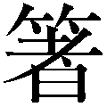

| ウラ読み「古代史の謎」77 | |
| 日本博学倶楽部 | |
| (2017) | |

ウラ読み「古代史の 」77
」77
日本博学倶楽部
二〇〇五年十一月、奈良県明日香村の甘樫丘付近で、七世紀の建物跡が発見された。
『日本書紀』によると、この地に邸宅をかまえていたのは蘇我蝦夷・入鹿親子となっている。日本の古代史上、最大の敵役として知られる人物たちである。谷を大規模に造成していることから、今回発見された建物跡は、「谷の宮門」といわれた蘇我入鹿の邸宅である可能性が高い。
日本の古代はに満ちている。現存する日本人の手になる同時代史料が非常に限られている上、その史料と中国に残された日本に関する記述の間に、しばしば齟齬が見られるためである。
古代史を研究する際に、歴史研究家が大いに参考にするのが、『古事記』『日本書紀』の二書だ。あわせて「記紀」と称されるこれらの文献は、現在の天皇家に連なる大和政権により編纂された。
しかし、これら「記紀」は編纂を行なった大和政権の意向を強く反映した記述になっており、事実が曲げられて記載されているともいわれる。それでも「記紀」に勝る一級の史料が存在しないため、歴史研究家は「記紀」をたよりに当時の様子を解明しようと試みている。
もちろん「記紀」以外にも歴史書は編纂されている。「記紀」が編纂される以前にも、聖徳太子と蘇我馬子が編纂を命じた歴史書、『天皇記』『国記』の二書が存在した。ところが、乙巳の変により蘇我宗家が滅亡する際、蘇我蝦夷はこれらの歴史書を燃やし、自らも灰燼のなかに消えている。つまり、現存しないのだ。
今回発掘された建物跡が本当に蘇我家の邸宅だった場合、この二書が発見される可能性も指摘されている。当時は紙ではなく木簡に書いていたため、一部が燃え残っていることも考えられるからである。
『日本書紀』にある蘇我親子は、天皇家にあだなす悪党として描かれている。史料にそうある以上、わたしたち現代人はそれが事実だったのだろうと思いがちである。しかし、蘇我一族の立場から描かれた史書が発見された場合、いままで事実だと思い込んできたことが覆る可能性がある。そこには、後代の「記紀」編纂者の思惑が含まれない、より当時の情勢に即した歴史が描かれているかもしれない。
古代史は史料の発見と遺跡の発掘により、いまなお書き替えられる余地が大いに残されている。現在はとして解明できない事柄も、新史料や遺跡の発見により、解き明かされる日が来るかもしれない。また、わたしたちが知っている古代史の常識も、根底から覆される可能性を多分に秘めている。
本書は、いまだ明らかにされない古代史上のを集め、なにがなのか、どうしてになっているのかを紹介している。たとえば、巨大古墳の主や、任那日本府の実態、キトラ古墳の天上天文図や遮光器土偶に隠された秘密などについて取り上げた。さらに、馴染みのない古代への理解や、興味・関心などを深める一助として、地図や人物系譜、遺物の写真などを豊富に掲載している。
本書に集められたも、いつの日か解明される日が来ると思われる。その日を待ちつつ、いまは神秘のヴェールに包まれた日本の黎明期に、思いをはせてみてはいかがだろうか。
二〇〇六年二月
日本博学倶楽部
ウラ読み「古代史の 」77 目次
」77 目次
日本に古代文字があった!? 『ホツマツタエ』にみる最古の文字
国宝「七支刀」を倭国へ贈った主は誰？ 刀の銘文に隠された古代の国際関係
実在したのか、しなかったのか？ 高津宮から探る仁徳天皇の正体
初代天皇は邪馬台国の人？ 初代と一〇代の天皇の名前が同じという
現在の天皇家は何番目の王朝？ 否定説も根強い戦後の王朝交代論
第二章
人類の起源と遺跡・遺物の新発見
旧石器時代〈前六〇万年～前一万四〇〇〇年〉
人類はやはり旅を続けていた!? 南米先住民と日本人の白血球の共通点
蝦夷はアイヌ人？ 和人？ 東北と北海道で文化と地名が一致する
第三章
狩猟・農耕時代の呪術と祭祀の真実
縄文時代〈前一万三〇〇〇年～前三〇〇年〉・弥生時代〈前三〇〇年～後二五〇年〉
なぜ広範囲に普及したのか？ 出土したヒスイのほとんどが糸魚川産という
日時計が真実を導く!? 「クロマンタ」と環状列石のミステリー
サングラスはなんのためのもの？ 遮光器土偶＝宇宙人説を解読!!
邪馬台国の所在を解く鍵になるか？ 卑弥呼が隣国からもらった鏡のありか
卑弥呼の墓か？ 文献から読む前方後円墳の墓古墳と卑弥呼の関係
第四章
激動の政権争いと古墳の主の正体
古墳時代〈二五〇年～七〇〇年〉
祭祀説・首長継承説・モガリ儀式説......いまなお続く埴輪をめぐる論争
日本独自の陵墓ではない!? 前方後円墳は朝鮮半島から来たのか？
四世紀に日本は朝鮮半島を支配していた!? の「任那日本府」の実態とは
日本軍のいたずらはあったのか？ 好太王碑文の文字改ざんの真偽とは
河内は九州勢力の経過地点!? 大型古墳が一時期だけ大和から離れた
結果は出たのか？ 長年研究されてきた『宋書』の「倭の五王」の正体
「ごみや」と「ごごに」仏教伝来の年代を二つ覚えなければいけないわけとは？
一つの棺に二人分の人骨が!! 藤ノ木古墳の白骨の持ち主を探る
第五章
日本国内に渦巻いた陰謀と政変の舞台裏
飛鳥時代〈五九二年～七一〇年〉
次の後継者までの橋渡しだった!? 相次いで女帝が登場した背景
真犯人は彼ではない？ 蘇我馬子は本当に崇峻天皇を暗殺したのか
真実は一塔三金堂の伽藍が握る？ 飛鳥大仏がつくられた時代を検証!!
遣隋使は別の政権から送られた!? 『隋書』が記している本当の「王様」
飛鳥様式の見事な再現！ 法隆寺再建が『日本書紀』に記されていない
新羅製!? アカマツでつくられた国宝・広隆寺半跏思惟像の「出身地」
星座を理解していなかった？ キトラ古墳に描かれた不正確な天文図
「倭国」と「日本国」は別の国!? 国号変更が明かす古代日本の実情とは
あの有名人も参加していた!? 上宮王家滅亡は入鹿の単独犯行ではない？
首塚に首はない!? 蘇我入鹿の首が切断されたとは後世の創作か
よく知られているのにだらけ！ 大化の改新は本当はなかった!?
「大化」は最初の年号ではない!? 年表に載せられない年号の存在
本当は百済を滅ぼしたかった!? 白村江の戦いで百済に救援軍を派遣した理由
天智天皇の残した法典!? 皇位継承で利用された「不改常典」というの法
墓の主は藤原鎌足？ 封印された阿武山古墳に埋葬された遺骨の正体
壬申の乱の不思議 蘇我氏が大海人皇子の勝利に貢献した真の理由
大津皇子に謀反の意志はあった？ 事件の背後に見え隠れする陰謀と皇子の本心
光明皇后誕生のための謀略!? なぜ長屋王は自殺に追いやられたのか
第六章
万葉歌人の正体と遷都のミステリー
奈良時代〈七一〇年～七八四年〉
正しい判断が出来なかった!? 聖武天皇が五年間も彷徨した真の理由
道鏡は天智天皇と血縁関係？ 皇位争奪にまで至った怪僧の出自を探る
第七章
伝説と に満ちた雅な時代
に満ちた雅な時代
平安時代〈七九四年～一一九二年〉
原作本は中国にある!? 『竹取物語』と『斑竹姑娘』の驚くべき相似点
本当は悲劇のヒロインだった!? つくられた悪女、薬子の真の姿
関東の武者と瀬戸内の海賊！ 将門と純友の間に密約はあったのか
日本一美人なのに日本一正体不明!? 歌と伝説に彩られた小野小町
装丁・写真――中山銀士
日本に古代文字があった!? 『ホツマツタエ』にみる最古の文字
日本人がはじめて文字を得たのは、中国から漢字が伝えられてからとされている。本来は表意文字だった漢字の一部を取ってカタカナをつくり、漢字の草体からひらがなをつくり、大和言葉を書きあらわす表音文字にしていったのが、日本の文字の発達の歴史だ。
そして、日本ではじめて書かれた歴史書が『古事記』（七一二年）であり、『日本書紀』（七二〇年）とされている。『古事記』はカナ交じり文で読み物風に、『日本書紀』は中国伝来の漢文を用いて正史としての価値を持たせている。この両者を読み合わせれば、日本の古代の歴史の流れがわかることになっている。
ところが、『古事記』や『日本書紀』が成立する六百年も前に編纂された『ホツマツタエ』という古代文献が存在する。
『ホツマツタエ』とは〝ホツマの伝え〟を意味している。ホツマは富士山を中心とした関東・東海地方を指すという。したがって、富士山の国の伝承といったような意味合いになる。
序文には、景行天皇五十六年の編纂とあるから、『日本書紀』の編年に西暦をあてはめると、この書は西暦一二六年頃の成立と見ることができる。
『ホツマツタエ』の特徴は、独特な古代文字で表記されていることだ。それは表音文字と思われる、○や□、△に縦線、横線といった直線を組み合わせた記号のようなもので、四八種類ある。
「ヲシデ」と呼ばれるこの文字は「いろは四十八文字」と同じ数であり、大和言葉を書きあらわすのに過不足がない。
四〇章からなる『ホツマツタエ』の内容を読み解いていくと、「記紀」に共通する部分もあるが、『古事記』以前の内容も含まれ、さらに「記紀」に欠落している部分を補う記述も数多く見られる。
全文が五七調の長歌体で綴られた流麗な文章ともいえる『ホツマツタエ』は、宇宙論から語源、歌論、死生観など、古代の日本人の精神論にまで及ぶところがあり、文学性も高い。
現在のところ、『ホツマツタエ』の成立を国内外のほかの文献、あるいは物的証拠で客観的に証明するものがないため、後世につくられた偽書であるとの見方が多い。とはいえ、質の高い日本独自の書であることだけは確かだとする学者もいる。
鎌倉後期の公、北畠親房（一二九三～一三五四）の著した『神皇正統記』によると、天皇は三種の神器を継承しなくてはならないとされている。この本が著されたのは、南北朝時代のことだ。南朝方と北朝方のどちらの天皇が正統かを争っていた時期のため、南朝方だった北畠は三種の神器を南朝方が所持していることを念頭においた上で、自陣の正統性を主張しようとしたのだろう。
三種の神器とは、神々が地上を統治するために降りてきたという天孫降臨の神話に由来する。
その神器は天照大神が孫のニニギノミコトに授けたもので、八坂瓊勾玉、八咫鏡、天叢雲の剣（のちに草薙剣として熱田神宮に祀る）の三つを指す。
そのうち八坂瓊勾玉と八咫鏡は、スサノオノミコトの粗暴なふるまいに腹を立てて天岩屋戸に隠れた天照大神を導き出すために、外で祭りをしたときに使われたものだ。天叢雲剣は、神々の住まう高天原を追われたスサノオノミコトが、出雲国でヤマタノオロチを退治した際に、裂いた尾から出てきた剣である。
ただし、勾玉については、あとから付け加えられた可能性も否定できない。なぜなら、持統天皇の即位に際して、「忌部宿色夫知によって、天皇の証明である剣と鏡が持統天皇に捧げられた」という記述が『日本書紀』に残っているからである。
この記述を信じるなら、『古事記』『日本書紀』が完成するまでの間は、神器は二種類だったことになり、その後、古墳時代の一般的な副葬品であった玉と鏡と剣の三点を、天皇の権威の象徴として持つことにしたと考えられる。
ところで、この三種の神器は現代も継承されているのだろうか。
伝えられるところによると、三種の神器は宮中に祀られ、遷都や行幸のときにも常に天皇に同行していたという。これは、第二次世界大戦直後までは厳格に守られていた。
ところが、『古語拾遺』によると、第一〇代の崇神天皇は、尊い神器を持つことを恐れて、八咫鏡と天叢雲剣の模造品をつくらせ、それを宮中に祀ることにした。
本物はというと、皇女・豊鍬入姫命に託されたあと、倭の笠縫邑を経て、伊勢神宮に祀られることになった。
そして、伊勢神宮に祀られていた天叢雲剣は、蝦夷征伐に向かうヤマトタケルノミコトに授けられることになる。
ところが、遠征の帰途、ヤマトタケルノミコトが命を落とす。ミコトは死亡する前、持っていた天叢雲剣を尾張国においてきた。そのまま戻らずに命を失ったため、天叢雲剣は尾張で祀られることになる。そのためにつくられたのが熱田神宮であった。したがって、宮中にある本物の神器は、八坂瓊勾玉だけということになる。
ただし、宮中の賢所にある八咫鏡は平安時代に三度も火事にあったとか、天叢雲剣は、壇ノ浦の戦いで、安徳天皇とともに海中へ沈んだともいわれている。もし模造品であるのならば、わざわざこのような記録が残されているのも妙だ。
結局のところ、神器のありかは「神のみぞ知る」といったところに落ち着くようである。
天皇の系譜は、初代を神武天皇とする。『古事記』や『日本書紀』では、天照大神の孫にあたるニニギノミコトが、日向国高千穂の峰に降り立ったことで国が整えられることになったとし、これが国づくり神話の天孫降臨説として伝えられてきた。
このニニギノミコトから数えて三代目の子孫で、「記紀」のなかでカムヤマトイワレビコあるいはイワレヒコという名が与えられているのが神武天皇だ。この時代の天皇名はすべて死後に送られる諡号（生前の行ないを尊び、死後に贈られる称号。「諡」は贈り名の意）で、「記紀」のなかでは別の名で表記されているのである。
彼は兄のイツセノミコトとともに、天下平定のために東への進出を決意する。ヤタガラスに導かれて日向から船出し、豊の国からいったん筑紫に渡ると、瀬戸内海を経由して各地を平定しながら難波に上陸する。
ここから内陸部の大和を目指すのだが、イツセノミコトが大和での初戦で先住勢力に敗れて落命する。イワレヒコはその後、海路で熊野に出て再び大和へ向かい、ようやく橿原宮で即位を果たして初代天皇となるのだ。
この難波への上陸後、橿原宮に至るまでの東征軍の艱難辛苦が語られる「記紀」のなかで、イワレヒコの前に立ちはだかる最大の敵が、ナガスネヒコという大和先住勢力の長である。イツセノミコトも彼の軍に討たれている。
こうした神武天皇東征記は、日本誕生物語のなかでも完全に神話に属する部分として扱われてきた。
とはいうものの、イワレヒコとナガスネヒコの激しい争いがあったことをうかがわせる遺跡を、いまも熊野地方に見ることができる。熊野の山岳地帯に残された石垣がそれである。
紀伊半島の山中、那智山、妙法山、烏帽子山、大雲取山の四山を囲むように、全長七〇キロも続く、日本の万里の長城ともいうべき石垣の列。自然石を積み上げた壁が人工物であることは確かで、場所によっては高さが二メートル、厚さは八〇センチに及ぶ箇所もある。
ところが、山中に築かれたこれほどまでの石垣なのに、どんな史料のなかにも建造の経緯を示すものは一切残されておらず、少なくとも神武天皇にはじまるという大和政権成立以後のものではないようだ。
とすると、イワレヒコの侵略に対してナガスネヒコが築いた防御壁だったために記録されなかったという可能性が考えられる。
神武東征記はまったくの神話ではなく、なんらかのかたちでイワレヒコ率いる九州政権が大和を侵略したという学説がある。この石垣は、くだんの学説を大きく後押しするともいえそうだ。
国宝「七支刀」を倭国へ贈った主は誰？ 刀の銘文に隠された古代の国際関係
奈良県天理市の石上神宮にある国宝「七支刀」は全長約七五センチの両刃の鉄剣で、左右に三つずつの枝刀がある。この奇妙な形をした剣は、四世紀後半に、日本に従属していた百済から献上されたものとされてきた。
この説が信じられてきたのは、『日本書紀』に「百済の久らが朝廷に赴き七支刀と七子鏡を献上した」という記述があるからだ。
しかし、現在ではこの説は支持されていない。なぜなら、七支刀には金象嵌の銘文が残されており、この文を見る限り、百済が日本に従属していたことを示す記述はないからだ。
七支刀の銘文は次のように刻まれている。
（表）泰［和］四年［五］月十六日丙午正陽、造百練［銕］七支刀、［生］辟百兵、宜供供侯王、□□□□作。
（裏）先世以来、未有此刀、百済［王］世［子］奇生聖音、故為倭王旨造、伝示［後］世。
「宜供供侯王」の部分を「侯王に供するに宜し」とすると、「侯王」というのは独立した王ではなく、宗主国に従う国家の王となる。つまり、百済から見ると日本は対等ではなく、服属国ということになる。
これにより、当時日本は百済に従属しており、その関係性を日本国内に伝示させるために七支刀を贈ったとも解釈できる。
しかし、七支刀の裏面には「倭王」という言葉が存在する。「倭王」という称号は「侯王」とは違い、独立した一国の王であり、百済王とは対等になる。
百済の王は、表面では「倭王」という称号を使っていないのに、なぜ裏面で「倭王」という言葉を使ったのだろうか。妙である。
そのため、じつは七支刀を贈ったのは、当時中国の南部を支配していた東晋であるという説が飛び出した。
東晋から見れば、百済も日本も自国の支配下にあるから、どちらの王も「侯王」である。その東晋が百済王に命じて、倭王へ下賜する刀をつくらせたというのである。
当時は、刀を賜ることで主従関係をあらわしたから、こういった見解にもうなずけるものはある。
また、「侯王」という言葉をあくまで慣用句と見て、百済と倭国は対等であったとする説もある。四世紀後半は、朝鮮半島において百済と高句麗との争いが激化していた。そこで、日本に援助してもらおうと百済王が倭王に七支刀を贈ったのだとか、百済が高句麗を破った戦勝記念に、協力してくれた倭王へ感謝のしるしとして贈ったともいわれている。
定説はまだないが、この頃中国（東晋）、朝鮮半島の国（百済）との外交は活発であり、日本も少なからず、これらの国と関わっていたことがうかがえる。
実在したのか、しなかったのか？ 高津宮から探る仁徳天皇の正体
名君として伝えられる仁徳天皇の陵墓とされるのが百舌鳥耳原中陵だ。大阪府堺市にあるこの古墳は、全長四八六メートル、前方部高さ一五・三メートル、後円部高さ一四メートルの日本最大の前方後円墳である。
仁徳天皇については、『古事記』や『日本書紀』に多くの伝説が残されているが、詳細についてはほとんどわかっていない。仁徳天皇は「倭の五王」の一人、「讚」に当たるとする説があるが、それに従うと、その没年は四三〇年前後と考えられる。
しかし、仁徳天皇陵から出土した円筒埴輪を基に古墳の造営年代を検証すると、五世紀の中頃から後半のものとする見方が有力となった。そうなると、仁徳天皇の没年と墳墓のつくられた間に二十年以上の開きがあることになる。
その上、「記紀」の仁徳天皇についての記述は、後世に創作されたものではないかとの説が出たことにより、仁徳天皇の存在自体が怪しまれることになった。
果たして、仁徳天皇は架空の天皇なのだろうか。それとも実在していたのだろうか。
一九八七（昭和六十二）年、大阪市にある難波宮跡の発掘調査中に、五世紀はじめ頃のものと推定される遺構が見つかった。
年代特定の根拠は、その遺構が難波宮跡の下にあった六世紀の遺構の、さらに下から発見されたためだ。
そのため、この遺跡こそが仁徳天皇の王宮・高津宮ではないかという説が浮上したのである。
また、『日本書紀』仁徳天皇元年正月条に「難波に都をつくる」と記されていることから、地理的にも一致する。
さらに、同書には仁徳天皇は海へ続く堀をつくったということも記されていることから、仁徳天皇が治める地は、港としての機能を果たしていたとも考えられる。
現在のところ、遺構の近辺がかつて港町であったことを証明するものは発掘されていないが、近隣の遺構からは、五世紀頃のものと推定される掘立柱の建物群が見つかっており、これらは倉庫として使われたのではないかと見られている。
となると、この辺りも港町であった可能性は高く、仁徳天皇の王宮があったとも、十分考えられるのである。
初代天皇は邪馬台国の人？ 初代と一〇代の天皇の名前が同じという
真偽のほどはともかく、万世一系とされる日本皇室の祖は、神武天皇ということになっている。神話の延長のような物語性の強い『古事記』でも、歴史書としてさまざまな史料や伝承までを併記した『日本書紀』であっても、それに変わりはない。
「記紀」での神武天皇は、天照大神の孫として高天原に降臨したニニギノミコトの孫、つまり、神話と歴史をつなぐ最初の人物として描かれる。九州の高千穂の峰が天孫降臨の地とされ、ここから東征して大和政権の緒となったとする物語が綴られているのだ。
もちろん神武天皇という名は、後世になって天皇の謚号としてつけられたもので、『日本書紀』では通称「カムヤマトイワレヒコ」、本名「ハツクニシラススメラミコト」として登場する。
この「ハツクニシラススメラミコト」とは、「国を治めたはじめての天皇」という意味だが、『日本書紀』のなかには、神武天皇とまったく同じ「ハツクニシラススメラミコト」と名付けられた天皇がもう一人いる。それが第一〇代の崇神天皇だ。
まったく同じ名で、しかも日本初という意味を込められた天皇が二人いるということから、現在では初代・神武から九代・開化までの天皇が創作された人物で、事実上、日本初の天皇と呼べる権力者は崇神天皇だったという説が有力だ。
崇神天皇に関しては、彼のものとされる前方後円墳が存在するところからも、実在した人物である可能性が高い。
一方の神武天皇は、崇神天皇の残した功績を基に創作されたのではないかという。たとえ架空の天皇像を描き出すにしても、なにがしかの手がかりが必要だからである。
では、〝崇神＝初代天皇説〟において、崇神天皇をモチーフとした神武天皇の功績とはなにかといえば、それこそ「記紀」に記された「東征」である。九州に渡来した崇神天皇率いる大陸系民族が東へ勢力を広げて大和朝廷を築いたという〝史実〟が、「記紀」の記述の基になっているというわけだ。
また、崇神天皇の時代に、七代天皇の皇女にあたる「ヤマトトトビモモソヒメノミコト」が占いを行なったという記述があることから、彼女を邪馬台国の卑弥呼になぞらえたのではないかともいわれている。
卑弥呼について記している『魏志』倭人伝では、邪馬台国は鬼道に仕える卑弥呼と、もう一人の男王とによって治められているとされ、この男王を崇神天皇に当てはめることもできる。
とすると、大和政権を築くことになった権力者は、九州にあったとされる邪馬台国の王と同一人物だったということになるのだが、果たしてその真偽はどうなのだろう。
現在の天皇家は何番目の王朝？ 否定説も根強い戦後の王朝交代論
第二次世界大戦以前、日本の天皇の系譜は万世一系のものだという認識が一般的だった。しかし戦後になり、古代史の研究が「現人神・天皇」という縛りから解放されると、王朝交代説がにわかに脚光をあびることとなった。
王朝交代説とは、系譜を一つにする天皇が、大和を中心に古代国家を建設・発展させてきたわけではなく、何度か政治勢力の交代があったとする説だ。
水野祐氏の「三王朝交代説」によると、四世紀から六世紀にかけて二回の王朝交代があり、現天皇家は、三番目の王朝の流れをくむものであるという。
三王朝は、古王朝・中王朝・新王朝からなる。まず、祭祀を司る呪術的性格を持った指導者が統治する古王朝が存在したが、九州地方に興った狗奴国が力を持ちはじめ、やがて大和の王朝を征服した。この狗奴国が中王朝を形成するに至る。
ここまでは、大陸出身の騎馬民族が九州を制圧し、大和王朝をも手中にしたという江上波夫氏の騎馬民族制服王朝説を発展させたものだ。
やがて、中王朝は応神天皇の跡を継いだ仁徳天皇が河内に拠点を移す。これを河内王朝と呼ぶ。
こののち、北方の豪族が台頭する。この勢力は近江、尾張を勢力圏内とし、河内、山背に進出。ついには大伴氏、物部氏を味方につけて新王朝を樹立した。この勢力を率いた継体天皇の新王朝こそが、現天皇家につながる王朝であるという。
もっとも、これらの説はすべて『古事記』『日本書紀』の記述だけを前提にしたものであるから、信用できるかというとそうではない。そのため、王朝交代説を否定する見方も多い。
また、そもそも古代においては、完全な皇位継承体制が整ってはおらず、有力豪族による連合政権で、そのなかの有力者が天皇になったのではないか、あるいは、五世紀の大和朝廷には二つの系列の王朝が存在し、力関係によってどちらかが皇位に就いたのではないか、などの説もある。
ただし六世紀になると、天皇を中心とした政治体制が徐々に整ってくるという点では、どの説も共通している。
沖縄県与那国島の地元の漁師たちの間では、海中に奇妙な岩場があるという話が半世紀以上も前から知られていた。しかし、ここに専門家の調査が入ったのは、一九九二（平成四）年になってからのことである。
ダイビングスポットの紹介のため海中地図を作成していたダイバーは、その一帯の岩場が、石造のテラス、階段、排水施設を思わせる溝といった、まるで城郭のような構造をしていることに気付いた。そして、どう見ても人工建築物としか見えないこの岩場を「遺跡スポット」と名付ける。
その報告を受けて、琉球大学の調査団が結成された。海洋地質学、地震学、海洋考古学を専門とするメンバーを中心にした最初の調査では、岩場の構造が確認されることになった。
その調査によると、岩場の基底部の広さは、東西が二五〇メートル、南北が一五〇メートルほどであった。高さは二六メートルあり、水深二五メートルの位置にあるため、先端の一メートルほどが海上から飛び出している。
岩場の全体像は、階段状のピラミッド型になっていて、下から上に通じる通路のようなものがあった。アーチ門を備えた入り口、周辺を取り巻くループ道路など、形状が琉球王国の城、首里城に似ているところから、ほぼ人工物に間違いないという調査結果も出された。
とはいえ、当初は、海底の自然地形を波浪が岩を削っていくうち形成された、という可能性を探る方向で調査が進められていた。
その結果、角が直角でまっすぐ数十メートルも続く壁面、自然に浸食された場合に削り落ちているはずの石片がない、人間が加工したと思われるクサビ穴が見つかったといった事実から、人工物と定められた。
さらに、この海中石造物が人の手が加わったものであることを示す、強力な証拠も見つかっている。琉球地方で霊力を持つといわれる入れ墨と同形の「＋」「ｖ」といった線刻文字の入った石板がそれだ。線刻のほかに、動物のレリーフを描いた石板も発見されている。
遺跡ポイントの近くの陸には、海中の石造物と似たような構築物もあり、海底、陸上の双方から同じ石器が見つかったことも興味深い。
こうしたいくつもの事実が存在するものの、行政が遺跡に指定するまでの調査が完了しているわけではない。今後のさらなる調査が待たれるところである。
一九三一（昭和六）年、直良信夫氏が兵庫県明石市にある、大久保村西八木海岸の断崖下で、ヒトの腰骨を発見した。
残念ながら、一九四五（昭和二十）年、東京大空襲のため現物は焼失している。しかし、一九四八（昭和二十三）年、この骨の石膏模型を鑑定した元東京大学名誉教授・長谷部言人氏により、「ヒトの骨であることは間違いないが、新人、旧人のどちらにも似ていない。骨の形状から、これは姿勢が前かがみであったからだろう。それなら原始的な特徴といえるのではないか」との結論が出された。そして、「ニッポナントロプス・アカシエンシス」と名付けられた。いわゆる「明石原人」である。
ここで、「明石原人は、七十万年前のヒトの骨かもしれない。それなら、世界最古の原人といえるのではないか」との期待が高まった。これが証明できれば、日本考古学界の快挙である。
考古学出土品の年代測定をする場合、重要な手がかりになるのは地層である。どの地層から出土したかによって、おおよその立証ができる。先史以前にも地層は確実に形成され、その痕跡を明確に残しているからだ。
さて、明石原人を発見した直良氏は、残念ながらこの点の立証には重きをおかなかった。
骨に付いていた土から考察して、前期旧石器時代にあたる「更新世」（約二百万～一万二千年前）前期の地層にあったものが、偶然崖崩れが起きたことで露出したのだろうと考えた。
このときに、実際にはどのあたりの地層ががけ崩れによって露出したのか、その地層は本当に前期旧石器時代のものといえるのかといった地質学的検証を行なえばよかったのだが、そうした実証がなされることはなかった。
のちに、この前期旧石器時代のものとされた地層は、じつは中期石器時代のものではないかという説も出ている。
もし仮に、中期石器時代の地層だったということになれば、明石原人の生きた時代は「原人」の時代ではなく、「旧人」の時代ということになるのだ。
さらに不都合だったのは、直良氏が骨が埋まっていたと考えた地層は、骨が保存されるには条件の悪い地層であることがわかったことである。
明石原人は、果たして「原人」なのか。
この論争にピリオドを打ったのは、遠藤万里氏と馬場悠男氏だった。一九八二（昭和五十七）年、形態学的分析によって、「明石原人」の骨は、縄文時代以降の日本人の骨であることを立証した。つまり、「原人」ではなかったのである。
とはいえ、この「明石原人」の骨の発見は、今回のような論争を巻き起こすことで、人骨研究を活性化させたことだけは確かである。
人類はやはり旅を続けていた!? 南米先住民と日本人の白血球の共通点
日本人の祖先は大陸からやって来たといわれる。最初に大陸を離れ日本にやって来たのが古モンゴロイドの原日本人で、これが土着して進化したのが縄文人であるという。
その後、朝鮮半島から渡って来たのが新モンゴロイドの弥生人だ。縄文人と弥生人はしばらくは並立するかたちで共存していたが、やがて混血がはじまり、現在の日本人になったとする説がもっとも有力である。
これは、骨格、血液型分布といった人類学上の分析と、言語、文化、神話といった民俗学上の分析とを総合した研究の結果、いわれるようになった。
この従来の説に、まったく新しい光をあてたのが、成人Ｔ細胞白血病（ＡＴＬ）分布の研究からわかった「渡来ルート分析」である。
ＡＴＬは、はっきりした地域特性を示す病気で、地域集積性がある。それに気付いたのは、愛知県がんセンターの田島和雄氏だ。田島氏の研究成果で、もっとも驚かされるのは、はじめに日本列島に住みついた原日本人と、南米アンデス地方の先住民は、同じ祖先をルーツに持つということである。
これは、大陸から日本列島に移動してきた古モンゴロイドたちが、さらに移動を続けて南米アンデス地方にまで達したという可能性を示唆している。
日本人と南米アンデス人は、胃がん、胆がんが多いといった共通項を持つ。田島氏はそれを基点として、白血病ウイルスの有無から人種の類型を特定したのである。
原日本人をウイルスキャリア・プラスとすると、弥生人はキャリア・マイナスだった。現在の日本ではキャリア・プラスの人が九州や東北、北海道に多い。これにより、日本列島中央部からプラスとマイナスの混血が起こり、マイナスの人種がプラス人種を列島の南北両端へ押しやっていくといった人種移動が推察できるという。
アンデス山中にも、この原日本人と同じキャリア・プラスが多い。この点からも、原日本人とアンデスの先住民は祖先を共有している可能性が高いとするのが田島氏の論である。
では、プラス人種はどのようにして南米大陸にまで渡ったのだろうか。氷河期に大陸からベーリング海峡、北米を経て南米に達したとする説があるが、この問題に関しては結論にまで至っていない。ルート上なら、少しはプラス人種が残っていてもおかしくないはずなのに、北米にはプラス人種がおらず、移動ルートを特定できないためのようだ。
地球のあちらとこちらで、まったく同じ白血病ウイルス型を持つ人種が、人類移動のを秘めたまま共存しているのである。
現代の日本人は、縄文人が大陸から渡って来た弥生人と混血しながら形成されたと考えられている。
日本に土着した弥生人は、狩猟や採集といった原始生活から農耕を中心に据えた集団生活を営みはじめ、やがて大きな集落をつくり、支配者を戴いて、国家という社会をまとめあげていった。
だが、その過程で別の民族が渡来し、それが既存の政権にとって代わったという説がある。
一九四八（昭和二十三）年、考古学者の江上波夫氏による「騎馬民族征服説」がそれで、東北アジアの夫余系騎馬民族が朝鮮半島を南下したのち、北九州に渡って建国したというものである。
この騎馬民族国家が、畿内を中心に国家建設を進めていた大和政権すなわち朝廷となっていったというのだ。
江上説の論拠になっているのは、古墳の形態の変化である。
自然の丘陵の形を利用して造営されている古墳時代前期の前方後円墳は、弥生文化を引き継ぐ呪術的、平和的な穏やかさがあるという。
それに対して後期のものは、戦闘的で現実的な趣に支配されているといい、副葬品にも同様の、農耕民族と騎馬民族の生活様式の差をうかがわせる特徴が見られるとしている。
しかし、江上説は各方面からの反論にさらされた。まず、史実として認められていることから判断すると、応神天皇の時代には、急激な政権の変化をうかがわせる部分がなにもない。
また、北方民族が樹立した国家であれば、言語学的になんらかの影響が生じるはずだが、大和言葉にはそれらしきものが見えない。
その上、江上説のいう夫余系騎馬民族が、朝鮮半島南下の過程で半島に建設したとされる辰王国は、とても外来勢力によって樹立されたものとはいえず、まして辰王の系譜が東北アジアの騎馬民族につながるという証拠もない。
古墳時代前期には、それほどいなかった馬が後期になると急激に数を増やし、それが生活様式に変化を与えたという江上氏の主張も、否定的な見方がされている。倭国は朝鮮半島へ出兵した事実があり、その際に見聞したもの、また持ち帰ったものが変化につながったと考えられるからだ。
こうして見ると、騎馬民族が日本に国家を建てたという可能性は低いように思われる。
確かに古墳時代には騎馬民族の渡来が増えたかもしれない。江上説によれば、騎馬民族は環境への順応性に富み、積極性や進取性にも恵まれていたという。そのため、仮に多くの騎馬民族出身者が渡来したとしても、倭人社会に溶け込んでいったと考えられるかもしれない。
蝦夷はアイヌ人？ 和人？ 東北と北海道で文化と地名が一致する
日本は、けっして単一民族国家ではなく、アイヌという北海道を中心とした先住民族や、かつて独立王国の民として繁栄した琉球民族がいることは周知の通りだ。
本土を中心に文化を築いた和人が農耕民族なのに対し、千島列島からカムチャツカ半島、樺太にまで広く独自の言語と文化を育てたアイヌ人は狩猟民族というのが、両民族のもっとも大きな差だとされてきた。
古代においても、すでに異民族の存在は認識されていたようで、和人による中央集権国家の大和朝廷は、東北から北海道にかけて居住し、朝廷に従わない人たちを「蝦夷」と呼んで自分たちと区別していた。
のちに「えぞ」と読んで北海道の地名となるこの表現は、古代においては「えみし」であり、東北から北海道にかけてを生活圏としていた、言語も生活習慣も異なる土地や人たちのことだった。
アイヌといえば北海道が連想されるが、東北地方の地名には北海道同様「ペッ」「ナイ」が最後に付くものが少なくなく、東北蝦夷＝アイヌ人説の基になっている。
ただ、東北では「ペッ」が「別」、「ナイ」が「内」という字に当てられて、判別しにくくなってはいる。それでも、アイヌ民族の文化圏は本州北部まであったというのが戦前までの歴史観だった。
ところが、最近の調査で、蝦夷も農耕文化を持っていたことがわかり、蝦夷と呼ばれた東北人も和人と見なしていいのではないかという学説が浮上しはじめた。
これまでは、少なくとも平安時代のはじめ、坂上田村麻呂が蝦夷征伐に派遣されるまで、東北地方に稲作はなかったとされてきた。だが、弥生時代にすでに稲作のあったことが東北各地の遺跡出土品から確かめられたからだ。
稲作ばかりでなく、前方後円墳のような日本の古代文化を象徴する痕跡もあり、東北蝦夷は古墳時代には和人たちに同化していたと見ることもできる。
では海を渡った北海道の文化はどうかというと、道南地方は東北地方と同じように、早くから農耕文化の圏内に入っていたことがわかっている。弥生時代に受け入れようとした稲作が一度途絶え、北海道独自の狩猟採集を中心とした「続縄文文化」の時代になってはいるが、農耕文化を持ったことは確かだ。
このように見てくると、蝦夷と呼ばれた人々を和人と見なすことも、あながち間違いではないかもしれない。
しかし、東北地方にアイヌ起源と見られる地名や生活様式も存在するため、一概に和人と断定することはできない。蝦夷は、和人・アイヌそれぞれの文化をとり入れながら、徐々に日本人としてまとまっていったと見ることもできるだろう。
なぜ広範囲に普及したのか？ 出土したヒスイのほとんどが糸魚川産という
古代の装飾品として、もっとも一般的な宝石がヒスイである。日本全国の遺跡から、縄文時代後期以降のものと推測される、ヒスイを磨いてつくった玉が発掘されている。なかでも北日本では、ヒスイは宝飾品というだけでなく、権威を象徴するものでもあり、また、魔除けや呪術にも欠かせないものだったという。
北日本でヒスイがもてはやされることになったのは、糸魚川（新潟県）という日本最大のヒスイ産地を擁していたからである。糸魚川市の姫川、小滝川、また青海川橋立峡谷が、良質のヒスイの原石の産地とされていたのだ。
現在でも、これらの川の下流域や海岸の砂浜では、まれにだが水力で自然に磨かれたヒスイ玉を採取できることがあるらしい。
さらに驚くべきことに、東日本一帯に分布する縄文遺跡から発見されるヒスイのほとんどが糸魚川産だという。糸魚川産は質が良いため、肉眼でもそれと判別できるといわれてきたが、蛍光エックス線による産地分析によっても、その事実が確かめられている。
これだけ多く出回っていた糸魚川産のヒスイだが、その存在が確認されたのは比較的新しい。
一九三八（昭和十三）年、このことはまず岩石学会に発表された。考古学界がこの事実を知るのは、さらにあとのことで、第二次世界大戦後、ようやく検証作業がはじまっている。それまではヒスイの産地といえばビルマ（現在のミャンマー）が有名で、なんらかの手段でビルマヒスイが日本に入ってきていたという説もあったくらいだ。
検証の結果、糸魚川ヒスイは、近隣の山形をはじめ秋田、岩手、宮城、福島と広く分布していることがわかったが、どういうわけか比較的距離のある青森県からもっとも多く出土している。
東北地方全体で出土した縄文時代のヒスイは約九〇〇点あるが、じつはそのうちの七〇パーセント近くが青森からの出土品なのだ。
近年では一九八六（昭和六十一）年に下北半島の六ヶ所村上尾駮１遺跡で調査が行なわれたが、そこから出土した九二点のヒスイ玉のほとんどが糸魚川産のものだった。
糸魚川から下北半島まで直線距離にして五三〇キロあることや、勾玉の加工技術などを考えると、縄文時代にはすでにヒスイを精製する技術を持った一族が存在し、長距離の流通ルートに乗せるなんらかの交易もあったことがうかがえるのである。
日時計が真実を導く!? 「クロマンタ」と環状列石のミステリー
秋田県鹿角市に残る大湯遺跡は、日本の考古学遺跡では珍しい巨石文化を見せてくれる。西洋文明に見られる環状列石、いわゆる「ストーンサークル」が残されているのだ。
十和田湖を源流とする大湯川の下流、鹿角盆地に巨石の遺構が存在しているという事実は、昭和のはじめ頃より知られていたが、本格的な発掘調査が行なわれたのは一九五一（昭和二十六）年になってからのことだった。
調査の結果見つかったのは、東西に分けられる二つの遺構で、約四千年前の縄文時代後期のものと確認された。
東の野中堂遺跡、西の万座遺跡の双方とも外径四〇メートル規模、内外に二重、あるいは三重の環状の石積みがあった。列石の中央には柱石があるほか、この列石帯の中間にも柱石が立てられている。
そこからさらに放射線状に石が並び、東西南北の標示石もあった。
この遺構は日時計の体裁を整えているようにも見えるのだが、並び方からすると日時計としては役に立たないと専門家は見ている。
周辺の住民も当初は遺跡と気付かなかったようで、遺跡の石を河川工事に利用したり、庭石や漬物石として使ったりするなど、保存状態は必ずしも良好ではなかったらしい。そのため完全には復元されていないのだが、それを考慮に入れたとしても時計ではありえないという。
確かに、漬物石に使えるくらいだから、西洋文明のストーンサークルに比べれば、一つ一つの石は巨大とはいえない。ただ、環状に石を並べ、その内側を神聖な場所ととらえる精神は、日本でも共通していたようだ。
列石そのものを墓の集合体とすれば、ここは祭祀信仰の場だったともいえる。周辺から祭祀用の土器が見つかっているからである。
この祭祀説を裏付けるのが、地元では「クロマンタ」と呼ばれる黒又山の存在だ。
遺構のすぐ近くにある八〇メートルほどのこの山は、遠くから見ると美しい三角形の稜線を持っている。そこから、この山をピラミッドに見立てる向きもあり、ストーンサークルとの関連性が指摘されるようになったのである。
平成になってはじまった黒又山の調査では、山そのものは溶岩が爆発せずに盛り上がってできた自然の造形だが、山に祭祀用の小型の壺、浅鉢などの土器の破片が大量に埋められていることがわかった。
しかも、黒又山の一部は人工的につくられた階段状ピラミッドの体裁を持っていることも判明した。これは中南米での信仰対象と同じ形式だという。
やはり大湯遺跡が信仰の場であるのだろうか？ さらなる研究により実態が明らかにされるのが待たれる。
青森市に残されている三内丸山遺跡は、縄文時代のこの地の人々の暮らしぶりをつぶさに知ることができる遺構といえる。
まるで宇宙人をかたどったような珍しい土偶、遮光器土偶が出土することで知られていたこの遺跡は、一九九二（平成四）年にはじまった調査でかなり大規模なものであることが改めて確認された。さらに、縄文前期から中期に至る千五百年間にわたって、この場所に人間が住み続けていたこともわかった。
この遺跡からは、竪穴式住居の跡だけでも八〇〇件発見されており、そのうち同時期のものと考えられる住居跡が四〇～五〇件ずつあるという。そういった事実から、少ないときでも二五〇人、多いときには五〇〇人規模の大集落だったという推測がなされた。通常の遺跡の一〇倍を超える巨大集落である。
そして、高床式大型住居の痕跡が、巨大な集落に身分・階級といったものが生じはじめていたことをうかがわせる。
とはいえ、支配者階級と被支配者階級といった区分が意識されていたわけではないようだ。五〇〇人にも達する集団が生活していくためには、まとめ役が必要になる。それが首長といった立場だったのだろう。
遺跡からの出土品には、ヒスイや黒曜石の細工もの、樹皮を編んだ袋のようなもの、漆製品などがある。こういったものから、生産・加工・流通の組織の存在が見えてくる。
また、栽培植物としてヒョウタン、エゴマ、ゴボウなどの種子が見つかっているし、集落周辺にクリ林の広がっていた跡もわかっている。計画・管理栽培が行なわれていた可能性があるのだ。
つまり、これらの作業を円滑に進めるために、自然発生的に代表者が登場し、この時代なりの身分、階級ができ上がっていったと考えられるのである。
遺構のなかには直径一メートルもの穴が並んでいるところもあり、これは巨大建造物の存在を示すもので、おそらく神殿だったのだろうという説が有力だ。数百メートルにわたって続く墓地遺構もある。
集落の構成が各施設とも計画的に配置されていることもうかがえるため、共同作業のリーダーが存在したであろうことも推測されている。
要するに指導者や首長がいたといっても、特権を持つ支配者というものではないと思われる。
必要に応じて役割が交代していくという意味での縄文期の身分制度、階級制度の萌芽を教えてくれるのが、この三内丸山遺跡といえよう。
日本の遺跡からの出土品で、弥生式文化後期を代表するといわれているのが銅鐸である。
二〇センチに満たないものから一メートルを超えるものまで大きさはさまざまで、鐘のように吊り下げられるようになっており、下部には打ち鳴らして音を出すための「舌」と呼ばれるものがついていた。
出土するのは、畿内を中心に、四国の東部、中国地方、中部地方の西部の区域からだけで、ほかの地方では見られない。加えて、この銅鐸は日本独特のものらしく、中国や朝鮮では出土しないことから、外来のものではないことも判明している。
ただ不明なのは、その使用法である。『古事記』や『日本書紀』に記されている神話時代までさかのぼっても、銅鐸らしきものは一切登場してこない。
これは、「記紀」の著された八世紀には、銅鐸に関する情報がなくなっていたことを意味している。銅鐸は地上からいつの間にか姿を消していたようだ。
六六八（天智七）年、近江国で崇福寺建設のための用地を整地しているとき、「奇妙な宝鐸」が発見されたと、十二世紀に著された歴史書である『扶桑略記』にある。これが銅鐸のことらしい。さらに聖武天皇時代、下って平安時代になってからも、近畿一円で銅鐸が発見された記録がある。
当時の人々はこれを仏教と結びつけ、銅鐸が発掘された場所を霊地としたり、宝鐸として祀ったりしている。なかには、音が当時の音律にかなっていたため、楽器と見なしたと記す史料も存在する。
江戸時代になり各地で開発が進むにつれ、出土する銅鐸の数もぐっと増えた。だが、あいかわらず使用法は判明せず、仏教伝来以前の古墳時代より、さらに古い時代のものということだけが確認されている。
明治時代に入ると、東京の本郷弥生町から発見された土器によって、弥生時代にはすでに存在していたことが明らかになり、ようやく銅鐸のつくられた時代が推測されるようになる。さらに、銅鐸の発見される場所が人里離れた辺鄙なところ、しかも必ず地中に埋められていたこともわかり、新たな視点が生まれた。
弥生時代は稲作の伝来した時代である。集落が生まれ、村ごとの儀礼や祭祀も行なわれるようになる。銅鐸は、そのときに使われた道具だろうという説で学者たちの意見が一致を見たのだ。
それでも、なぜ土中に埋められてしまったのかという問題についてはいまだ解明されていない。
畿内とその周辺からしか出土しないことから、九州にあった政権が畿内の勢力を征服したあと、人心の統一をはかるために、被征服地の祭祀道具を埋めさせたとする説もあった。しかし、両圏がそれほどまでに明確に対立していたわけではなく、この説には賛同できないとする説もある。このについては今後の新たな展開が待たれるところである。
旧石器時代から縄文時代にかけてさまざまな道具がつくられたが、その素材として非常によく使われたのが黒曜石である。
ただし、黒曜石はどの地域からでも産出するというわけではないので、産地から交易により手に入れる必要があった。そのため、日本各地の遺跡で出土する黒曜石の産出地を調べれば、当時の交流文化圏を見ることができる。産出地が同じ黒曜石を用いた地域が、一つの文化圏を形成していたと考えられるからだ。
たとえば、島根県、京都府、福井県では隠岐島産の黒曜石を使った石器が出土し、青森県三内丸山遺跡では北海道産の黒曜石が発見されている。これらの地域は、それぞれが同じ文化圏にあったことを示している。
そして、同一産出地のもので驚異的な分布範囲を持つのが、関東地方の縄文遺跡から出土する神津島産の黒曜石である。南関東から静岡県の天竜川あたりまでの一五か所ほどの遺跡で見つかっており、これらの遺跡から出土する黒曜石の八〇パーセント以上が神津島産だという。
神津島といえば伊豆諸島の中央部に位置し、東京から南へ約一八〇キロもの距離がある。これにより、旧石器から縄文時代にかけて、すでに海上に黒曜石を運ぶ航路があったことがわかる。
千葉県船橋市にある縄文後期の遺跡からは、南洋産の貝殻細工の装飾品も見つかっており、これも伊豆諸島産とすれば、物資の交易が行なわれていたことを示しているのである。
この時代の水上交通手段といえば丸木舟だ。遺跡から見つかるこの時代の丸木舟は、大木を一本切り倒し、Ｕ字型にくりぬいただけのものにすぎない。櫓や舵、櫂が存在した痕跡は見られないため、ひたすら前進するだけの舟であったと考えられる。
また、丸木舟をつくる作業はすべて石斧でなされたわけだが、長さが六～七メートルに及ぶ大きなものも出土している。
この大きさの舟が、おそらく外洋航海のためのもので、ふつうは長さ三～四メートル。大木を切り倒し、乾燥を待ってくりぬき作業にとりかかり、完成後も、虫食いなどの保守管理にも気をつかわなければならなかったはずだ。
それだけの手間と時間のかかる交易であっても、神津島産の黒曜石は流通させる価値のある品質であったのだろう。
さらに関東上陸後は、川筋をたどって各地へ運び込まれたようで、丸木舟の流通ルートが完成していたと見る向きもある。
サングラスはなんのためのもの？ 遮光器土偶＝宇宙人説を解読!!
土偶とは、古代遺跡から出土する土でつくった人型の焼き物である。日本国内で見られるばかりでなく、ヨーロッパの後期旧石器時代の遺跡などでも発見されている。
国内外を問わず、土偶は女性の姿をしていることが多く、おそらく地母神や生殖祈願などの信仰のためにつくられたのだろうといわれる。
こういった土偶の一つで、日本の東北地方、おもに津軽地方から出土している特殊なものが遮光器土偶である。
遮光器土偶は、頭部、胴体、両手・両足という単純な形状だが、その特徴は頭部にある。両目が横に大きく広がっていて、その上下部分にも目立つ装飾部分が見られることだ。
この特色が、アラスカのイヌイットが雪原での反射光を遮るためにサングラスをかけた姿に似ているというところから、「遮光器土偶」と命名されている。
遮光器土偶は、江戸時代頃から築城や開墾などの際に発見されることが多くなり、その存在が知られるようになった。津軽藩主などは、参勤交代で江戸に参上する折、珍しい焼き物として毎回将軍家に献上していたという。
この奇妙な形に注目して分析したドイツ人の古代史研究者は、この土偶を「宇宙人」あるいは「宇宙服を着た人」をかたどったものと見なした。
その上で、かつて地球外生物が地球を襲ったことがあり、それを示すものではないかと推測している。
確かに目の部分だけでなく、胴体や手足の部分にレリーフ状の装飾が多く、分厚い宇宙服を着ているように見えなくもない。
土偶そのものは、単純な板状のものから、しだいに厚みを持つ立体感ある装飾的なものへと、時代とともに変遷しており、遮光器土偶は縄文時代晩期の遺跡から出土している。
ところが、生活や祭祀の場から見つかるのではなく、遺構の覆土、つまり捨て場から土器片などとともに大量に出土している。もちろん墳墓の副葬品という役割でもない。これはなにを意味するのだろうか。
さらに、遮光器土偶は「炭化珪素の焼き戻し」という工法でつくられている。現代のセラミック工法と同じ技術レベルであるというから驚きだ。
これだけの特殊性がそろうと、荒唐無稽と思われるドイツ人研究者の「宇宙人説」という仮説も、もっともなものに感じられる。
邪馬台国の所在を解く鍵になるか？ 卑弥呼が隣国からもらった鏡のありか
中国の史書『魏志』の「倭人伝」に登場する邪馬台国が、本当はどこにあったのかという問題は、長年にわたって論争の的になっている。北九州、畿内が候補地として論じられながら、いまだにどちらか一方に絞る決定的な論拠は見つかっていない。
そうしたなか、邪馬台国からの朝貢に対して魏王が授けたとする銅鏡が、邪馬台国論争のを解く鍵になるのではないかといわれてきた。金印や太刀のように一つか二つというのではなく、一〇〇枚は贈られたというのだから、年月を経ても出土する可能性が高いからである。
そして、その鏡が「三角縁神獣鏡」ではないかという説を唱えたのが、考古学者の小林行雄氏だ。
三角縁神獣鏡は、鏡の裏に想像上の神獣の絵を刻み、縁が独特の三角形になっている銅製の鏡である。銅鏡の研究を長くしていた小林氏は、この鏡が日本からのみ出土して、中国では発見されていない点に注目した。
本国からは出土せず、日本でのみ見つかるのは、魏が倭人に贈るためだけにつくらせた特別な鏡だったからだというのが小林説である。
昭和二十年代の終わり頃、京都にある椿井大塚山古墳から、この三角縁神獣鏡が三二面も見つかったことは、小林説によれば邪馬台国畿内説の裏付けとして強い味方になるはずだった。
しかし椿井大塚山古墳は、卑弥呼の時代より百年近くもあとの四世紀前半の古墳であることから、小林説に疑問を投げかける研究者も多い。
彼らによれば、邪馬台国畿内説そのものを否定するわけではなく、三角縁神獣鏡が、大陸製ではなく国産のものだと、魏からの贈り物説を疑問視するもののようだ。
確かに三角縁神獣鏡には、魏の時代のものであることを示す年代が刻まれ、それ以外の銅鏡からも大陸製と見て間違いないものが見つかっている。
しかし、魏の時代に日本と中国に交流があったことは、四世紀にはすでに知られていたはずだ。
そこで大和の豪族が、自分の家系が由緒正しいものであることを示すため、わざわざ古い年代を刻んだ銅鏡をつくらせたという可能性を指摘するのが、反論の論旨である。
日本でのこうした論争は、中国の考古学者にも興味を抱かせた。王仲殊氏は、鏡の形式、中国古代史、日本古代史を重ね合わせた考察から、日本の三角縁神獣鏡は、日本に渡った呉の国の職人によるものだという論文を発表している。つまり、魏から贈られた卑弥呼の鏡ではないということである。
『魏志』倭人伝の書き残した邪馬台国の存在は、本物の贈り物の銅鏡が確かめられれば、その糸口がつかめるかもしれない。
卑弥呼の墓か？ 文献から読む前方後円墳の墓古墳と卑弥呼の関係
魏の歴史書『魏志』倭人伝には、倭国の女王・卑弥呼が魏の皇帝に使いを送り、「親魏倭王」の地位を得たと記されている。魏皇帝・明帝の治世下で景初三年とあるから、西暦二三九年の出来事である。
だが、こんな卑弥呼にも、やがて没するときがくる。
これも魏の史料でしか見ることができないが、正始八年のこととなっていて、親魏倭王の栄誉を得てから十年に満たない西暦二四七年のことだ。このとき、邪馬台国に異変が起こった。
「女王卑弥呼と男王卑弥弓呼の君臨している狗奴国との間に争乱が起きた」と『魏志』倭人伝は記し、続いて突如、「卑弥呼が死んだ」と書かれている。
記録はそれだけで、病死老衰、あるいは戦死といった死因は不明だ。そのため、暗殺ではなかったのかともいわれることになる。
『魏志』倭人伝での卑弥呼は、「鬼道をよくする」とされていて、シャーマンだったことが知られている。
巫女として吉凶を占うことで人心を掌握し、国を統治していた卑弥呼だから、もし狗奴国との戦況が芳しくなければ、シャーマンとしての能力が疑われる。
とすれば、統治者としては用済みの存在となり、新しい巫女にとって代わられるのが宿命だ。争乱のなかで、次の権力を狙う巫女による暗殺事件が起こっていても不思議はない。
さらに同書は、卑弥呼の死に続いて、彼女の墳墓がつくられたことを記し、墳墓の規模も伝えている。「径百余歩なり」というのが、その大きさだ。
ここから、かなり大きな墓が造営されたことはわかるが、どこにつくられ、現存しているかどうかは不明である。巨大な墳墓ということは、時代区分でいえば古墳時代を迎えてから出現するもので、卑弥呼が活躍したとされる弥生時代にはなかったものだ。
考古学者・都出比呂志氏の考案した、古代史の年代区分を示す「編年表」によると、卑弥呼が没したと考えられる三世紀半ばが、ちょうど弥生時代と古墳時代の境界に当たる。
はっきりした年代を決めにくいため、遺跡や出土品からの推定でしかないが、最近の研究の結果では、ちょうど卑弥呼の墓が造営された頃から、古墳時代がはじまったらしいとされている。
そのため、大和盆地にある日本最古の前方後円墳「墓」が、卑弥呼の墓ではないかといわれているのである。
この墳墓は、従来より『日本書紀』に登場する「倭迹迹日百襲姫」のものとされてきた。『日本書紀』のなかでも、その巨大さが述べられているからだ。
彼女は、実在した最初の天皇といわれる崇神天皇の大伯母に当たる女性で、占いで天皇の助力をしたと、そのシャーマン的性格が記されている。
こういった卑弥呼との共通点も、墓こそが卑弥呼の墓という見解を生む要因となっている。
日本の古代史を検証する際には、中国の史料を手がかりとすることが多い。
しかし、「徐福伝説」に関しては、中国での記録だけではなく日本の伝承をも基にした研究が行なわれている。
司馬遷の著した『史記』には、呪術でもって秦の始皇帝に仕えた徐福の姿が記されている。始皇帝の命令で、不老長寿の薬を持つという仙人探しに東の海へと乗り出した徐福は、たどり着いた先で王となり、二度と帰国することがなかったという。
『史記』にそう記されてはいるものの、徐福はあくまで伝説上の人物とされてきた。ところが、一九八一年に行なわれた中国での地名調査で、清朝の時代まで「徐福村」を名乗っていた土地が確認された。しかも村民のなかに、自分たちが徐福の子孫だと教えられてきたという一家もいたのである。
発掘調査でも徐福らしき人物の存在をうかがわせる造船や漁業関係の出土品が発見され、彼の実在説がにわかに注目されはじめた。さらに村人たちは、徐福がたどり着いて王になった場所が日本だと信じていたのである。
ならばその土地はどこなのか、という議論が日本で生まれることになった。
『史記』によると、徐福は三〇〇〇人という船団で不老不死の薬探しの旅に出て、「平原広沢」という広大な土地を獲得し、そこにとどまったとしている。
中国から見て東海というと、朝鮮半島、台湾なども候補に挙がるが、台湾では地理的に見て南すぎるし、その時代すでに中国の支配下にあった朝鮮半島も考えづらい。となると、やはり日本が最大の候補地となる。
そして、中国での伝承に呼応するように、日本各地に徐福伝説が残っているのも事実なのである。
徐福が船に持ち込んだもののなかに、「五穀の種子」があったと『史記』に記されていることや、徐福が稲作をもたらした人物として日本で伝承されていることも、奇妙な符合といえるだろう。
とくに佐賀県の金立神社では、稲作と医薬を伝えた人物として徐福を崇拝する祭りが現在も続いているし、三重県熊野市には「徐福神社」と名乗る社も存在する。
ただの伝説だけでなく、史料として残っているのが、徐福の墓とされるものがある静岡県富士宮市だ。富士山麓にある神社の家に伝わる『宮下文書』では、後世の創作という疑いはあるものの、徐福の来日をはっきり記しているという。
この徐福伝説の、九州から本州へかけての広がり方から、彼がじつは神武天皇ではなかったかという説まで生まれている。
祭祀説・首長継承説・モガリ儀式説......いまなお続く埴輪をめぐる論争
日本の古墳に特徴的なのは、前方後円墳、方墳、円墳といった形状のほかにも、墳丘や堀の外堤に並べられた埴輪の存在が挙げられる。
埴輪には産出地域や年代によって多様な種類があるが、大きく二つに分けることができる。筒型の円筒埴輪と人物、動物、家などを模してつくられた形象埴輪である。
『日本書記』によると、野見宿が殉死者の代わりに土製品を皇后陵においたことが埴輪の起源になったといわれるが、考古学的見地からすると、否定的な意見が強い。
また、明治期の考古学者・坪井正五郎はその用途について、埴輪を墳丘深くに配置することで土留めになり、地上に樹立すれば玉垣になるとも説明したが、真偽のほどはわかっていない。
現在でも、埴輪の用途についてはさまざまな説が唱えられている。
たとえば、なにかの儀式に関係していたのではないかという。死者を埋葬したときに、その墳丘の上では、死者を悼む儀式が行なわれる。そのときの飲食の器として円形埴輪は用いられたというのだ。以後もそこへ樹立したのは、死者に対して儀式が常に行なわれているように見せるためであろうとの話もある。
また、埴輪を樹立することで、墳墓に近付かないようにとの警告の意味もあったのではないかといわれる。
古代では、死者を埋葬する前に仮埋葬をし、近親者が死者の霊を慰めるためモガリの儀式を行なっていたが、死体の代わりに埴輪をおくことで代用したのかもしれない。有力者のモガリは長期間に及ぶから、この代用説が確かなら、負担が随分と軽減されたはずである。
そして埴輪には、これを墳墓のまわりに配列することで、その内側を聖域化する意味合いがあったのではないかとも考えられる。
埴輪研究においては、埴輪自体の形の研究とともに、どのような配列であったかが重要なのだが、古くに発掘された古墳出土の埴輪においては、配列を示した史料が残っていないものもある。
今後の解明が待たれるが、古墳に埴輪を樹立したのは、どんな場合にせよ、死者への悼みの気持ちが込められていたに違いない。
日本独自の陵墓ではない!? 前方後円墳は朝鮮半島から来たのか？
前方後円墳は日本独自の形式で、世界にも類を見ない。長い間そう教えられてきた日本人に驚きをもたらしたのが、韓国で見つかった同形式の墳墓である。
一九八三（昭和五十八）年、韓国南東部にある都市、固城で、松鶴洞一号墳の存在が確認された。
自然の丘陵を利用して造営してある日本の前方後円墳と同様、近接して並んだ丘陵を二つ合わせた前方後円型のこの墳墓は、全長五六・七メートルに達する。全長四八六メートルある日本の仁徳天皇稜ほど巨大ではないが、数ある墳墓のなかでは中型になる。
このため、韓国の考古学者たちは、前方後円墳は朝鮮半島の古代国家でつくられはじめ、のちに日本へ伝えられたものだとする説を唱えるようなった。この説をあと押しするかのように、その翌年には、方山里で同型の長鼓山古墳も発見された。
その後の研究により松鶴洞一号墳は前方後円墳ではないことが確認されたが、ほかにも朝鮮半島南西部を中心に次々と前方後円墳が発見され、副葬品も日本のものと似通っていることから、韓国では活発な議論が行なわれているという。
しかし、日本の考古学者たちの間では松鶴洞墳墓の発見以前から、朝鮮半島に前方後円墳が存在する可能性が広く信じられていた。古墳時代には倭国と朝鮮半島の国々の間に交流があったからである。
四～五世紀にかけて日本に多くの渡来人がやって来たように、日本から百済へ渡った人も少なくなかったはずである。百済・伽耶（任那）といった当時の半島の国家と外交関係があったということは、人的交流もあったと見るのが自然であろう。
そうして朝鮮半島に渡った倭人が、故国の墓制にならって前方後円墳を造営した可能性は十分にあると思われる。
それを裏付けるのが、墳墓の造営された年代である。日本の前方後円墳は三世紀頃からつくられているのに対し、朝鮮半島で見つかった同型の墳墓は五世紀以降のものばかりである。松鶴洞墳墓は六世紀のものと推定される。
このため、日本の形式が半島に伝わったものだとする説が、現在の日本では一般的になっている。
ただし、時代の判定はできても、朝鮮半島の前方後円墳が誰の墳墓であるかまでは解明できていない。
日本の前方後円墳は、王や政権中枢の有力者の墓として造営されたものだ。しかし、韓国内で見つかったものが半島諸国の王族の墳墓なのか、百済政権となんらかの関係があった倭人のためにつくられた墳墓なのかは、まだ明らかになっていない。
四世紀に日本は朝鮮半島を支配していた!? の「任那日本府」の実態とは
四世紀後半から六世紀の半ばまで、朝鮮半島南部に「任那日本府」がおかれ、日本は朝鮮半島南部を支配していた――。これが戦前までの「任那日本府」の位置付けである。
しかし、「任那日本府」の記述が出てくるのは『日本書紀』がほとんどで、朝鮮半島諸国や中国の史料には、日本府に関する記述がない。そのため、これまで定説とされた前述の「任那日本府」の解釈に疑問の声が上がってきた。
戦前にこうした解釈がなされたのは、日本が朝鮮半島を侵略するための口実として利用したかったからであって、都合よく歴史を解釈したのではないかというのである。
それでは、「任那日本府」の実状とはいったいなんだったのか。
朝鮮の史書『三国史記』によると、任那日本府があったとされる時代に朝鮮半島の一部を支配していた新羅にとって、日本とは、自国にたびたび出没する海賊のようなものだとされている。
また、百済にとっての日本は、国交はあったが、日本側が主張しているように、百済が日本に朝貢していたのではなく、対等な関係にあったとされている。
これらのことから、「任那日本府」が朝鮮半島南部を支配するための日本側の機関だったというのはあまり信用できない。ただし、「任那日本府」という言葉自体は史書に登場するので、この呼び名が存在したことは確かだ。
「任那日本府」を「みまなのやまとのみこともち」と読み下すこともある。とすると、「日本府」とは役所のことではなく、朝廷からの使者ということになる。
また、力のある豪族が単独で朝鮮半島に進出し、そこに「日本府」を設立したという説や、朝鮮半島の小国群が、日本との外交の窓口として「日本府」をつくったとする説もある。
どの説をとるかによって、「日本府」の立場は大きく異なる。朝廷の使者なら、「日本府」とは、朝廷側に属するものだが、豪族が組織したものなら朝廷にも朝鮮半島の小国群にも属さず、私的な機関となる。朝鮮半島側の国の外交窓口なら、朝鮮半島の小国群に属することになる。そのほかには、朝鮮半島在住の日本人をそう呼んだのではないかという説まである。
いまだ定説はないが、解釈の仕方によって、その存在理由がこれほど変わるのも珍しい事例といえよう。
日本軍のいたずらはあったのか？ 好太王碑文の文字改ざんの真偽とは
中国吉林省鴨緑江中流北岸に、「好太王碑文」がある。高さは六・四メートルと巨大で、西暦四一四年に好太王の子・長寿王が、父の功績を顕彰するために建立したものだといわれている。
この時代の朝鮮半島には、百済・新羅・伽耶の三国があり、中国北東部から半島北部に位置していた高句麗が加わって覇権争いを繰り広げていた。
日本もまた、大陸から「倭」と呼ばれていた当時の政権が、朝鮮半島に遠征していたらしいことが『日本書紀』に記されている。
それでも、『日本書紀』の内容は後世の創作による記述の部分が多いと見るのが古代史学者の常識で、中国の史書などを基にして、史実か否かを検証することが可能なのは六世紀以降とされている。
「倭」に関しては、邪馬台国以後、大陸の史料には登場していなかったため、「の四世紀」といわれた時代もあったが、好太王碑文に「倭」の文字が刻まれており、の一部が解き明かされることになった。
碑文は全文が漢字、しかも欠けて読み取りにくい箇所があるものの、「かつては高句麗の属国だった百済や新羅を、倭兵が辛卯の年（三九一年にあたる）に海を渡ってきて破り、臣民としてしまった」と読み取ることができる。
これは、勢力を広げた大和政権が、九州を制覇して海を越えたという『日本書紀』の記述と一致するものといえる。
ところが、この碑文の解読に関して朝鮮半島の学者たちから異論が唱えられることになる。日本が碑文の拓本を手に入れた経緯から、内容を改ざんして発表したのではないかというのだ。
日本が拓本を手にしたのは一八八三（明治十六）年で、陸軍参謀本部から派遣されていた陸軍中尉がひそかに持ち帰ったものである。そのため、のちに日本が起こす日清戦争の大義名分として、かつては大陸を治めていたこともあるという史実を捏造したと反論されたのである。
また、拓本の捏造がないとしても、「海を渡って」の部分は、日本が渡海したことを意味するのでなく、高句麗が海を渡っていって百済や新羅を臣民にしたのだとする説もいわれた。
ところがその後、中国で陸軍が手に入れたものより古い時代の拓本が発見され、内容が変わりないものであることも確かめられた。これにより、改ざん・捏造論は沈静化している。
河内は九州勢力の経過地点!? 大型古墳が一時期だけ大和から離れた
四世紀はじめから中頃まで、大型古墳は大和地方に築かれていたが、末頃になると河内地方に出現するようになる。そして六世紀半ばには、また大和地方で巨大古墳がつくられはじめた。このような古墳の移動は、なぜ起こったのか。古墳時代の大きなとして、考古学者の間でも論争が絶えない。
このの解釈として、三つの説が挙げられる。
一つ目は、政治の中心は大和にあったが、墓域だけが一時的に河内に移ったというもの。
二つ目は、当時の大王の継承方法はのちの時代のように確立されておらず、その時々の有力豪族が握っていた。そのため、四世紀末から六世紀にかけては、河内地方の豪族に政権が移ったが、その後、再び大和地方の豪族の手に取り戻されたというもの。
三つ目は、九州地方で国をつくっていた集団がその勢力を拡大し、近畿地方に上陸したというものだ。
河内は、海から渡ってきた集団にとって、最初の上陸地である。そのため、九州の勢力はまず河内に落ち着き、そこで巨大古墳をつくった。六世紀になると、さらに大和地方へと進出しはじめたという。
ただし、どの説も決定的ではない。墓域のみが河内に移ったという説では、天皇陵が后の出身地に築かれたとの仮説に基づいている。確かにこれに当てはまる事例もある。
しかし、たとえば仁徳天皇陵とされる陵も、実際に仁徳天皇を葬った場所ではないともいわれ、見直し作業が迫られている。とすれば、被葬者が確定しない限りは、この仮説の検証はできない。
河内地方に政権が移ったとする説は、大王の陵と見られる巨大古墳が築かれていることからも有力な根拠といえそうだが、政権が移っていたと実証できないのが難点だ。
そして、九州の勢力が上陸したとすれば、横穴式石室を持つ古墳をつくっていたはずである。
朝鮮半島の文化がいち早く入ってきていた九州では、四世紀末からすでに横穴式石室が広まっていたため、河内の古墳群にその影響が見られてもおかしくない。だが、河内の古墳群に横穴式石室があらわれるのは五世紀末まで待たねばならないのだ。
さらに、解明されていないはまだある。
河内地方の古墳群は、古市古墳群と百舌鳥古墳群に分かれる。数々の巨大古墳を調査すると、古市から百舌鳥へ、そしてまた古市へ、次は百舌鳥にと、交互に築かれている。
巨大古墳の造営には、その周辺の民衆が総動員される。そのため、民衆の負担を考慮して、場所を交互に移し変えたのではないかといわれるが、これも定かではない。
大和地方から河内地方へ、そして再び大和地方へと巨大古墳は移動したが、河内地方内でも古市から百舌鳥へ、再び古市へと交互に移動している。この「交互に」という共通点になんらかの関係があるのだろうか。その真偽は闇につつまれたままである。
結果は出たのか？ 長年研究されてきた『宋書』の「倭の五王」の正体
中国の史料にその名を刻みながら、実体がの人物というのは少なくない。「倭の五王」はその代表的な人々だ。
五世紀の中国史料『宋書』に登場する「讚・珍・済・興・武」の五人が、『日本書紀』に記されたどの天皇に該当するのかが、長きにわたって研究され続けてきた。
三世紀半ば以降、途絶えていた日中外交は、倭からの使者が四一三年に東晋へ入貢することで再開される。宋建国後の四二五年には「讚」の名が見え、次がその弟の「珍」による四三八年の朝貢となる。
そして四四三年に、「済」の朝貢に対して安東将軍の称号が与えられており、四六二年には、世子（王位継承者）「興」の使節に対して、安東将軍の継承を認めたと記され、その弟である「武」は、倭国王・安東将軍を自ら名乗って使者を遣わしている。
これ以外にも日本からの使者は数度にわたって訪中しているが、具体的な名前と、それぞれの関係性がわかる記述は、この五件のみだ。
最初の二人と、あとの三人の関係は記されているものの、「珍」と「済」の関係は明らかではない。
これを『日本書紀』に記されている天皇系譜と照合した結果、親子・兄弟という関係から、後半の三人はおそらく允恭・安康・雄略の三天皇だろうとされてきた。すると前半の二人は、この三人の先代・先々代となるため、「珍」が反正天皇、「讚」が履中天皇ということになる。
ところが、『宋書』よりのちの時代に書かれた『梁書』によると、「賛」の兄弟は「彌」となっている。「彌」が「珍」だとすると、「珍」と「済」は親子関係になってしまう。『日本書紀』は、履中・反正・允恭の三人が仁徳天皇の息子（三兄弟）だとしているから、整合性がなくなるわけだ。
ここから、「讚」を仁徳天皇と見る説が唱えられたり、「讚・珍」の政権と後半の三人の政権は別の王朝だという説が生まれたりもした。
ただ、別王朝とする説は、『宋書』がどの王の名にも倭王を冠しているところから、同一王朝と見るのが普通で、やや無理がある。
しかも「武」の時代の記述には、「倭王の王統は累代にわたって継続している」とはっきり指摘している箇所も存在する。
そういった混乱のなか、埼玉県の稲荷山古墳から出土した木簡により、「武」の中国における命名法が推測される。雄略天皇の実名「ワカタケル」から、「タケル（武）」の漢字が使われたに違いないとされたのだ。
この命名法からすると「ミヅ」とも読む「珍」が、本名「タヂヒノミヅハワケ」であった反正天皇と考えられる。しかしどちらも推定でしかなく、論議が終結したわけではない。
大和政権が日本の統一王朝として膨張する過程で、九州地方に起こったのが筑紫君磐井の反乱である。『日本書紀』では、継体天皇二十一年の丁未の年としているから、西暦五二七年の事件と考えられる。
大和政権は、新羅の侵略を受けた朝鮮半島南部の地・任那に、救援の兵を送ることを決定する。任那と日本の関係は深く、日本はそこからいくらかの利権を得ていたからだ。
継体天皇は近江毛野という名の将軍に兵を率いさせ、半島へ向かわせる。この援軍の進路を妨害したのが筑紫君磐井という、北九州を本拠としていた豪族だった。
『日本書紀』では、これを新羅から賄賂を送られ、以後筑紫と正式な国交を結ぶとそそのかされた磐井の裏切りだったと記す。
つまり、磐井の乱は単なる妨害ではなく、北九州政権の独立の目算が隠された「反乱」だったということになる。
磐井の造反に対しては火の国（肥前・肥後）や豊の国（豊前・豊後）の豪族たちも磐井に味方して翌年まで尾を引き、古代史上では例のない、極めて大きな戦いが九州各地で繰り広げられた。
歴史書である『日本書紀』のほか、主として天皇系譜を綴った『古事記』の継体天皇の条にまで、反乱と鎮圧の経過が記されていることからも、その衝撃がうかがえる。
九州一円の豪族が反旗を翻したのは、それまでの大和政権の朝鮮に対する外交政策で、彼らが大きな犠牲を強いられていたからだ。半島の近くに位置するだけに、兵力も金銭的にも、彼らにかかる負担は大きかったはずである。その不満を察した新羅の策略が功を奏して、反乱へと走らせたのだろうと考えられている。外交問題に端を発した日本初の危機だ。
一方で、まったく別の見解を示す学説もある。『日本書紀』が、あくまで大和朝廷によって編まれた史書だから、内政問題をすりかえたのではないかと見るのがこの見解である。
つまり、磐井の反乱などではなく、その頃並立していた大和朝廷と九州政権が覇を競った内乱の戦いだったのではないかというものだ。
これによると、勝利した大和朝廷が、自分たちの政権の歴史観に合わせて、地方豪族の反乱というかたちで処理したというわけである。いずれにしても、この反乱を鎮圧したことで、大和朝廷がより強固なものになっていく。日本の大半が大和政権の下に降ったきっかけとなる出来事だったのである。
「ごみや」と「ごごに」仏教伝来の年代を二つ覚えなければいけないわけとは？
日本史では年代の暗記にゴロ合わせを用いるが、仏教伝来の年は「ごみや（五三八年）」と「ごごに（五五二年）」の二つを覚えなければならない。
もっとも、仏教の伝来はこうした年よりも前に、大陸から渡来した人たちによってもたらされていたはずである。インドに興った仏教は、中国や朝鮮半島を経て、それぞれの国で受容されたのちに日本に伝わってきているからだ。
ここでいう伝来の年とは、民間の私的な自然伝播ではなく、仏像・経典・僧侶の三宝が備わって公式に日本へ紹介された年のことだ。三宝とは仏教の重要な要素であるこれら三つを、宝にたとえたところからきている。この三宝の贈り主は百済の聖明王である。
それを記した日本側の史料が、年代に関して二つの説に分かれているため、学者の間でもどちらの年が正しいのか決めかねているのである。
日本の正史として扱われる『日本書紀』は、仏教伝来を「欽明帝の十三年にあたる壬申の年」とし、西暦では五五二年になる。
一方で、『上宮聖徳法王帝説』『元興寺伽藍縁起并流記資材帳』によれば、「欽明帝の七年にあたる戊午の年」としている。後者の二つの史料では欽明天皇の即位年に『日本書紀』との年代に不一致があるためズレが生じているものの、十干十二支の示す年を西暦にすれば五三八年になる。
これは『日本書紀』によれば宣化天皇の三年に当たるが、少なくとも聖明王が三宝を届けたのは、日本の欽明天皇の時代だったという認識だけは一致している。
どちらの年により信憑性があるかとなると、いずれも決定的な論拠に欠け、学者による意見の統一を見ない。
また、平安時代末期の歴史書『扶桑略記』では、仏教は欽明天皇以前の継体天皇の時代に伝わったと記していたり、五世紀には九州北部で弥勒信仰が盛んになっていたともいわれたりしている。仏教は民間レベルではすでに知られていたために、公伝の年もあいまいでかまわなかったのかもしれない。
ただし、当時日本と交流のあった百済の史料に解きを求めるならば、五三八年が有力になる。この年、百済では遷都が行なわれており、聖明王が政治的意図をもって三宝を日本へ贈ったという可能性が高くなるのである。
『日本書紀』に記された日本の皇統譜では、第二六代が継体天皇、それ以後、安閑・宣化・欽明と、二九代までを彼の三人の子供たちが順番に皇位を継承したことになっている。
時代順に記事を記す編年記の体裁をとっている『日本書紀』は、この間の歴史として継体天皇の死による安閑天皇の即位年を五三一（継体二十五）年としながらも、異説として、継体天皇の崩御年は五三四（継体二十八）年と伝えられているとも併せて記している。
それでも、あえて継体天皇の崩御年を五三一年としたのは、『百済本記』という朝鮮半島にあった国の史料に基づくと注釈しているのである。
その『百済本記』は、五三一年に、「日本では天皇および太子、皇子ともに亡くなったと聞く」と記している。確かに、継体天皇は亡くなったようだ。しかしこれでは、安閑天皇・宣化天皇になったはずの皇室継承者も同時に死んでしまったことになる。
さらに『日本書紀』は、「安閑元年」を、西暦では五三四年にあたる甲寅の年であると定めているが、継体天皇の崩御から安閑天皇が即位するまでに、三年というの空白期間を生じさせている。
『日本書紀』自体が、継体天皇の死に関してこうした褄の合わない記録を残している上、後年になって書かれた史料には、欽明天皇即位年を、継体天皇崩御年と同じ五三一年と記録したものがいくつか存在する。これでは安閑・宣化天皇の治世がなかったことになる。
こうした史料を合わせて導き出された答えが、継体天皇以後の皇室内乱説だ。その背景には、当時の有力な豪族だった大伴氏、蘇我氏の勢力争いもうかがえるという。
五三一年、継体天皇の死をきっかけに後継者争いに端を発した政変が起こる。蘇我氏に擁された欽明天皇が即位するものの、大伴氏が巻き返しをはかって、二年後に新たに安閑天皇を擁した王朝を立てる。つまりは二朝が並立していたという。
その後、安閑天皇が没したあとを宣化天皇が継ぎ、彼が亡くなったことで、ようやく欽明天皇の統一王朝になったと考えれば、即位年の褄が合うことになる。
しかし、天皇と太子、皇子がともに殺されたという『百済本記』を確かなものとして信じるとすると、安閑・宣化両天皇の存在そのものがなかったことになり、二朝並立説には矛盾が生じてしまう。
『日本書紀』が、大和政権の正統性を裏付けるために書かれた史伝だということを割り引いて考えても、この天皇崩御年、即位年のは解けないままになっている。
一つの棺に二人分の人骨が!! 藤ノ木古墳の白骨の持ち主を探る
奈良県生駒郡にある藤ノ木古墳は、千年以上もの間、未盗掘のまま保存されていることがわかったため、一九八五（昭和六十）年の発掘調査には大きな関心が寄せられた。
前方後円墳に代わって造営されるようになった円墳であるところから、おおよそ六世紀後半のものとされ、仏教伝来からはじまる大和政権の中央集権化の過程に光をあてることになると期待も高まった。
そして、藤ノ木古墳からは人骨が二体見つかり、誰の墓なのかという点に興味が集まった。だが現在のところ、どちらも成人男子のものであるところまでは判明しているものの、人物の特定までには至っていない。
墓の持ち主が誰かを求める説は複数ある。まず第一に、藤ノ木古墳が法隆寺のすぐ隣に位置していることから、聖徳太子の関係者である可能性が高いとし、とくに太子妃の祖先である膳一族の墓とする説がある。一方、斑鳩の豪族・平群一族の墓とする説は、隣接する平群郡の古墳群とつくりが似ているという事実を根拠にしている。
さらに、額田部家の墓とする説は、藤ノ木古墳の代表的な出土品である馬具類に注目して唱えられたものである。実用として使うには大きすぎ、装飾も多いため、馬を用いた儀式用の馬具と考えれば、その儀式を司る一族だった額田部氏の名が一番に挙がるということから唱えられた説だ。
また、出土した副葬品が全般に豪華なもので、国際色にも富んでいるところから、その当時の権力者である蘇我氏や物部氏の名が挙げられることもあった。
ところが、古墳の成立年代を詳しく調べると、藤ノ木古墳の成立年代は、ちょうど前方後円墳から円墳に形式が変わっていく途中にあたることがわかった。
大王の一族や有力豪族の族長が幅を利かせていた時代には、まだ前方後円墳が造営されていた。とするならば、膳・額田部・蘇我・物部の一族のものではない確率が高くなる。
そこで、一つの棺に二人分の人骨を合葬するという奇妙な事実に着目し、同時期に立て続けに死者が出た一族が史料から探されることになった。
『日本書紀』からそれを探れば、五八七（用明二）年に蘇我馬子が殺害した穴穂部皇子と宅部皇子の名が見つかる。
二人は、蘇我氏と対立していた物部守屋と組んで皇位を狙ったために殺された。もっとも、皇子の墳墓であれば陵堂が建立されていても不思議はないが、どこからも墓誌は発見されておらず、二人の皇子の墓と断定する根拠もない。
混迷を極める藤ノ木古墳の論争は、まだ収束しそうにない。
『万葉集』巻頭を飾るのは次の二首である。
あかねさす 紫野行き標野行き 野守は見ずや 君が袖振る 【額田王】
紫草の にほえる妹を憎くあらば 人妻ゆゑに われ恋ひめやも 【天武天皇】
『万葉集』巻一を代表するこれらの句のなかで、天武天皇が額田王を「人妻」と詠んでいるところから、彼女はほかに夫を持つ身だったことがわかる。
それでは夫が誰だったかといえば、『万葉集』巻二、巻四、巻八などに、額田王の天智天皇を慕う歌、天智天皇の死に際して詠んだ歌などが見られるため、彼女の夫が天智天皇だったことが確かめられる。
ひるがえって『日本書紀』を見ると、天武天皇の妻として額田姫王の名が記されている。ここから、万葉歌人・額田王と額田姫王は同一人物だろうとされてきた。
彼女は、最初は天武天皇夫人だったが、のちに天智天皇の妻となったということだ。もちろん、これは二人が中大兄皇子、大海人皇子と呼ばれていた時代からの恋愛関係の果てに帰着したものであろう。兄弟に愛された女性ということで額田王美女説なども生まれている。
ところが『日本書紀』には、額田王、額田姫王ともども天智天皇の妻としては記されていない。『日本書紀』が正式な史記として記録されたものであることを考えると、この矛盾はどこから来るのだろうか。
二つの名前は確かに似てはいるが、「姫」の文字の有無という明確な相違がある。『日本書紀』には、額田部皇女という別の似たような名も見えるが、これは推古天皇が帝位につく前の名前である。このように考えると、額田という共通性だけに惑わされて、額田王と額田姫王とを同一人物と断定する必要はないと考えられる。
そこで、改めて『日本書紀』に額田王に該当する人物の名を探したのが、『人麻呂は誰か』（新泉社）を著した坂田隆氏だ。氏は著書のなかで倭姫王の名に注目した。天智天皇は後宮に多くの夫人がいたことが記されているが、そのなかでただ一人、皇后に立った女性である。
額田王は『万葉集』に、天智天皇の葬儀の最後の行事として行なわれる御陵退去に際して、群臣・后妃を代表して詠んだ歌が収録されている。ここから見て、額田王は天智天皇の皇后だったと推察し、おそらく倭姫王の『万葉集』における呼称が、額田王として統一されたのだろうとするのが坂田氏の主張だ。
非常に興味深い説ではあるが、果たして真相はどうなのだろう。
次の後継者までの橋渡しだった!? 相次いで女帝が登場した背景
神話時代から今日に至るまで、一二〇人を超える天皇が即位している。だが、その系譜のなかで女性の天皇は一〇人に満たない。ところが、奇妙なことに全体の一割にも達しない女帝が、七世紀から八世紀に集中して誕生している。その背景には、どのような事情がからんでいたのだろうか。
一般的にいわれているのは、皇太子が幼い場合、成長して帝位につけるようになるまでの中継ぎ、あるいは後継候補がたくさん擁立されるときに争いにならないように、または、大きな政変後の混乱を避けるための緩衝的役割を担わされたことによる即位だ。
日本史上で最初の女帝となった推古天皇は、蘇我馬子による崇俊天皇暗殺という事件ののちに即位している。彼女は三代前の敏達天皇妃であり、欽明天皇の娘でもある。
その五十年ほどあとに誕生した皇極天皇は敏達天皇の血を引く皇女で、夫だった舒明天皇の後継者となっている。これは後継者争いを回避するための即位である。そして彼女の治世下で、蘇我入鹿が殺される乙巳の変が起こったのをきっかけに弟の軽皇子に譲位する。だが、孝徳天皇となった軽皇子が没すると、斉明天皇として重祚（退位した天皇が再び即位すること）している。
彼女たちは、自ら望んで即位したわけではなく、蘇我氏や中臣鎌足といった、ときの権力者に担ぎ出されたことによる政略的な側面が強い。ただし、天武天皇の跡を継いだ持統天皇は、例外的に自ら望んで即位したといわれる。
とはいえ、彼女は実子の草壁皇子への自然な譲位ができるようにと考えての即位だったというから、やはり中継ぎ、橋渡し役だったことに変わりはない。
結局、早世した草壁皇子のかわりに持統天皇の跡継ぎとなるのが孫の文武天皇で、彼が没すると、再び女帝が頻発するようになる。
元明天皇、元正天皇と二代にわたって女帝が続き、聖武天皇でようやく男性が登場するも、再び彼の娘が孝謙天皇として即位する。そして彼女は間に一代を挟んで重祚し、称徳天皇となる。
いずれも後継者候補が複数存在するため、緩衝役を務めたとされるが、陰の権力者であった藤原氏が自分たちの血を引く皇族を天皇にしたいと狙った政略だったとする史観もある。
ただ、多数の女帝が登場した背景としては、「飛鳥・白鳳・奈良時代と、律令国家が成熟していく過程でやむをえず起こった皇位継承にまつわる混乱」ととらえるのが一般的だ。
それでも称徳天皇を最後に、九世紀以降、ほとんど女帝が登場しなくなるのは、彼女が僧の道鏡を重用して彼に帝位を狙わせるなど、皇室にとっての危機を招いたためともいう。
真犯人は彼ではない？ 蘇我馬子は本当に崇峻天皇を暗殺したのか
五九二（崇峻五）年、使者からの貢物を受け取る儀式に出席を依頼された崇峻天皇は、その会場で東漢直駒に殺された。この暗殺の首謀者は、ときの実力者・蘇我馬子である。
崇峻天皇は馬子の後ろ盾で即位したのだが、馬子が思っていたほど従順ではなく、傀儡にならなかった。そのため、業を煮やした馬子によって抹殺された。
この謀略の布石として、馬子は任那復興を名目に、おもだった兵力を朝鮮半島へ出兵させており、天皇を守る臣下もなく、誰の妨害も受けずに天皇暗殺を速やかに行なったのである。
そして通常、天皇崩御のときは三年間のモガリの儀式が行なわれ、その後埋葬されるのだが、崇峻天皇はその日のうちに倉梯岡陵に葬られた。
これが崇峻天皇暗殺劇の概要である。しかし、『日本書紀』に記されたこの内容は、脚色されているのではないかといわれている。
馬子が崇峻天皇をうまく操れないために抹殺したという動機が弱いからだ。天皇の即位さえも意のままだった馬子にとって、いくら抵抗しようとしたところで崇峻天皇が太刀打ちできるはずはなかっただろうというのである。
じつは、崇峻天皇暗殺の首謀者は別にいたのではないかとする見方がある。その見方に立てば、馬子首謀者説は馬子の評判を貶めるための策略であり、あくまで『日本書紀』の記述にすぎないことになる。
首謀者は反蘇我氏の人間だったのではないか――。
『日本書紀』は、天武天皇系の人々によって編纂されたものである。これらの人々の立場は、反蘇我氏ゆえに、事実を改ざんしたのではないかと考えられるのだ。
そうなると、本当の首謀者は誰だったのか。
作家の小林久三氏は、息長氏と秦氏犯人説をあげている。当時、一般的に考えられているほど蘇我氏の力は強くなかった。そんな状況のもと、両氏は蘇我氏と反目し合っていた。そこで、両氏がはかって、蘇我氏方の天皇である崇峻天皇を暗殺する。
その後、息長氏と秦氏が支えた天武天皇系の皇族が即位すると、『日本書紀』が編纂されることとなる。その際、自分たちの肩を担いだ人物が暗殺事件を起こしたとあっては具合が悪いので、馬子が犯人にされたというのである。
崇峻天皇のモガリが行なわれなかったのも、蘇我氏と対立していた両氏の憎悪が凄まじかったためだろうとするのが小林氏の見解だ。
蘇我氏と息長氏・秦氏との抗争は、大化の改新によって蘇我氏が失脚するまで、何度も繰り返されていたと考えられる。
奈良県明日香村からは、なんのためにつくられたのかが不明な石造物が多数発見されているが、そのなかの一つに「酒船石」がある。このめいた石は、長さ約五・三メートル、幅約二・三メートル、厚さ一・一メートルの巨大なもので、花崗岩でできている。
「酒船石」という名前は、酒の醸造に使われたという伝説から来ているが、その真偽はわかっていない。
酒船石の用途については、ほかにも天体観測装置という説や、砂金などの精製施設、油絞り装置、生贄の台、道教の儀式施設など、さまざまな説が出た。推理作家の松本清張氏に至っては、遠くペルシア発祥の宗教、ゾロアスター教の密儀に使う薬酒の調合台ではないかという説を唱えたが、決定的なものはない。
諸説紛々したなかで、二〇〇〇（平成十二）年、解明の手がかりになる大きな発見があった。亀形石造物である。
これは、酒船石の下方から発見された亀の形をした水槽で、全長約二・四メートル、深さ約二〇センチ。胴体の幅は約一・六メートルにもなり、亀の頭から水が入り、尾の方から流れ出る仕組みになっている。
酒船石と流水施設である亀形石造物が連動して使われていたとすると、これらの遺跡は水、もしくは薬酒などの液体を流すのが目的だったと考えられる。
また、これらの石造物は巨大であるとともに、東西方向の水平度が現在でも正確に保たれているほど、高度な技術で加工されている。
このような建築物を私的につくることができたとは考えにくいため、石造物は国家的規模の工事によってなされたものと推測された。さらに、遺跡の所在地や年代推定によって、造営には斉明天皇が関わっていたという説が有力になった。
天皇には神々への儀式を執り行なうという重要な役割がある。たとえば祈年祭では農耕の神々へ豊穣を祈願して、水を使った祭祀を行なうのだ。石造物はそのためのものではないかとされた。
また、古来より「亀」は縁起のよい動物とされ、中国では、仙人が住む
 山を支えているという伝承がある。このことからも、祭祀場ゆえに亀の形にこだわったという推測が成り立つ。
山を支えているという伝承がある。このことからも、祭祀場ゆえに亀の形にこだわったという推測が成り立つ。
さらに調査が進むと、亀形石造物の周囲には石畳が敷かれており、溝が数本はりめぐらされ、その先には階段状の石垣があることもわかってきた。この石垣を円形劇場の客席だとする見解もあり、注目を集めている。
儀式を執り行なう女帝を、人々が見守っていたのだろうか。周囲の状況がさらに詳しく解明されれば、考古学的検証もさらに進むはずである。
真実は一塔三金堂の伽藍が握る？ 飛鳥大仏がつくられた時代を検証!!
奈良県明日香村にある飛鳥寺は、別名を法興寺ともいい、蘇我馬子が建立した寺である。五八八（崇俊元）年から五九六（推古四）年までの歳月をかけて完成し、さらに十年後に金堂に安置されたのが、いまに残る飛鳥大仏だと伝えられる。
『日本書紀』によれば、金堂が先に完成していたため戸口から入れるのに苦労したが、制作者の鞍作止利の工夫によってことなきを得たという。
わが国初の伽藍建築といわれる飛鳥寺は、乙巳の変で蘇我入鹿を討った中大兄皇子と中臣鎌足が兵備えをしてこもった場所であり、古代史に彩りを添える出来事の舞台でもあった。
国家行事の場として利用され、仏教信仰の中心として栄えた飛鳥寺であったが、平安時代後期になると、大仏の座す金堂など一部を残すのみとなって荒れ果てた。
その後、一時的に復興を見たものの、鎌倉時代初期には火災にあい、急速に寂れていった。現在の大仏殿はかつての金堂ではなく、仮堂というわびしさだ。
その飛鳥寺の遺構の発掘調査が、昭和三十年代の初期に行なわれ、伽藍構造の特異性が注目されることになった。飛鳥寺の構造は、日本最古の伽藍構造である「四天王寺式」だとされてきたのだが、見つかったのは一塔三金堂という特殊なものであることがわかったのだ。
四天王寺式であれば、門と回廊が形成する方形のなかに、塔、金堂、講堂が一直線上に並ぶはずだが、飛鳥寺は三つの金堂が塔を「コ」の字型に取り囲むように建てられ、回廊の外に講堂が建てられていた。
また、飛鳥寺は平城京に移った際に名称を変えて元興寺となったが、そこに収められている『元興寺伽藍縁起』が記すところでは、飛鳥大仏の作者は鞍部加羅爾であり、制作年に関しても五九六年の飛鳥寺完成年と同じ年だという。飛鳥大仏の制作者は鞍作止利ではなかったのだろうか。
さらに、この大仏は三つある金堂のうちの中央に安置され、止利が制作したものは遅れて完成した東西に位置する金堂に一体収めたとしている。つまり飛鳥大仏と呼ばれる仏像は三体あったことになるのだ。加えて、この止利の制作になる大仏二体は失われたとされている。
とするならば、現存する大仏は、止利制作の大仏ではない可能性も出てくる。さらに、中央の金堂の大仏は確かに止利の大仏だが、鎌倉時代につくり直されたのではないかという話もある。
実際に、現存の飛鳥大仏は傷みを補修した箇所が多い。調査では止利作のものに間違いないとされたものの、飛鳥時代の仏像にもかかわらず国宝ではなく重要文化財にとどまっているのは、これらののせいかもしれない。
国内初の憲法である「十七条憲法」の制定は、「冠位十二階」と並ぶ聖徳太子の偉業として広く知られるところである。しかし「十七条憲法」は、じつは聖徳太子の作ではないとする説がある。
聖徳太子が制定したとされる根拠は『日本書紀』にそのように記されているからだが、それ以外に聖徳太子作を裏付けるものはなにもない。
古田武彦氏は著書『古代史をゆるがす真実の７つの鍵』のなかで、「十七条憲法」は、九州王朝で制定されたものだと主張している。
古田氏によると、七世紀末までは、倭国の中心は九州の筑紫にあった。『隋書』倭国伝に出てくる「日出処天子」は、一般には聖徳太子のこととされるが、本来は筑紫の天子を指していると主張する。
なぜなら、この頃畿内王朝の首長の呼び名は「大王」であって「天子」という言葉は使っていないから、というのである。
また、「十七条憲法」のなかには、君臣の関係を「天地」にたとえて、君を天、臣を地としているが、天とは唯一無二の絶対的なものという意味なので、それに対応する呼称は「天子」以外にはありえない。王のなかの王といったニュアンスのある大王では、唯一絶対という存在にはならないというのだ。
そのため、「十七条憲法」に記された、天子と臣との一対一の絶対的な関係という思想は、首長が「天子」と称していた九州王朝のものだという。
ではなぜ『日本書紀』では、聖徳太子の作とされるのだろうか。
古田氏は、のちに畿内王朝が九州王朝を併合し、やがて国の中心は畿内へと移ったために、九州王朝で用いられていた「十七条憲法」が、まるで畿内王朝で制定されたかのように改ざんされたのだという。
もっとも、古田氏と同じ聖徳太子否定説をとってはいても、「十七条憲法」は、大化の改新以後に制定されたという見方もある。
その根拠は、文章表現が非常に高いレベルに達しているため、聖徳太子の時代よりもあとの、もっと文化が成熟した時代に作成されたものだろうとの見解からだ。
このように、「十七条憲法」の制定者については諸説あるが、一般には聖徳太子制定説が有力ではある。
ただし、歴史的考察としては、「十七条憲法」の評価は後世になって高くなったのであって、当時、すんなりと豪族たちに浸透したとは考えにくいという点で意見は一致している。
では、「十七条憲法」の中身はというと、「親子や上下の関係をわきまえて、人間関係を円滑に」とか「大王の命令には従え」「欲を捨てよ」といった、極めて道徳的なことばかりが書かれている。
裏を返せば、こうしたことを明文化しなければならないほど当時のモラルが低下していたということだ。
そういったなかで、わが物顔で権勢を振るっていた豪族が、若い聖徳太子がつくった「十七条憲法」に対して、どの程度従順だったかは疑問である。
また、「篤く三宝（仏・法・僧）を敬え」という教えについても、当時は外来宗教だった仏教に対して、心よく思わない豪族も多かったために加えられたのだろう。
そのため、「十七条憲法」を制定しても、それが即座に政治改革につながったわけではなさそうだ。
遣隋使は別の政権から送られた!? 『隋書』が記している本当の「王様」
聖徳太子の業績の一つとされている六〇七（推古十五）年の遣隋使の派遣は、「日出処の天子......」ではじまる太子の外交文書とともに、日本がはじめて中国と対等に外交を行なった歴史として必ず教科書で扱われてきた。
しかし、太子の外交文書については、『隋書』の「倭国伝」にのみ記述されているもので、『日本書紀』をはじめ、国内には太子がそうした国書を送った記録は残されていないのである。
その「倭国伝」では、日本の使節から得た情報として「日本の王の姓は阿毎、字は多利思比孤」だと記述し、王には妻がいるほか、後宮に女性が六〇〇～七〇〇人いると続けている。
この王の名については、「アメノタリシヒコ」という日本名を、中国風に記したものだからおかしな点はないが、古代日本で「ヒコ」という名は男性のものである。
『隋書』を見る限り、遣隋使が送られた当時の日本の天皇は男性だったことになる。ところが、そのときの日本は推古女帝の時代である。
この点については、女帝が治める国とわかると隋に侮られかねないため、わが国の王は後宮に数多くの女性を従える偉大な男だ、ということにしたのではないかという説で疑問に答える学者が多かった。
あるいは、聖徳太子自身が天皇だったのではないかとさえ推測された。崇峻天皇が蘇我馬子に暗殺されたのち、太子が皇太子となり、斑鳩宮に住むようになった六〇〇年頃、じつは天皇として即位していたのではないかという。
しかし、どの説も信憑性に欠け、不自然さはぬぐえない。
この『隋書』と日本史の事実をめぐる矛盾に、一つの答えを出したのが歴史学者の古田武彦氏だ。古田説によれば、「タリシヒコ」と『隋書』に記された国の王は、現在の皇室につながる大和政権ではなく、九州に存在した別の政権の王だとする。これは倭国伝が記す倭国の風土が、阿蘇山という火山の存在を指していることで証明されると古田説は強調している。
これが事実であれば、『隋書』が「タリシヒコ」と記録する日本の王から派遣された六〇七年の遣隋使については、別の政権から派遣されたために、『日本書紀』でまったく触れられていないというも解決することになるだろう。
飛鳥様式の見事な再現！ 法隆寺再建が『日本書紀』に記されていない
世界最古の木造建築といわれる法隆寺は、世界遺産にも指定された国宝である。ただし、「最古」といわれる年代が、具体的にいつなのかを語る史料はない。
金堂に収められている薬師如来光背銘に「推古十五年建立」とあるところから、西暦六〇七年に建てられたと見ることもできるが、『日本書紀』には、なぜかその事実が書かれていない。
ただし、その前年、六〇六年の紀には「斑鳩寺に水田百町を施入」と記されている。斑鳩寺とは法隆寺のことであり、水田が寄進されたというのだから、少なくとも七世紀前半には建立されていたと考えられる。
とはいえ、現存する法隆寺は、最古であることには変わりないものの、このとき建造されたものではない。『日本書紀』には、「六七〇（天智九）年に斑鳩寺が火災で燃え尽きた」と記されているからだ。法隆寺が火事で全焼したことが、ここからわかる。
では、現存する法隆寺がいつ再建されたのかというと、これに関しては『日本書紀』は触れていない。
その上、再建に際しては飛鳥時代の様式を忠実に再現しようと努めたようで、建築様式から年代を推定することも難しい。そのために法隆寺非再建論までが唱えられる状況を生むことにもなった。
この非再建論に関しては、現在の法隆寺に隣接して若草伽藍と呼ばれていた跡地が、最初の法隆寺のあった場所だと確かめられたこともあり、沈静化している。
いまのところ、法隆寺が再建されたのは、八世紀に入ってからの和銅年間（七〇八～七一五年）とする説が有力だ。
法隆寺の当初期にはなかった夢殿の建築が、天平時代（七二九～七四九年）に入ってからなされたものと判明しているので、少なくともそれ以前に再建工事が終わっていたというところからの推測である。
法隆寺再建の事実は『日本書紀』に記されていないばかりか、本家である寺の公式文書『法隆寺伽藍縁起并流記資財帳』でも、一行も記されていない。
それはなぜなのか。法隆寺が和銅年間の様式ではなく、飛鳥時代の様式を忠実に再現したことと合わせて考えると、再建の事実を隠そうとする意図が感じられる。では、誰が隠したかったのだろうか？ また、なぜ隠したかったのだろう。これらの真相はいまだ闇に包まれている。
国宝である「天寿国帳」は、刺で描き出した絵画ともいうべきものだ。聖徳太子の夫人の一人だった橘大郎女が、太子の死を悼んで製作させたものだと伝えられている。
橘大郎女は推古天皇に願い出て、太子が死後に向かった世界の様子を想像したものを、 女という後宮に出仕する女性たちにつくらせたらしい。
女という後宮に出仕する女性たちにつくらせたらしい。
現存する刺画は二帳あったうちの一帳で、しかも残片を補作したものだが、最初は銘文が記された部分があったという。実物はなくなっているが、その銘文全文が、太子の評伝ともいうべき書『上宮聖徳法王帝説』に記されている。そこに橘大郎女がつくらせたとあるのが、彼女が発案者と伝えられる理由である。
また、通説では、この刺画は六二二（推古三十）年に聖徳太子が没したときにつくられたとされている。銘文の記す年代も確かにこの年を指すともいえるが、推古天皇の時代に使われていた暦法を研究すると、ズレが生じると指摘する専門家がいる。
歴史研究家の倉西裕子氏によると、年代を精査していくと、橘大郎女というのは、聖徳太子の夫人ではなく、別の橘夫人である可能性があるという。
それが聖武天皇夫人の橘古那可智のことで、制作年は七四二（天平十四）年になるのではないかとしている。
じつは、刺画の銘文には「太子」が崩御したとあるものの、それが聖徳太子とも彼の本名の「 戸」とも明示していない。「太子」は固有名詞として特定の人物を指す言葉ではないのだ。となると、別の太子の可能性もありうることになる。それが聖武天皇を指していると考えれば、橘古那可智説とも褄が合う。
戸」とも明示していない。「太子」は固有名詞として特定の人物を指す言葉ではないのだ。となると、別の太子の可能性もありうることになる。それが聖武天皇を指していると考えれば、橘古那可智説とも褄が合う。
ところが今度は、制作年とされる七四二年には聖武天皇がまだ存命中であることが問題となる。死を悼んでという作製の趣旨にそぐわなくなってしまうのだ。つまり、誰が誰の死を悼んでいるのか混乱したままなのである。ここから「天寿国帳」を後世の偽作だと指摘する専門家もいる。
いったい真実はどこにあるのだろうか。現存する「天寿国帳」は縦八八・八センチ、横八二・七センチ。国宝に指定されているこの工芸品が我々に投げかけるは、容易に解けそうにはない。
中大兄皇子とともに、大化の改新で大きな役割を果たしたのが、中臣鎌足だ。その死に際して藤原姓を賜り、のちに、朝廷内で絶大な権力を持つことになる藤原一族の創始者でもある。
その鎌足の跡を継ぐのが不比等だ。彼の息子や娘が、やがて朝廷との婚姻関係を基に権勢を握るようになる時代が来るのだが、不比等本人の名が正史へ登場するのは、彼が三十歳を過ぎてからとかなり遅い。
不比等は『日本書紀』の編纂に関わった人物であるから、自らの若き日々をあれこれ記録させるのを遠慮したと見ることができなくもない。たとえ、父・鎌足への賞賛を惜しみなく書かせたとしてもである。
彼が朝廷の大立者として実力を発揮するのは、持統天皇の時代以降になる。娘を入内させ、大宝律令・養老律令の制定、貨幣鋳造、平城京の造営など、不比等の配なしには実現が考えられなかった事業が山積している。
持統・文武・元明・元正天皇と四代の天皇に仕え、その間の朝廷の実態は、藤原不比等の政権だったといえるほどであった。
それだけに、三十一歳で「判事」という役職につくまで歴史の表舞台に顔を出さないという点が、なおさら奇異に感じられる。父はあの鎌足なのだから、若いときからその才を見出され、力を発揮していてもよかったはずなのだ。
このを解く鍵が、不比等の幼少時の養育先にあるという。南北朝期、洞院公定によって編纂された諸氏家系図の集大成である『尊卑分脈』に、不比等は山科の田辺氏のもとで養育されていたと記されている。
これは壬申の乱以前の天智天皇の時代のことで、父親の鎌足が不比等を避難させるために預けたというのだ。
どのようなことからの避難だったか史料は示していないが、才能を見せはじめた途端に亡くなった不比等の兄の死因が、彼をねたんだ百済人の毒殺によるものだといわれていたからとか、天智天皇の子とされていた不比等を災難から守るためといった見解が出されている。
それはともかく、この鎌足の措置が裏目に出たようである。天智天皇没後の壬申の乱で、敗れた大友皇子に味方したなかに田辺氏を名乗る者がいた。この人物が不比等の養育先の田辺家の一族だった可能性が高い。
養い親の立場が悪くなったため、不比等も世を忍んで暮らさなければならなかったと考えれば、若き日に活躍の場が与えられなかった疑問が解消する。
そうした推理が成り立つからこそ、大海人皇子没後、持統天皇の世が来てからの活躍が目覚ましくなったことにも納得できるのである。
新羅製!? アカマツでつくられた国宝・広隆寺半跏思惟像の「出身地」
京都・太秦にある広隆寺に安置されている半跏思惟像は、日本の国宝指定第一号であると同時に、アルカイック・スマイルと呼ばれるその穏やかな表情で日本一有名な弥勒菩 像といえる。
像といえる。
半跏思惟像とは、腰を下ろした姿勢で右足を左足の膝にのせて、印を結んだ右手をにあてるような形で思索にふける姿を写した仏像のことである。
この仏像のある広隆寺は、渡来人・秦河勝が聖徳太子から賜った仏像を安置するために、六〇三年に建立したと伝えられている。
その一方で、六二三年に新羅から献上された像ではないかという説も根強い。秦河勝が新羅系渡来人であることを考えると、故国から贈られた仏像を、秦氏の氏寺でもある広隆寺に安置したとしてもなんら不思議はない。
さらにこの説の裏付けとなるような、いくつもの仏像研究の成果が得られている。
まず仏像の素材だ。飛鳥時代の日本の仏像の多くはクスノキでできている。広隆寺の半跏思惟像と並んで人気を二分する、奈良・斑鳩の中宮寺収蔵の半跏思惟像も、クスノキ製である。一方、広隆寺の像はアカマツの木でつくられている。
その上、中宮寺の半跏思惟像は数個の木の各部分を彫った上で寄せ木してつくったものなのに、広隆寺のものは一木造といって一本の木から刻み出すという高度な彫刻技法が使われている。
クスノキは、切れ味の鈍いノミを使っても彫れる材質だったことと、日本では神木として扱われてきた歴史があったことから、飛鳥時代の仏像彫刻に多用されたようである。一方、アカマツは朝鮮半島に豊富に見られるものである。
また、韓国・ソウルの国立中央博物館が所蔵する新羅時代の半跏思惟像は、金銅製ながら広隆寺の像と似たような姿をしている。
したがって、広隆寺の半跏思惟像が渡来仏である可能性はかなり高いと思われた。
ところが、のちに像の一部にクスノキが使われていることが判明した。また、日本にもアカマツは自生していることから、渡来したものだともいい切れなくなった。
果たしてこの仏像は日本生まれなのか、それとも異国生まれなのか。仏像のアルカイック・スマイルからは、その答えを引き出せない。
星座を理解していなかった？ キトラ古墳に描かれた不正確な天文図
直径約一四メートル、高さ約三メートルと規模は小さな円墳でも、奈良県明日香村にあるキトラ古墳が名高いのは、その内部天井に残された天文図のためだ。
キトラ山の名は古くから伝わっていたが、古墳自体が発見されたのは戦後になってからで、天井画の存在も一九八三（昭和五十八）年と一九九八（平成十）年、二度のファイバースコープ調査によって、はじめて確認されている。
コンピュータ処理によって精密に復元された天井画の画像は、中国や朝鮮半島で用いられていた「二十八宿」星座に基づいたもので、墳墓に残された天文図としては東アジア最古のものと確かめられた。
二十八宿という星座での天球のとらえ方は、古代インドやオリエントでもなされていたもので、暦学の基本ともいえる。さらに、中国の『史記』を見ると、二十八宿が軍事の際の吉凶を占うのに用いられていたことがうかがえる。
キトラ古墳は七世紀末から八世紀初頭のものと推定される。その頃日本では、新羅によって滅ぼされた高句麗からの流民が入ってきた。そして、彼らのもたらした文化の影響が強まっていた時期である。このことから、天文図はもともと高句麗にあったものではないかと推測され、古代史研究者の興味を引くところとなっている。
さらに、天文図の原図となった観測地点については、描き出される図から緯度を計算すると北緯三八～三九度になり、高句麗の首都・平壌のあった地点と一致する。したがって、高句麗で観測した図が伝わったという説はかなり信憑性が高いと思われる。
一方で、そこまで観測地と天文図の制作地の緯度を特定できるものではないという見方もある。星座の形や星座間の位置が不正確、描かれた軌道も間違っているものが多いからである。
そこからいわれるようになったのが、古墳の天井画は単なる文様として描かれたのではないかという見解だ。大陸もしくは朝鮮半島から伝わった天文図を、そのまま古墳の天井装飾画として絵師が模写しただけだったのではないかという説である。
単純に意匠として美しいととらえたか、天文図と意識していたかどうかは別にしても、キトラ古墳の天井画が、異文化の導入に積極的だった古代日本人の意識をうかがわせるものであることは確かだ。
東大寺正倉院は、校倉造りの名とともに、収められた御物が名高い。七～八世紀の日本文化のみならず、当時のシルクロードからやって来た西方の文物を伝える至宝である。聖武天皇や光明皇后が生前に愛用したものを中心に、同時代の貴重な品々、文献などを収めている。
もともと「正倉」というのは、律令時代の官庁が徴収した稲などの穀類を収納した建物のことで、正税を収納するための倉というところからついた呼び名だった。それから同時に、金銀や漆細工、外国からの贈呈品など、大切な宝物の収納倉の呼び名としても使われるようになった。
ところが、現存する正倉は東大寺のものだけで、そのほかの正倉は火災などでみな失われてしまった。こうして固有名詞と化してしまったのが現在の「正倉院」である。
この正倉院、大きな屋根の下は三室に分かれていて、それぞれを北倉・中倉・南倉と呼ぶ。屋根だけ見れば一つの大きな倉のようでも、内部は壁で仕切られた別々の倉で、それぞれの倉に東を向いた扉がついているという三倉構造である。
校倉造りになっているのは、南北の二つの倉だけで、中倉は板倉造りである。そのため創建の頃の正倉院は、南倉と北倉という二つの倉だけで、のちに三つ目の中倉が設けられたという説もいわれている。
この二倉説は、正倉院がはじめて文献に登場したとき、雙倉（ならびぐら・ふたつぐら）と記されていることからの推測で、いずれにしろのちの時代に二つの倉の間にあった空間をふさぎ、板倉造りの部分が増設されたということになる。
また、二つの倉だけだったときも、それぞれに別の屋根がついていたのか、あるいは、屋根はつながっており、間が土間状になっていたのかは説が分かれる。
建築学的には、二倉のときそれぞれが別の屋根を持っていたとするより、最初から屋根は一つで、間の土間状の部分に高床をしつらえ、東西に壁を設けて中倉としたと見るのが自然だとされている。
とはいえ、そもそも、本当に中倉だけがあとから付け足されたのかどうかについても、いまだ結論が出ていないのが現状だ。
現在に唯一残る古代の宝庫に対しては、そこに収められた宝物ばかりに目がいきがちだ。しかし、建物自体に秘められたの存在にも、注目したいところである。
天智天皇と天武天皇は、その仲のよい兄弟として知られている。天武天皇は、大海人皇子時代に兄である天智天皇を助けて国政を担い、天智天皇が病床に伏したときには、直接譲位を示唆されてもいる。
最終的には天智天皇の遺児・大友皇子と皇位継承を争い、壬申の乱で勝利したのちに即位するが、天智天皇が天武天皇に譲位しようとしたのも、二人は同母兄弟だったからだ。
ところが、天武天皇は天智天皇の実弟ではないという説がある。天武天皇の生年は不明で、前半生の記録がまったくないことも、この説をあと押しした。
室町時代の皇室系譜書『本朝皇胤紹運録』にある、天武天皇は六十五歳で崩御したとの記述から逆算すると、天武天皇は、六二二（推古三十）年生まれとなる。
しかし、兄のはずの天智天皇の出生年は、六二六（推古三十四）年である。記述通りなら、弟の天武天皇は、兄の天智天皇よりも四歳年上ということになる。
これが確かであれば、皇位継承は天智天皇ではなく、天武天皇がまず優先されるはずだろう。そうならなかったのは、天武天皇の実父が舒明天皇ではなかったからだという説がある。
その説によると、二人の実母である皇極天皇は、舒明天皇の妻になる前に高向王と婚姻しており、漢皇子をもうけている。じつは、この漢皇子が天武天皇だったため、彼は天智天皇を補佐する立場に追いやられた。
年下の「兄」の配下に甘んじることになったものの、やがて天武天皇は政治の場で実力を発揮していくようになる。いつしか天武天皇の補佐なしでは統治できなくなった天智天皇は、二人の関係を良好に保つために、自分の娘を四人も妻にさせ、兄弟の絆を深めた。
以上が、年齢矛盾を考慮した上で、二人を従来通りの「兄弟」だとする説の大まかな流れだ。
ところが、この天智天皇の娘を四人も娶らせたということからして、天武天皇が弟という立場ではありえない根拠だとする人もいる。史実通りに仲の良い兄弟なら、このような婚姻によってつながりを強固にする必要はなかっただろうというのだ。
もっとも、天武天皇が弟でなかったのだとしたら、なぜ有間皇子、古人大兄皇子などのように天智天皇によって排除されなかったのだろうか。
この疑問に対しては、次のような回答が出される。大化の改新のときには、天武天皇は実績もなく天智天皇を脅かす存在ではなかった。それ以後は、政治の中枢を担う重鎮となり、天武天皇なしでは群臣を取りまとめることができなくなったため、排除するのではなく、手なずけるようにしたのではないかというのである。
このほか、天武天皇と漢皇子は別人で、天武天皇は新羅・高句麗・百済など、朝鮮半島の国の王族だったとする説もある。朝鮮半島の国から進んだ文化を携えて渡来したため、朝廷内でも瞬く間に力を発揮したのだという。
しかし、通説どおり実弟だったとする説はいまだに有力だ。前半生が記録にないのは、強烈な個性を持った天智天皇の影に隠れていただけで、天武天皇にはとりたてて記述するほどの働きはなく、後半生になってからようやく頭角をあらわしたためだという。
日本は、壬申の乱を経て、天武天皇の時代に中央集権的国家が樹立する。これは天智天皇が理想とした政治形態が天武天皇によって開花したわけで、政治的には「兄弟」による一つの目標の達成と見なすことはできる。
「倭国」と「日本国」は別の国!? 国号変更が明かす古代日本の実情とは
「日本」という名称が正式に登場するのは、中国でいうと唐の時代のことである。『旧唐書』によると、遣唐使に対し唐の役人が「どこの国の使いか」とたずねると、「日本国のものだ」と遣唐使が答えている。
それ以前は、日本国をあらわす名称は「倭」であった。この国名の変更には、どういった経緯があったのだろうか。
一般に、「倭」という漢字には「みにくい」「人に従うさま」「低い」といった意味があり、国名として使うにはふさわしくないためとされる。
当初は「倭国」という名称に異存はなかったが、漢字の知識が深まるにつれて「倭」の字は使わないほうがよいということになる。そこで、「日の出るところにある国」という意味で「日本」と変更したというのが、改名の経緯だとされる。
しかしながら、この説明では褄が合わないところもある。日本国の使者と名乗る、くだんの遣唐使は文武天皇により派遣された。この文武天皇の諡名は、「倭根子豊祖父天皇」だ。「倭」の字を嫌って国名を改めた人に対し、遺された者がその天皇に対し、「倭」の文字を使うことなどあるのだろうか。
また、文武朝から奈良時代の前半までは、「大倭国」という呼び名が一般的だったことから、国内では「倭」という昔ながらの名称を使い、体外的には「日本」という国名を使ったのでは、とする説もあるが、説得力に乏しい。
改めて「日本」という国号が出てきた『旧唐書』を見ると、唐の役人と遣唐使との問答はさらに続いている。
役人の「日本国とはどこか」との質問に、「日本国は倭国とは別である」「日本は、もとは小さな国だったが、日本が倭国を併合した」「倭の字が国名にふさわしくないので日本に変えた」と答えたというのである。遣唐使のいっていることは的を射ておらず、自分の故国だというのに明確な答えを出していない。
一説では、「倭国」とは、後漢時代に「倭奴国」があった北九州地方のことを指し、そこにあった政権と自分たちとを区別するために、大和朝廷の使者である遣唐使は「日本」という国名を使ったのではないかという。その後、九州の政権は大和朝廷に吸収され、現在に通じる「日本」が誕生したというのだ。
さらにこの説を発展させ、九州の倭国は大和朝廷に併合されたが、対中国に関する外交の窓口は、古くから交渉があった九州地方で行なっていたのではないか。そこから、「倭国」「日本」、どちらの国号も併用されていたのではないかという見解もある。
もっとも、国内のほぼ全土に大和朝廷の力が及ぶようになってからは「日本」という名称が用いられたようで、「倭国」と呼ばれることはなくなっている。
ハムレットにもたとえられる悲劇の人・孝徳天皇の遺児であった有間皇子は、皇位を狙う中大兄皇子（のちの天智天皇）にとって煙たい存在だった。有間皇子は皇位継承者として、中大兄皇子の反対勢力である氏族から大きな期待を寄せられていたのだ。
そこで、中大兄皇子は一計を案じた。
孝徳天皇のあとに即位した斉明天皇が中大兄皇子らと紀伊の牟婁温泉に行幸中、留守官だった蘇我赤兄（馬子の孫）に命じ、有間皇子が謀反を起こすように仕向けた。
中大兄皇子の計略が成功し、有間皇子は挙兵の決心を固めた。その翌々日、赤兄の家に謀反の相談をしに出かける。だが、その夜、有間皇子が自宅に帰ると、兵を率いた赤兄に取り囲まれてしまった。
捕らえられた有間皇子は、中大兄皇子に謀反を追及されたとき、自らが謀略の犠牲となったことを知る。
その二日後、有間皇子は藤白坂（和歌山県海南市）で謀反人として処刑された。十九歳だった。
中大兄皇子の罠にかかって処刑された若き皇子に世間の同情は集まり、有間皇子の名は後世に伝えられることになる。
これが有間皇子の悲劇だ。
ところが、有間皇子は罠にはめられたのではないという説もある。
中大兄皇子にとって、亡き孝徳天皇の皇子である有間皇子が邪魔だったのは確かだが、有間皇子にとっても中大兄皇子は憎い存在だった。
父・孝徳天皇の后である間人皇后は、中大兄皇子とは同母妹の間柄。しかし二人は恋仲だったのである。当時、異母妹との婚姻は普通に行なわれていたが、同母妹と男女の関係になることは禁止されていた。
にもかかわらず、二人は禁を犯し、天皇である孝徳天皇を難波長柄豊碕宮に一人残し、皇極上皇などを引き連れて飛鳥河辺行宮へ移ってしまった。
后を略奪された上、天皇としての尊厳を無視された孝徳天皇は恨みを残して崩御する。このとき、有間皇子は十五歳。多感な時期の少年が、父の無念を忘れるはずはなかっただろう。
そんな有間皇子が、父の恨みを晴らそうとした可能性は十分にある。
謀反に連座して、何人かが処刑されていることからも、赤兄にそそのかされてその気になったというよりは、それなりの準備がなされていたのではないかと推測される。
もっとも重い斬殺に処せられた鹽屋連魚は紀南の有力豪族で、製塩のほか陸上・河川・海上の交通を掌握していた。計画では、鹽屋連魚が率いる水軍も駆けつけるはずだったのだ。
また、鹽屋連魚は、孝徳天皇にもっとも忠実な臣下であったから、有間皇子も信頼をおいていただろう。
このように考えると、有間皇子はまったくの無実とは言い難いのではないか。謀反の計画は、すでになされていたようである。
そうした動向を知った上で、中大兄皇子はわざと都を離れて油断させ、赤兄を使って決定的証拠をんだのではないかともいわれている。
百戦錬磨の中大兄皇子は、十九歳の皇子が太刀打ちできる相手ではなかっただろう。
あの有名人も参加していた!? 上宮王家滅亡は入鹿の単独犯行ではない？
六四三（皇極二）年、勢力を拡大していた蘇我入鹿は、有力な皇位継承者の一人であった山背大兄王を急襲し、一族もろとも自害に追い込んだ。
山背大兄王は聖徳太子の息子であり、母は蘇我馬子の娘・刀自古郎女だ。入鹿にとっても身内である。入鹿の暴走に父である蝦夷は激怒したが、済んでしまったあとではなす術もなく、この事件によって聖徳太子の一族である上宮王家は滅亡した。これが『日本書紀』に記されている上宮王家滅亡事件だ。
山背大兄王を手にかけた入鹿は、やがてその横暴ぶりが目に余るようになり、中大兄皇子・中臣鎌足によって命を奪われ、大化の改新を引き起こすきっかけとなった。一連の流れから見ても、入鹿がいかに極悪非道な政治家であったかが推測されるが、じつはこの上宮王家滅亡事件には裏があるという。
『日本書紀』では、入鹿の独断で山背大兄王を滅ぼしたことになっているが、『藤原氏家伝』という書物が記すところによると、実際には皇位継承を狙う複数の皇子が加担していたというのである。
その皇子とは、まず古人大兄皇子だ。入鹿が山背大兄皇子を敵にした理由は、古人大兄皇子を即位させて実権は自分が握ろうとの魂胆だったといい、お互いに利害が一致しており、動機の点からも一員であった可能性は高い。
さらには、軽皇子と中大兄皇子も加わっていたという。一説には、彼らを加担させたのは中臣鎌足で、彼らに「ここで行動をともにしておかないと、継承者争いに乗り遅れる」といって説得したのではないかとされる。
『藤原氏家伝』では入鹿ほか五名がこの策謀に加わったとされるが、注目すべきは中臣塩屋板夫という名で、この人物こそ鎌足のことであったという説が有力である。
ただし、ここに中大兄皇子の名は明記されてはいない。けれども、その後の大化の改新へと続く歴史的流れを見れば、ここで臣下からも信頼されていた山背大兄王を入鹿に討たせておけば、彼にとっても望ましい結果になると、思わなかったわけはないはずだ。
さらに、上宮王家滅亡事件には無関係とされる蝦夷であるが、裏で糸を引いていたのは蝦夷ではなかったかとの見方もある。
このように、朝廷内での権力争いをしている者にとっては、どんな形にせよ山背大兄王が目障りな存在だったことは間違いない。
偉大な聖徳太子を父に持ち、才能も人気もある山背大兄王。父が残した領地は栄え、経済的にも豊かだった。これだけの好条件を備えた山背大兄王は、ほかの皇子や有力豪族にとって脅威以外の何物でもなかったろう。だからこそ、山背大兄王打倒の目的で、皆が手を結んだと思われるのだ。
首塚に首はない!? 蘇我入鹿の首が切断されたとは後世の創作か
中大兄皇子と中臣鎌足による大化の改新は、六四五（皇極四のち大化元）年の乙巳の変で幕を開けた。宮中で権力をほしいままにしていた蘇我入鹿が、飛鳥板蓋宮で暗殺された事件である。
引退していたとはいえ、入鹿の父・蝦夷はまだ健在だったから、当時の蘇我氏の勢力からすれば反撃も予想された。しかし蘇我氏は沈黙を通し、皇子と鎌足の攻撃の前に蝦夷は自刃。蘇我宗家は滅亡への道を進み、皇極天皇も弟の軽皇子に譲位する。
入鹿が暗殺されることになったのは、一族に連なる古人大兄皇子を王位につけたいがために、同じように王位継承権を持つ山背大兄王を殺害するという暴挙に出たからだった。また、自邸に宮城のような名称をつけたり、本来天皇の墓に付けられるはずの「陵」を自分の墓に付けて造営したりという蘇我氏の行為が、まるで天皇家を乗っ取ったように見えたからだと『日本書紀』は記す。
さらに、即位のときの孝徳天皇の詔勅が、すでに蝦夷が天皇となって二つの朝廷が並存していた可能性をうかがわせると唱える説もある。それだけ蘇我氏の横暴な振る舞いが目立っていたすえの、暗殺劇だったということだろう。
この入鹿暗殺事件をまざまざといまに伝えるのが、『多武峯縁起絵巻』だ。多武峯とは、皇子と鎌足が入鹿暗殺の謀議をしたと伝えられる場所である。
この絵巻には、入鹿が首をはねられて、胴からは血を噴き出し、切り落とされた首が御 に食らいつかんとする場面が描かれている。
に食らいつかんとする場面が描かれている。
この首が葬られたと伝えられているのが、飛鳥寺の西にある「首塚」だ。板蓋宮から首はさらに飛んで、数百メートル離れた飛鳥寺の裏手に達したとの伝説があるためだという。
しかし、おそらくこの塚に首は埋められていない。
『日本書紀』は暗殺の場面を細かく描いているのだが、そのなかに首がはねられたとする記述がないからである。雨のなかを運び出された入鹿の遺体は、板蓋宮の庭に筵をかけて放置されていたらしい。頭や肩、脚を刀で突かれたり斬られたりしたとは書かれているが、首に関してはなにも触れていないのだ。
さらに『日本書紀』には、入鹿は傷を受けながらも、皇極天皇ににじり寄り「自分には罪はない」と訴えたが、帝は無視して退出したともある。
ことの真相は、入鹿の無念さが首を飛ばすほどの怨念となったのだろうとする伝承にすぎないようだ。
よく知られているのにだらけ！ 大化の改新は本当はなかった!?
歴史の教科書では、大化の改新を蘇我氏などの豪族が中心となる政治体制から、天皇中心の中央集権国家建設がはじまる契機となった出来事として教えている。
ところが、古代史の転換点にあたるこの一代改革が、じつは存在しなかったのではないかといわれている。
中大兄皇子と中臣鎌足が強大な権力をふるっていた蘇我一族の排除に成功したのは、蘇我入鹿の殺害に及んだ六四五年の「乙巳の変」だ。
これをきっかけに行なわれた政治改革を一般に「大化の改新」と呼ぶが、『日本書紀』に記されたその改新の詔勅は、後世の創作ではないかという疑いが生まれている。
改新の詔では、土地はすべて国家のものとして天皇の支配下におき、それまで土地の所有者だった豪族は朝廷に仕える官吏として扱うとしている。同時に行政区画を決め、班田収受を行なうための戸籍を設け、国司や郡司を役人として派遣し、その管理・税の徴収にあたらせることも定めている。その際、国の下部にある行政単位を「郡」に定めるとした。
しかし、近年になって藤原京跡から出土した、明らかに大化の改新後のものとわかる木簡には、行政区画としての「郡」という記述がなく、「評」という文字が使われていた。
実際に「郡」の文字が使われた木簡が出土するのは、七〇一（大宝元）年に出された大宝律令以後のものだ。これはいったいどうしたことだろう。
『日本書紀』が編纂されたのは、大化の改新から半世紀以上もあとの時代。大宝律令がすでに制定されている頃である。この大宝律令により本格的に中央集権国家の体裁が整うようになった。
それらのことから考えると、いかにも早くから制度が整えられていた先進的な国だったかを誇示するために、すでに大化の改新時から中央集権化がはじまっていたかのように『日本書紀』に記されたとする説が、木簡のの答えとして有力になっているのだ。
さらに、中大兄皇子と中臣鎌足が乙巳の変の首謀者とする説にも、異論が唱えられている。
確かに暗殺実行者はこの二人だが、事件後に退位した皇極天皇の跡を継いだのは実子の中大兄皇子ではなく、のちに孝徳天皇となる皇弟の軽皇子だ。そのため、この軽皇子こそ暗殺の首謀者だったというのである。
また、乙巳の変そのものが、天皇位を狙う蘇我入鹿を滅ぼすための行動ではなく、後継者争いなど、単なる権力闘争の一つだったと見る歴史家もいる。
『日本書紀』が、中臣鎌足の子孫である藤原氏が中心になって編纂されたことを考えると、敵対勢力だった蘇我氏を必要以上に悪者に仕立てたと見ることもできなくはない。
どちらにしても、教科書に書かれた大化の改新の裏には、まだまだ多くのが残されたままである。
「大化」は最初の年号ではない!? 年表に載せられない年号の存在
日本では、キリストの生誕年を紀元とする西暦のほかに、独自の元号を使っている。明治時代以降は一世一元として、天皇一人につき一つの元号を用いることとなったが、それ以前は社会的に大きな変化が起こったり、災害や飢饉といった不幸な出来事があると、改元が行なわれることがたびたびあった。いわば験かつぎである。
元号が日本で最初に使われたのは大化の改新からで、六四五年が大化元年である。その後、一時廃止された期間もあるが、大宝律令が成立した年からは必ず元号が存在するようになっていく。
大化以前はどうだったかというと、十干十二支を用い、甲子、乙丑というような干支年号であらわされた。『日本書紀』ではこの形式で記されている。ほかには「推古十二年」といった呼び方を使うこともある。
しかし、「大化」が日本最初の元号ではなく、それ以前に独自の建元が行なわれていたということは、歴史学者にはよく知られた事実で、確認されているものだけでも、「大化」より百年もさかのぼることができるという。
中央政権の定めた統一元号という意味では「大化」が最初でも、「九州年号」「倭国年号」などと呼ばれている私元号が存在したのだ。「九州年号」とはいうが、九州に限らず東北地方まで、日本各地で使われており、列島全域に散らばるさまざまな史料によってそのことが確認されている。
これらには『日本書紀』で示される天皇即位年との一致はなく、大和政権とは関係なく使われていた独自の元号であることがはっきりしている。
こうした元号のうちもっともわかりやすいのが、法隆寺の釈 三尊像光背の金石文にある「法興」三十一年だ。干支年が併記されているので、六二一年と西暦に換算することができる。
三尊像光背の金石文にある「法興」三十一年だ。干支年が併記されているので、六二一年と西暦に換算することができる。
同じ「法興」六年という刻文が、愛県の道後温泉にある碑文にも見られ、こちらは干支年から五九六年を指すことがわかり、釈三尊像の光背に記された元号と共通のものであることが確認できる。
大化以前に、公的ではないにしろ共通の元号認識が広まっていたことがわかる顕著な例だ。
これを正式な元号として年表に載せられていないのは、初の統一王朝となった大和政権が公布したものではないからということになる。
本当は百済を滅ぼしたかった!? 白村江の戦いで百済に救援軍を派遣した理由
日本史上、記録に残るもっとも古い外征が白村江の戦いである。六六三（天智二）年、倭国と朝鮮半島の国・百済の連合軍は、唐と新羅の大軍に挑んだ。結果は大和朝廷・百済側の大敗に終わる。この戦いが大和朝廷に残した傷跡は大きかった。
出兵のきっかけとなったのは、六六〇（斉明六）年の百済からの救援要請である。これ以前、百済は唐の後ろ盾を得た新羅に一度滅ぼされていたが、再興のために兵を挙げ、援軍を求めたのだった。それまで親百済外交を行なっていた大和政権はすぐにこれに応じている。
ときの帝である斉明天皇は、大化の改新の引き金となった乙巳の変の衝撃を和らげるために即位した女帝で、中大兄皇子への生前譲位を運命付けられていた。そのため、なにかしら大きな業績を残したいと考えていたという。
百済救済に成功すれば、そのまま百済を属国にし、国力の増強をはかることができるという思いも、彼女に出兵を決断させたのかもしれない。
しかし当初、大和朝廷は百済討伐軍に加わることを望んでいたらしい。王の酒色に れた生活のため、百済の国力が落ちていることを知っていたからだというのだ。実際に、大和朝廷は唐へ使者を送っている。ところが、意に反して願いは聞き入れられず、使者は唐で足止めを食ってしまう。
れた生活のため、百済の国力が落ちていることを知っていたからだというのだ。実際に、大和朝廷は唐へ使者を送っている。ところが、意に反して願いは聞き入れられず、使者は唐で足止めを食ってしまう。
そうしたときに百済からの援軍依頼があったので、方向転換して唐と対決することにしたのだという。
とはいえ大和朝廷は、中央集権による国家体制の整備を終えていた唐の勢いを読み誤っていた。いまだ中央集権化がならず、諸豪族の軍隊の寄せ集め集団にすぎなかった大和朝廷軍は唐・新羅軍に歯が立たず、一時は、反撃の気運を見せた百済もやがて追い詰められ、両軍ともども白村江で滅ぼされる。
この戦いの過程で、自ら出兵していた斉明天皇は遠征先の九州で急死した。ところが、実質的な最高権力者だった中大兄皇子は天皇崩御を理由に兵を引き揚げなかった。
中大兄皇子が撤退しなかった理由については、対立していた蘇我一族との外交方針の相違に目が向けられている。蘇我氏は百済一極外交ではなく、東アジア全方位外交に転じようとしていた。何事も蘇我氏と対立していた中大兄皇子は旧来の親百済外交にこだわっていたといわれている。
結果的に白村江での大敗は、勢いに乗じた唐が日本に侵攻するのを恐れて、九州沿岸の防備に人的・経済的負担を大きくさせることになり、ひいては中大兄皇子自身の即位を遅らせることにもなったようである。
天智天皇の残した法典!? 皇位継承で利用された「不改常典」というの法
「改めるまじき常の典」と読まれる「不改常典」は、文字どおり「改めてはならない永遠の法」を意味し、第四一代の持統天皇以後、聖武・孝謙・桓武・淳和・仁明・文徳・清和・陽成・光孝の天皇が、即位の詔で「『不改常典』によって即位した」と述べている。
しかし、不改常典がどういったものであったのかは、いまだはっきりしていない。
即位のときに引用されたことから、皇位継承に関する法律だろうとされるのだが、その内容には二説ある。
一つは、直系相承の法則とする考え方だ。これは、はじめて引用された持統天皇の即位事情を重視したものである。
持統天皇は天智天皇の娘で、天武天皇の皇后になっている。彼女が即位したのは、自らの子である草壁皇子を即位させるため、中継ぎになろうとしたからだ。しかし、草壁皇子は早世してしまった。
本来ならここで、草壁皇子の兄弟に皇位継承されるはずである。それを、草壁皇子の嫡子・軽皇子に継承させたいがために、持統天皇が持ち出してきたのが不改常典だとし、軽皇子はのちに文武天皇として即位する。
そこから、直系相続法という考え方が出たのだが、そののち、この法を引用した天皇を調べてみると、皆が皆、直系ではないところに、この説の弱点がある。
もう一つは、先帝の意志が譲位を決定するというものだ。従来、次の天皇は群臣たちの合議で決めていたが、不改常典によって、後継者指名の権限を先帝が持つようになったという。
これは、前述した天皇たちが、いずれも先帝の指名を受けていることから、可能性が高いといえる。
この見解は、不改常典を制定したのは天智天皇であるという推定にも結びついている。
天智天皇は、晩年に弟の大海人皇子（のちの天武天皇）を呼び、譲位の意志を伝えたとされる。嫡子・大友皇子がいたにもかかわらずである。その後継指名には群臣の意見が尊重された形跡はないから、前述の解釈とも一致する。
もっとも、皇位継承とは関係なく、国家統治法ではないかという考えもある。その根拠としては、元明天皇の詔のなかに、「『不改常典』は食国の法」といった一文が出てくるからだ。食国の法といえば、皇位継承も含めた国家統治の法と解釈できるのではないだろうか。
このため、不改常典とは藤原鎌足が編纂したとする「近江令」ではないかと推測する向きもある。ところが肝心の近江令の内容も不明で、存在しなかったとの説が有力だ。
不改常典は、「改めてはならない」とされているだけに、絶対的な権威があるはずだが、内容が記されていないのは妙である。
記録に残さなくてもよいほど、当たり前の事柄だったのだろうか。なんとも奇妙な話である。
墓の主は藤原鎌足？ 封印された阿武山古墳に埋葬された遺骨の正体
天皇陵や皇族の墓とされる古墳は、宮内庁の管轄下におかれている。そのため石室の公開などは行なわれていない上、発掘調査もなされない。
現代ですらそうなのだから、戦前は古墳発掘にあたってさらに厳しい条件が付けられていた。新しい発見があったとしても、皇族のものである可能性があれば、ただちに調査は中止された。阿武山古墳もそうした古墳の一つである。
阿武山古墳は、一九三四（昭和九）年に大阪の高槻市にある阿武山で発見された。
この古墳は七世紀のものと見られる地下墳墓で、地震観測所の工事中に見つかったものだ。偶然発見されたため、正式発掘調査の前に、石棺が開けられてしまった。
そこに納められていたのは、白骨化した遺体と金糸・銀糸で綴られたおびただしい数のガラス玉だった。ガラス玉は、古墳時代には宝石並みの扱いを受けた貴重品である。しかも金糸・銀糸まで豊富に使われているとなれば、貴人の墓に違いないとされた。
しかし、宮内省と内務省（いずれも当時）が協議した結果、「皇室につながる人物の墓である可能性があり、発掘は冒 になる」という理由で、調査は行なわれないまま封印されてしまった。
になる」という理由で、調査は行なわれないまま封印されてしまった。
それから半世紀を過ぎた一九八二（昭和五十七）年、阿武山地震観測所から、古墳発見当時に撮影されていた写真が見つかった。そのなかには、遺体のエックス線写真も含まれていた。
発掘当時と比べ、科学技術は格段の進歩を遂げており、この写真からだけでも新たな事実が判明した。
それによると、遺体の主は六十歳前の男性、金糸は袋状に織られた布の刺に使われたもので、銀糸でつながれていたガラス玉は遺体の玉枕だった。
この調査結果から、この墓の被葬者として藤原鎌足の可能性が指摘されることになる。遺体がかぶっていたのが、金の刺のある大織冠だと推定されたからである。
藤原鎌足は、もともと中臣鎌足と称し、死の直前になって、大化の改新をともに進めた天智天皇から藤原の姓を賜った人物である。そして、藤原の姓とともに、当時の最高位である大織冠の冠位も受けている。
さらに、鎌足の墳墓は大和国多武峰にあると伝えられてきたが、阿武山古墳がその場所だとする学説も発表されており、ますます藤原鎌足の墓である可能性が高まっている。
壬申の乱の不思議 蘇我氏が大海人皇子の勝利に貢献した真の理由
壬申の乱は、天智天皇が皇太子だった大海人皇子ではなく、実子の大友皇子を皇位継承者にしたために引き起こされた朝廷の内乱だ。
大津の宮廷で死の床にあった天智天皇は大海人皇子を呼び寄せて譲位を切り出したのだが、これを自分を亡き者とするための策略ではないかとみた皇子は、出家・隠棲を申し出て都を去る。
しかし、皇子の逃亡先である吉野での隠棲は見せかけで、のちにここに兵を集めて出陣、大友皇子を討って政権を奪い、天武天皇として即位したのだった。
大海人皇子の挙兵後、朝廷軍を率いていた蘇我一族の一人は、大津宮に攻め寄せた大海人皇子の反乱軍と対峙した際に反旗を翻し、味方の大将を討つという行為に出て、反乱軍に勝利をもたらすきっかけをつくっている。
それどころか、天智天皇が大海人皇子に殺意を抱いていることを密告したのは、天智天皇側近の蘇我安麻呂だったと『日本書紀』は記している。
天智天皇のもと、朝廷での権力を握っていた蘇我一族が、あえて天智天皇の遺志を踏みにじり、大海人皇子に味方した理由はどのあたりにあるのだろうか。そもそも蘇我氏にしてみれば、若い大友皇子が即位するほうが、朝廷内での権力はふるいやすかったはずだ。
天智天皇は、乙巳の変で蘇我入鹿を討って大化の改新を成し遂げている。この変により蘇我氏は本家である入鹿が殺されはしたが、一族の勢力がまったく衰えたわけではない。その後も分家の血脈が朝廷内で重要な役職を独占する豪族であることに変わりはなかったのだ。
蘇我氏に裏切りを決意させた理由として考えられるのは、天智天皇の治世下でわき起こってきた豪族たちの不満である。
天智天皇は近江大津宮へ遷都し、「庚午年籍」という戸籍法を定めて公地公民を目指し、「近江令」という日本初の行政法も定めた。
天皇中心の中央集権化を進める革新政治を試みたわけだが、多くの豪族たちが既得権の喪失を恐れて反発したことは十分に考えられる。また、朝鮮半島へ出兵した白村江の戦いのために経済的負担を強いられたことも、豪族たちの不満の種を育てていた。
そういった不満が渦巻くなかで、大海人皇子の挙兵に蘇我氏も便乗したにすぎなかったのか。あるいは、保守的になっていた天智天皇の晩年の政治に対し、改革を継続しようとする大海人皇子に蘇我氏が味方したとする見方もできる。
なお、天皇の後継者争いの内乱がこの時代までになかったわけではないが、壬申の乱はそれ以前にはない規模の戦いだった。それには、徴兵が庚午年籍によって容易になっていたという要素も見逃せない。律令政治への移行期を象徴する事件だったことは確かである。
大津皇子に謀反の意志はあった？ 事件の背後に見え隠れする陰謀と皇子の本心
六八六（朱鳥元）年、天武天皇が崩御した。その後、一か月もしないうちに、天武天皇の第三皇子である大津皇子が謀反を企てたとして捕らえられ、自害に追い込まれている。
このとき、皇太子には第二皇子の草壁皇子がすでに立っていたが、大津皇子と草壁皇子との年の差はわずかに一年。能力的には大津皇子への評価の方がはるかに高く、実際に国政に参加しており、臣下からの信頼も厚かった。
後継順位には、年齢のほか生母の身分も関係するが、草壁皇子の生母は、皇太后の野皇女だが、大津皇子の生母は、野皇女の姉である大田皇女。天武天皇が即位する前に亡くなったので皇太后には立たなかったが、身分的にも野皇女に見劣りしない。表面上は草壁皇子が皇太子だが、大津皇子が皇太子になってもおかしくはなかったのだ。
ところで、大津皇子の謀反は草壁皇子の生母・野皇女が仕組んだものではないかといわれている。
野皇女は、天武天皇の右腕としてともに政治を行なってきた野心家である。実子の草壁皇子を天皇にするために手を打ったと考えてもおかしくはない。
のちに、草壁皇子が若くして亡くなると、草壁皇子の子である軽皇子を即位させるため、軽皇子に譲位できるまでの間、自ら即位して持統天皇となった。このことからも、自分の子孫を天皇にすることへの執着は凄まじかったと想像できる。
また、この謀反に対する処分の仕方にも疑問が残る。
首謀者とされた大津皇子はすぐに自害させられたのに対し、謀反に加担したとして捕らえられた三十余人のうち、咎めを受けた者は、たったの二人だけだった。ほかの者はすぐに赦されている。
処罰されたのは、大津皇子の側近だった礪杵道作と僧の行心。彼らへの処罰も、礪杵道作は伊豆へ流罪、行心は飛の寺院へ行かされるにとどまった。
妙なのは、行心の罪が大津皇子へ謀反をそそのかしたという重大なものにもかかわらず、身分を 奪されることもなく流罪にもならなかったということだ。
奪されることもなく流罪にもならなかったということだ。
罪の割には罰が軽い。こうしたことから、じつは行心は、野皇女の策略に一役買っていたのではないかといわれている。
ほかにも、謀反一味として捕らえられた者たちのなかに、政府高官や軍人といった、実力のある者が一人もいなかったという点に疑問が残る。本当に謀反を起こす気があったとすれば、あまりにも準備不足である。
ただし、大津皇子はまったくの無罪であるといい切れるかというとそうでもない。一説には、この謀反が発覚したのは、大津皇子から謀反の誘いを受けた天智天皇の第二皇子・川嶋皇子の密告によるものらしい。
となると、大津皇子の謀反は、まったくの濡れ衣ともいえない。大津皇子は、川嶋皇子を信頼していたというから、本心を語った可能性は十分にある。
大津皇子も野皇女も天皇の地位に執着を持っていたものの、野皇女の方が一枚上手だったといえそうだ。
六九四（持統四）年、現在の奈良県橿原市を中心に、中国の都をモデルとした日本で最初の本格的な都が誕生した。それが藤原京である。
だが、この都が政治の中心地だったのはわずか十六年間にすぎなかった。七一〇（和銅三）年には、早くも平城京へと遷都が行なわれているからだ。
一〇〇万もの人々が全国から強制的に集められ、建築工事に従事したといわれる藤原京は、なぜわずか十六年で見捨てられてしまったのだろうか。
これまでは、中央集権体制が整い、役人の数が飛躍的に増えた結果、藤原京が手狭になり、さらに規模の大きな都が必要になったため、平城京がつくられたのだろうという説が一般的だった。
しかし、一九九〇年以降、発掘調査が進むにつれて外側の遺跡が次々と見つかり、藤原京は想定されていた規模よりも大きなものであることがわかってきた。
なんと、平城京や平安京よりも大きかったのである。そこで、従来の藤原京手狭説が見直されることになった。
代わって浮上したのが、対外政策に起因するという考え方である。当時、絶大な力を誇っていた唐の都を模すことで、日本も唐と同じような近代国家の体をなしていることを示そうとしたのではないかというのだ。
藤原京も中国の都・長安を模してつくったものだったが、この頃は遣唐使の派遣がなかったため、中国の古代王朝・周の官制を記録した『周礼』に描かれた都の様子を参考にして建設された。ところが、実際の長安は、『周礼』の記述とは構造が違ったのである。
このことに気付いたのは、遣唐使として派遣されていた粟田真人が七〇四（慶雲元）年に帰国したときだった。
そこで急遽、本物の長安を模した平城京造都の計画が持ち上がる。壮麗な都を築くことは、大陸からの使者に威信を示す手段でもあったから、即座に実行されたのではないかという。
また、平城京は、北に淀川水系の木津川が流れているため水上交通に便利であり、西には難波に続く日下直越道があるので陸上交通の面でも申し分ない。こうした交通の便の良さが、平城京遷都の理由ではないかとの説もある。
もっとも、遷都の背景には、藤原不比等の存在があったことも忘れてはならない。不比等のような絶大な権力者がいたからこそ、たった十六年で遷都を敢行するといった大事業が可能になったことも否めない。
光明皇后誕生のための謀略!? なぜ長屋王は自殺に追いやられたのか
藤原鎌足の跡を継いだ息子・不比等の時代、藤原一族は朝廷内での権力を増大させていく。その権力は「藤四子」と称された不比等の息子、武智麻呂・房前・宇合・麻呂たちに受け継がれた。七世紀末から八世紀はじめの頃である。
藤原四兄弟はさらなる権力を求めて、一族の娘を天皇の夫人にし、生まれた子に皇位を継がせようと企図していた。
そのような状況下で、朝廷の最高位にいたのが長屋王である。天武天皇直系の皇孫である長屋王は、夫人が内親王だったことから親王として扱われ、皇位継承権も与えられていた。そのことが、のちに悲劇的な事件へつながっていく。
藤原四兄弟の計画はこうである。まず、ときの文武天皇の夫人として一族の宮子を入内させる。次に、生まれた首皇子を次期天皇にし、さらにはその首皇子に宮子の妹を嫁がせ、生まれた子にその次の天皇座を継がせるというものだ。
しかし、文武天皇が若くして没したので、首皇子の成長を待つために、生母の元明天皇、さらにその娘で文武天皇の妹である元正天皇と女帝を即位させた。こうした苦肉の策で、藤原氏は、ひとまず長屋王の即位を阻むのに成功する。
やがて幼かった首皇子は成長して無事に聖武天皇として即位すると、彼に嫁いだのが宮子の妹・安宿（光明子）である。
ところが、二人の間に生まれた基皇子は幼くして亡くなってしまい、聖武天皇の別の夫人が皇子を出産して皇位継承の優先順位を得たため、藤原の血筋に近い天皇を即位させるという夢が遠のいた。
その頃長屋王はいまだ左大臣の座にあり、勢力拡大をはかる藤原氏と敵対する一派が、次期天皇として推す第一の人物ということに変わりはなかった。
しかし七二九（神亀六）年、長屋王が政権転覆を企てているという密告があり、朝廷軍は長屋王の家を取り囲む。すると長屋王はなんの弁明もせず、一族もそろって自害してしまうのである。
長屋王の謀反の疑いが無実だったことは、直後に著された史料に明確に記されており、朝廷内でも広く知られていたことだった。それでも自害したのは、密告の裏に、藤原四兄弟の策謀があることを承知していたからだ。
藤原一族にとって、光明子が次に生む男児を皇位につける方法は、光明子を聖武天皇の正夫人である皇后にして、子の格式を高いものにするしかなかった。
ただ、それまで皇后には皇族出身の女性がつくという慣習があったなか、皇族の血族でない光明子の皇后即位に対して、保守的な長屋王が反対することはわかりきっている。その上彼にはまだ皇位継承権がある。先の憂いを除くには長屋王の死しか道がない。長屋王もそのことを承知していたから、いずれ殺されることを覚悟していたと思える。いずれは殺されるのなら――。
そう考えれば、自殺のも解ける。やがて藤原氏の思惑通り、光明皇后が誕生することになるのだった。
現存する最古の和歌集『万葉集』については、成立時期、 者ともに包まれている。わかっていることといえば、平安時代には存在していたということだけである。
者ともに包まれている。わかっていることといえば、平安時代には存在していたということだけである。
『古今和歌集』の巻尾に付された真名序には、「昔、平城天子、侍臣に詔して万葉集をばしめたまふ」と記されている。ここでいう「平城天子」とは、桓武天皇の子である平城天皇、または平城京の天子を指すとされている。
ただし、このあとに続く文章を見ると、どちらかの命によってつくられたという意味ではない。あくまでこの時代に『万葉集』が世に出たということのようだ。
では、『万葉集』を実際に編纂したのは誰だったのか。
『万葉集』は全二〇巻だが、すべてが同時代にできたものではないらしい。古くは仁徳天皇の時代より、さまざまな歌が集められていて、それが徐々に歌集の形をなしていったというのが正解のようだ。
もっとも作家の井沢元彦氏は、著書『逆説の日本史３ 古代言霊編』のなかで、早い時代（飛鳥～奈良時代）に巻一～二はできていたが、それを基にしながら大伴家持が編纂したという説を展開している。
その根拠として、家持が著名な歌人であったこと、家持や大伴氏一族の歌の占める割合が非常に多いことを挙げている。
早い時代に成立していたと思われる巻一～二にはほとんど大伴氏の歌は登場しないが、それ以後では非常に多い。これは、その後の『万葉集』については、家持が個人的に編纂した歌集であることを裏付けているのではないか。
また、『万葉集』には、「謀反人」の汚名を着せられた長屋王、有間皇子、大津皇子の歌も載せられている。ときの権力抗争によって無実の罪を着せられたとしても、公的には「犯罪者」である人物が詠んだ歌を、天皇の命を受けて編纂する勅歌集に載せるはずがない。このことからも家持の私家集と考える方が妥当であるという。
至極論理的なのだが、ただ一つの難点は、『万葉集』の成立時期が平城天皇の頃だとすると、家持はそれ以前に亡くなっており、褄が合わないということだ。
この点について井沢氏は、家持自身が一時期「犯罪者」であったため、『万葉集』の編纂はしたものの、世間に発表できなかったのではないかと説明している。
家持は、桓武天皇の弟・早良親王の側近だったが、早良親王が藤原種継の暗殺にかかわったとして逮捕されたため、同様に犯罪者とされてしまった。実際にはなんの関与もなかったとして名誉が回復されたのは死後二十年以上たってからである。
そのため、『万葉集』の発表も二十年以上も遅れ、平城天皇の時代になってしまったというのだ。
本当に万葉集は家持の私家集なのか。仮にそうだとしても、なぜ家持は『万葉集』という形で私家集を出したのか、疑問がつきることはない。
『万葉集』最高の歌人の一人として、「歌聖」とも称されるほどの柿本人麻呂だが、その生涯はに包まれている。生没年も出自も不明。持統・文武天皇期に活躍したようだが、その時代の歴史書には一度も名前が登場しない。人麻呂とは、いったい何者だったのだろうか。
当時の芸術活動の舞台は宮中のみだったから、人麻呂が宮廷歌人だったことは間違いない。となると、なんらかの官位を授かっていたはずである。
官位が五位以上であれば、正史である『続日本紀』に名前が記録されるはずだが、人麻呂の名はどこにもない。
このことから、江戸時代の国学者・賀茂真淵は、「柿本人麻呂は六位以下の下級官吏だった」との説を唱えた。
ところが、人麻呂は天皇や皇子の行幸へお供し、皇子や皇女の死に際して歌を詠んでいる。下級官吏の身分で、皇族に接するなどができたとは考えにくいのである。
また、人麻呂が歌を捧げた皇族は、持統天皇、軽皇子、長皇子、高市皇子、明日香皇女など多数いるため、個人的に誰かに召し抱えられていたというわけでもないようだ。
第一級の歌人であったから、皇族のために歌を詠んだと考える向きもあるかもしれないが、その可能性は少ない。なぜなら、山上憶良や山部赤人は、人麻呂と並び称されるほど有名な歌人であるにもかかわらず、モガリ（『祭祀説・首長継承説・モガリ儀式説......いまなお続く埴輪をめぐる論争』参照）の歌を詠んでいないからだ。
こうなると、人麻呂は下級官吏であったとする説は成り立たなくなる。一方で、行幸やモガリに参加できたことを考えると、人麻呂の身分はかなり高いか、高貴な生まれだったことになるが、『続日本紀』に名が出てこないことに矛盾が残る。
人麻呂のはこれだけではない。亡くなった場所も不明のままだ。人麻呂の死の事情についての歌は五首残されている。だが、これらの歌が示す死没場所に一貫性はない。
たとえば、人麻呂が死に際して詠んだ歌では、
鴨山の岩根し枕けるわれをかも知らにと妹が待ちつつあらむ
と、鴨山にいたことになっている。
ところが、人麻呂の妻である依羅娘子の歌では、
今日今日とわが待つ君は石川の貝に交じりてありといはずやも
と、石川という地名になる。
丹比真人という人物は、
荒波に寄りくる玉を枕に置きわれここにありと誰が告げなむ
と、地名をはっきりさせず、どこかの浜辺であろうことしかわからない。
さらに、これらの歌の前には、人麻呂の死に関して詠んだという注釈があるが、そこには「柿本朝臣、死に臨む時」と表現されている。「死」という言葉を使うのは、官位が六位以下の場合だ。五位以上なら「卒」、三位以上なら「薨」となる。とすると、下級官吏説が再び頭をもたげてくる。
人麻呂がこの世に残したのは、これらのと長歌一八首、短歌六十余首のみである。
吉備真備は遣唐使として唐に渡り、天文学、兵学などを日本にもたらしたため、「陰陽道の祖」「兵法の祖」とされている。
その一方で、真備は都に疫病を広めたり祟りをなす一人として、人々に恐れられるとともに信仰の対象として取り上げられることも多い。
そんな彼の実態はあまり知られていない。
吉備真備は下級官吏・下道圀勝の子として生まれた。地方豪族の出身である。
出身地は吉備地方。ここは太古以来、朝廷と対立を繰り返してきた、反骨精神にあふれる土地柄だった。つまり、朝廷のエリート集団とは一線を画していることになる。
ただし、真備は学者としては非常に優秀で、唐からの帰国時には、さまざまな分野の書物を持ち帰り、その後の日本文化の形成に寄与している。
七三八（天平十）年、橘諸兄が右大臣につくと、真備はその才能を見込まれて重用されるようになり、のちには従四位にまで上っている。
しかし、孝謙天皇が即位すると、藤原仲麻呂が実権を握り、藤原派でなかった真備は九州へと左遷されてしまう。九州での暮らしは十四年間にも及び、帰京できたのは七十歳のときだった。
その後、政局が変わり、権力を失った藤原仲麻呂は反乱を起こした。このとき、仲麻呂を見事に討ち取ったのが真備である。
その功績が認められ、真備はふたたび中央政界へ返り咲き、七六六（天平神護二）年には右大臣となった。
地方豪族としては異例となるこの抜 は、称徳天皇（重祚した孝謙天皇）によるところが大きい。真備は、称徳天皇が皇太子だった時代に、東宮学士として学問を教えていた。その当時からの信頼ゆえに、真備を右大臣にしたのだという。
は、称徳天皇（重祚した孝謙天皇）によるところが大きい。真備は、称徳天皇が皇太子だった時代に、東宮学士として学問を教えていた。その当時からの信頼ゆえに、真備を右大臣にしたのだという。
ちなみに、学者でありながら右大臣になれたのは、真備以外では菅原道真だけである。
しかし、称徳天皇の没後は、皇位継承問題で藤原氏との抗争に敗れ、再び失脚。自ら辞職して隠居生活に甘んじた。このとき、藤原氏に最後まで抵抗したのは真備だけだったといわれている。
政争に敗れて、一度目は左遷、二度目は辞職の憂き目にあったからか、その後の真備像は、前述のように、人々に恨みを抱く怨霊のような存在として語られることが多い。
しかし、その実態は優秀な学者であり、天皇に忠誠を尽くす忠臣だった。だからこそ、ときの権力者の藤原氏とも、堂々と渡り合えたのである。
阿修羅像を見ると、仏像というのは穏やかな表情を浮かべたものだという観念が覆される。阿修羅とは、サンスクリット語のアスラ（「非天」「不端正」などと漢訳される）の音写で、激しい気性で闘争を好む、古代インドの邪神を指す。
その邪神がブッダに帰依することで、ブッダと仏法を襲う邪気を払う守護神に変身したものと位置付けられている。
それゆえ、像として制作されるときの本来の姿は、髪を逆立てたり、怒りで顔をこわばらせたり、をむいたりという激しい表情の三つの顔と、刀剣や盾、弓矢などの武具を六本の腕に持つ姿としてあらわされているのである。
ところが、奈良の興福寺にある阿修羅像は、やや趣を異にする。
仏教の伝来とともにはじまった日本の彫刻技術は、興福寺が建立された天平時代に入ると写実的な美が追求されるようになる。
阿修羅像もこうした時代を反映した姿になっているのだが、顔が三つ、腕が六本という異形にもかかわらず、体のしなやかな曲線からは哀感すら漂う。仏像には性別がないとはいえ、女性的な雰囲気を醸し出しているのである。
腕は胸中央で合掌されているほか、もう二組の腕は無限の宇宙に伸びるかのように、左右にさしのべられている。
三つの顔の表情にも醜悪さはない。正面の顔は苦悩をにじませ、左右の顔は唇の形から怒りが感じとれるものの、どちらにも内面で耐え忍ぶ様子をのぞかせている。いずれの表情にも共通なのが優しさと清純さである。
このような阿修羅像がつくられた理由は、この像の奉納者が誰かを知れば、理解できるかもしれない。
この像は、聖武天皇妃である光明皇后がつくらせたもので、七三四（天平六）年に、亡き母・橘三千代の一周忌追善のため、興福寺に納められた。
三面六臂という形だけを残し、阿修羅には見えない表情の顔と、手足の長い、まるで子どものような体を持つ像に、光明皇后はなにを託したかったのだろうか。
こう想像すると、阿修羅像のモデルになったと思われる一人の女性が浮かび上がってくる。
光明皇后の娘、阿倍皇女だ。彼女は、草壁皇子から文武・聖武天皇とつながる皇統を守るため、自らが犠牲となって、やがて孝謙天皇となる。
もしモデルを務めたとすれば、彼女はまだ十代の頃で即位する前になる。しかし、光明皇后が男児に恵まれなかったことで、皇女ながら立太子していた阿倍皇女には、自分の未来が見えていたのかもしれない。
そうした彼女の思いが、憂いを秘めた阿修羅像の向こうに透けて見えるような気がする。
正しい判断が出来なかった!? 聖武天皇が五年間も彷徨した真の理由
七四〇（天平十二）年、大宰府の少弐という官職についていた藤原広嗣が反乱を起こした。聖武天皇は、ただちに大野東人を大将軍とした一万七〇〇〇人の朝廷軍を鎮圧に向かわせた。東人は広嗣を捕え斬首し、乱を平定する。
反乱自体はさほど大規模なものではなく、朝廷の政治的な痛手は少なかった。それにもかかわらず、乱勃発後、聖武天皇は不可解な行動をとっている。
まず、広嗣の乱の最中に、聖武天皇は伊勢へと出かけてしまう。たとえ明らかに勝利するとわかっている戦いであったとしても、反乱が起きているときに天皇が都を離れるということは常識では考えられない。
しかも、その後の五年間、聖武天皇は平城京へ帰らなかった。その間、七四〇（天平十二）年の年末に山背国恭仁京、七四三（天平十五）年七月に紫香楽宮、十一月には再び恭仁京へ、七四四（天平十六）年正月には難波宮、二月には紫香楽宮へと次々に遷都した。そして、七四五（天平十七）年五月になってようやく平城京へ戻る。
なぜこれほどめまぐるしく遷都する必要があったのか。
反乱を起こした藤原広嗣は、律令制度を整えた藤原不比等の孫であり、聖武天皇の正妻・光明皇后の甥に当たる。聖武天皇の母・宮子も不比等の娘である。つまり、藤原家は聖武天皇の身内なのだ。
天皇の奇行の原因はこの点にあり、身内の者に自分の政治を非難され反乱を起こされたため、聖武天皇はすっかり気落ちし、ノイローゼになってしまったのではないかといわれている。
度重なる遷都は、家臣が画策した可能性が高い。たとえば、恭仁京は、右大臣・橘諸兄の本拠地であるし、紫香楽宮は側近の玄の勧めに従い、そこに大仏を建立するつもりだったといわれる。難波宮は、藤原仲麻呂など藤原氏と縁の深いところだった。臣下の意見に振り回されて遷都を繰り返したことからも、聖武天皇の気落ちぶりを推測できる。
ところが聖武天皇は、この五年間に、国分寺建立促進の詔、墾田永年私財法の制定なども行なっており、まったく無為に過ごしていたわけではないのだ。
となると、「ノイローゼ説」だけでは説明がつかず、ほかに、「平城京を戦火から守るため」「乱とは関係なく造都が目的だった」などの説も無視できなくなってくる。彷徨する聖武天皇がなにを考えていたのか、いまだ結論には至っていない。
聖武天皇の第二皇子・安積親王は十七歳の若さでこの世を去った。しかも、かねてから病に臥していたというわけではなく、脚の病で体調を崩してからわずか二日で急逝したという。
安積親王が発病したとき、聖武天皇の難波行幸に随行しており、至急、恭仁宮へと戻ったものの、回復に至ることなく世を去った。
二日で急逝するほどの脚の病がなにであったのか定かではないが、麻痺・歩行困難・吐き気・動悸を伴っていたようで、心胸衝悸、または脚気が進行した重度の心臓脚気などが疑われている。
しかし、それよりももっともらしくされたのは、藤原仲麻呂による暗殺説だ。
この頃、藤原氏は左大臣・橘諸兄と対立していた。そのような状況のもと、藤原氏は擁立しようと目論んでいた藤原の血を引く皇太子に、二歳で死なれてしまった。藤原氏には、その後に立てるべき皇太子がいなかった。
一方の諸兄は、同族の県犬養広刀自が生母である安積親王に目をつけていた。安積親王が皇位につけば、自分の力はますます揺るぎないものになる。
藤原氏側は、数年前に同族の藤原広嗣が乱を起こしており、このことに心を痛めた聖武天皇は平城京へと帰らず彷徨している最中である。ここで形勢を逆転しておかなければ、諸兄との抗争に敗北してしまうことにもなりかねない、せっぱ詰まった状況にあった。そのため、安積親王暗殺に及んだというのだ。
もっとも、藤原仲麻呂暗殺説はあくまで推論であって、確たる証拠はない。
ただ状況証拠としては、次のようなことが挙げられる。
発症した安積親王が戻った恭仁宮の留守官だった仲麻呂が、その後、留守官の任を解かれていることである。これを、仲麻呂による親王暗殺に対する、懲罰的人事だったのではないかと見ることができる。また、恭仁宮には留守官の仲麻呂のほか主だった者が誰もおらず、仲麻呂にとっては容易に暗殺できる状況だったのは否めない。
さらに、『万葉集』にある大伴家持の歌から、安積親王は発症するまでは元気であったと考えられることなどが挙げられる。
しかし、すべては推測の域を出ない。ただ安積親王の死を契機に、再び藤原氏の力が徐々に盛り返してきたことは事実である。
三十六歌仙の一人に選ばれ、百人一首にも採用されているとなれば、平安時代を代表する大歌人のはずである。それなのにまったく正体が見えてこない人物もいる。小野小町もやはりの歌人といわれるが、それ以上にわからないのが猿丸大夫だ。
猿丸大夫が本名なのかどうかは定かでなく、生きた時代も不明となれば、経歴を知る手がかりはない。実在したのかどうかさえも疑問視されている人物である。実在の人物とする根拠は、『古今集』の序のなかで、紀貫之が猿丸大夫の名前を歌の名人として挙げているというだけのものにすぎない。
しかも、『猿丸大夫集』という歌集まであるのに、猿丸大夫が詠んだと絶対のお墨付きを与えられる歌は一首もない。氏名・年齢・経歴、住所、作品と、あらゆるものが闇に包まれている。それでも日本各地に猿丸大夫伝説は残る。
こうしたが研究者の興味を駆り立て、猿丸大夫の正体探しが続けられてきた。これまでに出された仮説では、次のような人物が指摘されている。
哲学者・梅原猛氏は、柿本人麻呂説をとる。古代史料に登場する「柿本佐留」の名から「猿」に結びつけたものだが、否定的な学者が多い。
弓削皇子説は、『猿丸大夫集』に収録された歌のなかに皇子の作品が多く含まれていることから唱えられたものだ。また、弓削の名から、弓の名人との伝説もある「猿丸」を連想させる点も指摘されている。
弓削道鏡説は、弓削皇子同様に弓からの連想による珍説だ。さらに猿丸にゆかりのある下野が、道鏡の左遷の地という偶然も手伝って生まれた説らしい。
民俗学者の柳田国男は、猿丸大夫とは特定の個人ではなく、諸国を遍歴しながら神事を司った集団についた名前であると主張した。したがって、彼らが詠んだ歌なら、すべて猿丸大夫作ということになる。
この柳田の説が多くの研究者たちを納得させるものとなり、猿丸大夫を特定の個人として正体探しをする熱気は冷めていく。しかしだからといって、紀貫之が歌聖にたとえたり、三十六歌仙に選ばれた猿丸大夫のが解けたわけではない。
また、百人一首に猿丸大夫作として採用された歌は、『古今集』のなかでは「よみ人知らず」として収録されているが、この理由も解明されてはいない。
歌という文学論、史学、民俗学からといったアプローチとは別の、を解く鍵が求められているようだ。
『日本書紀』の続編として、文武天皇即位から桓武天皇の時代までを記録した歴史書が『続日本紀』だ。七九七（延暦十六）年に完成している。
編年体で編まれたこの史料の、七三六（天平八）年八月の項に記録されているのが波斯人の来日で、「遣唐船の復路に唐人三人とともに同乗して訪れた」とある。さらに十一月の項には「波斯人李密翳に官位を授けた」とも記される。
波斯人とは当時の唐の呼び方にならったもので、ペルシア人のことと推測される。李密翳の名が記録されているのはこの項だけなので、なんのための来日だったのか、また官位を授けられるほどの、どんな功績があったのかなどが、多くの古代史研究者の興味を引いている。
もっとも広く唱えられているのが医者説である。ペルシア名を漢字表記するのに「翳」の字を用いたのは、この文字のなかに「医」が含まれているからで、彼の身分をも同時にあらわしているというのだ。
しかし、「翳」の文字だけで医者と断定することはできないだろう。中国の史料には、李密翳以外のペルシア人医師の名前があるが、その人物の名前には「医」の文字は見あたらない。
そこで、彼の来日と同時期に、日本に伝来したものから素性を突き止めようとした学者もいた。そのを解く鍵が、正倉院御物のなかにあるペルシア系の楽器である。
これらの楽器で演奏する胡楽と呼ばれる音楽は、大仏開眼供養の際にも演奏されるほどだったため、李密翳はそれを伝えた楽人だったのではないかというのだ。
この説は、李密翳とともに来日した唐人の一人が、七六六（天平神護二）年に、唐楽演奏の功績によって従五位を授けられたという記録があることも、楽人説の論拠の一つに挙げられている。
この受官した唐人は、楽器演奏のほか、珍獣飼育や草花栽培の技術も持っており、重用されたことが明らかになっている。もしかすると李密翳も同様に、楽器以外に珍しい植物や動物の知識を持っていて、その異文化導入の功績を称えられた結果、官位を授かったのかもしれない。
「傾国の美女」という言葉を生んだのが、唐の皇帝・玄宗の愛妾である楊貴妃だ。のちに白楽天が詠んだ『長恨歌』によって、国の行く末を危うくするほどの美女・楊貴妃の存在は、日本でもよく知られるところとなる。
玄宗は彼女との愛にれた。相手はクレオパトラ、小野小町とともに世界三大美人に数えられるほどの美貌の持ち主だから、無理もない。
この玄宗には二人の寵臣がいた。楊貴妃のまたいとこに当たる楊国忠と、楊貴妃の養子におさまった武将・安禄山だ。二人は玄宗の寵愛を争う間柄だった。やがて楊国忠に分が傾いたとき、危機感を覚えた安禄山は、楊国忠を排除しようと兵を挙げた。反乱軍が長安を陥れると、玄宗は都落ちを余儀なくされ、その翌年には安禄山が新皇帝を名乗る。唐の国を揺るがす大事件だった。
楊貴妃とともに都落ちする皇帝が、側近に諭されてやむなく彼女の殺害を決意する場面は、『長恨歌』のなかでも、二人の愛の昇華を表現するものとして名高い。
ただ、史実では楊貴妃の死は確かなものなのに、白楽天の詩は直接的に彼女の死を表現していない。そのせいだろうか、楊貴妃には生存伝説がある。実際には殺されておらず、身代わりの遺体が皇帝に差し出され、彼女は日本へ逃亡したというのだ。
その伝承が伝えられているのが山口県の油谷である。ここには楊貴妃の墓といわれる塔も残されている。首をはねられる前にひそかに脱出した楊貴妃は、現在の上海あたりから船出し、日本の油谷湾に漂着したのだという。
楊貴妃の生存説は、安禄山の死後、復権した玄宗が楊貴妃の改葬のため遺体を掘り出そうとしたのに見つからなかったと詠じる、『長恨歌』の一節とも一致している。
もっとも、白楽天による愛の詩が成立したのは、安禄山の反乱から半世紀もたってからのことである。史実に基づいているとはいえ、物語的要素も濃い。
日本には、平安期に『白氏文集』という形で伝わり、貴族たちの間で親しまれたようだ。おそらくこれが、地方へ任官する国司などによって油谷へ伝えられ、土地の伝承となったものと思われる。
油谷は美しい湾を形成しており、上海から船出した際に漂着する可能性の高い土地といえるのも、楊貴妃伝説が残されていく一助となっているようだ。
恵美押勝は、藤原不比等の孫に当たる人物である。藤原南家の祖となった不比等の長男・武智麻呂の子で、藤原仲麻呂を名乗って聖武天皇、孝謙天皇に仕えたのち、七五八（天平宝字二）年の淳仁天皇の即位に力を尽くしたことで、恵美押勝という新しい名を賜っている。
それまで朝廷内では、押勝と反藤原氏の勢力がしのぎを削っていたが、それまでの実力者だった玄の左遷や橘諸兄の死を機に、押勝の暴走がはじまる。諸兄の子・奈良麻呂以下、対立する勢力を根こそぎ排除し、最高権力者の地位を手に入れることに成功するのである。
その上、淳仁天皇は自らが皇位につけたことに感謝して、押勝の傀儡同然となってしまう。
独裁体制をつくり上げた押勝は、自らの意のままに政治を推し進めていく。貨幣鋳造権をわがものにし、自分の印に淳仁天皇の御璽と同等の価値があることを認めさせるなど横暴を極めた。
このような状況を見るに見かねて、皇位を禅譲し上皇となっていた孝謙天皇が、淳仁天皇を非難しはじめた。同じ藤原一族のなかからも、押勝の権力に嫉妬したり、暴走ぶりに眉をひそめる者が出てくる。
朝廷内に不穏な空気が満ちてきたことに気付いた押勝は、権力の維持のため、淳仁天皇に上皇を非難させ、口を封じようと試みる。直接非難の対象となるのは、弓削道鏡だった。
孝謙上皇が急に語気を強めた背景に、上皇から特別の寵愛を受けていたこの僧の存在があることは間違いなかったからである。だが、淳仁天皇の批判がますます二人の仲をこじらせ、一触即発の状態を迎えた頃、事件は起こる。
上皇が「役に立たない帝に代わって、自分が政治の指揮を執る」と宣言したのだ。これに対して押勝も、ついに上皇と道鏡を討つ計画を立てる。
ところが、この計画が密告により事前に発覚してしまい、押勝は逃亡を余儀なくされた。近江に逃れて態勢の立て直しをはかるものの、結局は押勝の動きを先読みした上皇の放った追討軍に追い詰められ、一族ともども斬首されるという結果に終わった。
哀れなのは淳仁天皇で、孝謙上皇の重祚により皇位を追われた上、押勝との謀議を疑われて淡路島へ流罪となった。ここから淳仁天皇は長く淡路廃帝の名で呼ばれ続けることになる。じつは「淳仁天皇」の名も、明治時代になってから諡号されたものである。
押勝の独裁が目に余ったとはいえ、孝謙上皇がここまで手際よく皇位交代を運べた裏に道鏡の差し金があったことを疑えるのは、その後の称徳天皇の治世を見れば当然である。
道鏡は天智天皇と血縁関係？ 皇位争奪にまで至った怪僧の出自を探る
淳仁天皇に代わって重祚した称徳天皇は、その治世下で思わぬ怪物を育てた。僧の道鏡である。いや、称徳治世下で育ったというより、称徳天皇誕生のために、虎視眈々と彼女を手なずけて、道鏡のほうが策を弄したともいえる。
道鏡は、母親である光明皇后が亡くなったことで心を病んだ孝謙上皇に近付き、彼女の寵愛を得るようになる。それは僧侶として帰依を受けたばかりではなく、男女の仲にまで進んでいたというのが定説で、道鏡に導かれるように上皇は称徳天皇として現役復帰するのである。
ともかくも、自分を寵愛する女帝を誕生させた道鏡は、さらなる高みを目指すことになる。
朝廷内で大臣禅師、太政大臣禅師から法王へと重用されるのだが、彼はさらに上を望む。それはなんと、自ら天皇の座に就くことだった。
道鏡がここまで皇位に執着したのは、彼の出自に原因があるといわれている。
弓削道鏡という名から、彼は河内国の弓削氏の出とされる。この弓削氏は、庶流とはいえ、物部氏の一族にあたる。道鏡は、先祖の過去の栄光を取り戻すべく躍起になったというのである。
ただし、いくら称徳天皇の寵愛が深かったからといって、門閥を重視する奈良時代に、法王の地位までを得ることが許されるだろうかという疑問は残る。
この一連の話は、朝廷の正史『続日本紀』に基づいている。ここでは、悪徳僧が上皇をたぶらかしたとして、道鏡を非難しているが、これは道鏡失脚後の藤原氏の手で編まれたものだから、額面通りに読めばよいというものでもない。藤原氏に都合よく脚色されている史料であることは明白だからである。
一方では、平安時代に書かれた史料のなかに、「道鏡ご落胤説」を見ることもできる。彼は天智天皇の第七皇子、施基皇子の子、要するに皇孫だというのである。生母の身分が低かったため、幼いとき弓削氏に養子に出されていたというものだ。
道鏡は、称徳天皇の退位と同時に政治の舞台から姿を消すが、次に皇位についた光仁天皇は、道鏡と同じ施基皇子の子である。母親が貴族出身だったため藤原氏に推されて帝位を手に入れていたのだ。道鏡の出自も、帝位を求めるに足るものだったといえないこともないわけである。
それでも、このご落胤説には、実証できるものがなく、あくまでもにすぎないとするのが大方の見方である。
日本史の時代区分では、七九四（延暦十三）年、桓武天皇によって都が平城京から平安京へ移されたことを区切りに、平安時代の到来としている。ところで、桓武天皇は平安京への遷都の前に、山背国（京都南部）に長岡京を造営し、七八四（延暦三）年に遷都しているのだ。
しかし、長岡京はわずか十年で廃止され、平安京が造営される。この急な遷都については、その背景にさまざまな理由が考えられている。
そもそも桓武天皇が平城京からの遷都を決意したのは、それまで天皇位を占めていた天武天皇の系統から、天智天皇系の自分が皇位を継いだことでの皇統交代を印象付け、政治を一新しようとする試みからだったといわれている。さらに長岡が選定されたのは、光仁天皇の夫人（桓武天皇の母）の生母が渡来人だったため、その渡来人系の氏族にゆかりの深い地を選んだからであった。
ではなぜ桓武天皇は、長岡の地を十年で捨てなければならかったのか。当時の時代背景から推測されるのは、怨霊説や洪水説だ。
あるとき、皇位継承順位の低い皇子だった桓武天皇の、天皇即位に尽力した藤原一族を悲劇が襲う。桓武天皇が旧平城京へ行幸した留守中に、長岡京を預かっていた藤原種継が殺害されたのだ。
しかも、大伴一族が中心になって政権交代を狙ったその暗殺の陰では、立太子していた異母弟の早良親王が手を引いていたことがわかる。
桓武天皇は早良親王を流罪とするが、流刑先の淡路島へ向かう途中に親王が亡くなる。そしてこれ以後、桓武天皇の夫人・母・皇后が次々と死に、皇太子までもがの病に悩まされるようになった。
天皇周辺を襲う不幸は、早良親王の怨念によるものだといわれるようになり、それで穢れた長岡京を捨てることにしたというのが怨霊説のあらましである。
また、長岡京は水運がよいことで選ばれた都ではあったが、それが逆効果になった点を遷都の理由にする説もある。都を交通至便にしている 野川（桂川）がたびたび洪水を起こしたのだ。
野川（桂川）がたびたび洪水を起こしたのだ。
七九二（延暦十一）年の洪水によって田畑が浸水し、式部省の南門が倒れるなど、被害は宮城にまで及んだ。
さらに、水害があれば飢饉や疫病が蔓延する。それを逃れるための平安遷都だったともいわれる。
しかし、いずれの説も決め手に欠け、桓武天皇の心中をすべて推し量るには至っていない。
古代貴族社会の終焉とともに力を持つようになった武士が、最高位として求めた称号が征夷大将軍だった。これは新たに設けられたものでなく、すでに、その称号を受けていた勇猛な武将の故事にならったものといわれている。
その勇猛な武将こそが坂上田村麻呂だ。蝦夷征伐にはじめて成果を上げたという伝説の英雄である。
大和政権以来の朝廷は、長年にわたって東北地方の蝦夷征討を試みていたが、平安時代に入ってからも、まだ征圧できずにいた。
だがついに七八八（延暦七）年、陸奥国多賀城に兵糧を運び入れて、本格的に東北制圧の準備をはじめる。いくつかの激戦を繰り返していくなか、朝廷軍の勝ち戦で頭角をあらわしたのが田村麻呂だった。
七九七（延暦十六）年、朝廷軍の総大将・征夷大将軍に任じられた田村麻呂は、次々に蝦夷の軍勢を破って砦を築き、朝廷勢力の拡大に大きく貢献した。
といっても、平安時代にまとめられた歴史書『日本紀略』は戦の詳細を伝えているわけではなく、八〇一（延暦二十）年の項に、坂上田村麻呂が夷賊を討平して凱旋したと記してあるだけだ。
たったこれだけの公式記録から、中世以降になって「坂上田村麻呂の蝦夷征伐」の物語が数多く残されることになったのである。
そのため、最後に倒した蝦夷の首領の名も、さまざまな名が与えられている。十三世紀後半成立の『吾妻鏡』は「悪路王」とし、十八世紀に書かれた『前々太平記』では「高丸・悪路王」の名を用いるなど、統一されていない。ほかにも「高麻呂」があるかと思えば、「阿計徒丸・阿計留丸・阿計志丸」の三兄弟だったとする書などさまざまだ。
戦の舞台となった場所についても、陸中（岩手県）、羽後（秋田県）などあちこちにあり、特定することができない。
その後の研究によって、「アテルイ」という蝦夷の族長の名が『続日本紀』にあることが判明した。なんらかのかたちで伝わった「アテルイ」という名前がなまって、田村麻呂の敵役としてさまざまに変化したのだろうという説が現在では有力になっている。
こうして、戦いの相手も、戦争の実態もはっきりしないまま英雄となった田村麻呂だが、彼の建立と伝えられる寺社が、東北地方に数多く残されている。
これも彼が英雄扱いされることになった後世になって、みな田村麻呂ゆかりのものとしてしまったのかもしれない。
原作本は中国にある!? 『竹取物語』と『斑竹姑娘』の驚くべき相似点
日本人なら誰でも知っている、かぐや姫を主人公にしたおとぎ話は、日本最古の物語文学『竹取物語』が原典である。しかし、『竹取物語』も純粋な創作物語とはいえないとされてきた。
『万葉集』にある竹取の翁と美女のからんだ歌、『丹後国風土記』が伝える羽衣天女伝説、あるいは『陀羅尼経』の一つに見える竹から人が生まれる化生説話など、類似する先行文献はいくつかある。そのため、これらの伝承・説話を基に書かれたものだという説である。
ところが、「基にした」だけでなく、そのまま原典としたのではないかと思える物語の存在が明らかになっている。
二十世紀の半ば、中国の研究者が、四川省とチベットのカム地方に伝承されてきた物語を採録したなかに、かぐや姫の物語と酷似したものがあったのである。
『斑竹姑娘』という名のその物語では、竹のなかから少女を見つけるのは老夫婦ではなく、母親と暮らす貧しい村の少年だ。美しい娘に成長した中国版かぐや姫は、最後にはたくましい青年に成長したその少年と結婚するから、日本版とは結末が異なる。
ただし、娘が成長すると、村の支配者の息子や金持ちの商人たちなど計五人が次々と求婚し、それに対して娘が結婚の条件として難題を与えるところ、またその条件の内容、求婚者たちの難題解決方法が、『竹取物語』とまったく同じなのだ。
求婚者への要求を見てみると、日本版の「仏の御石の鉢」というのが中国版では金の鐘になっていたり、「山の玉の枝」は壊れない玉樹となってはいるが、そのほかの火鼠の皮袋、龍の首の珠、燕の子安貝といった設定はそっくり合致する。
さらに求婚者たちが、宝探しの旅に出たふりをして、こっそり職人たちに贋物をつくらせる点、娘がそれを見破る方法も同じだ。
ここから、中国から伝わった物語が『竹取物語』となった可能性が指摘されはじめたのだった。
それでも中国版では、娘が竹から生まれるまでの話に全体の四分の一以上が占められ、竹林を独占して財をなす権力者の話が語られる。そしてその権力を持った求婚者たちへ、娘が難題を与えることで報復する。つまり、「竹の精の復讐譚」といった体裁である。
一方の日本版は、化生説話とはいうものの、最後は月へ帰っていくという羽衣伝説、かぐや姫のお蔭で竹取の翁は富を手にするという長者伝説が中心におかれている。根底に流れる物語の精神は、まったく別のものなのである。
本当は悲劇のヒロインだった!? つくられた悪女、薬子の真の姿
八一〇（弘仁元）年、平城上皇と嵯峨天皇の対立に端を発する争乱は、嵯峨天皇側の勝利に終わる。藤原仲成は首謀者として捕らえられて射殺、その妹の薬子は自害、平城上皇は出家した。
「薬子の乱」と呼ばれるこの乱の由来は、平城上皇をそそのかして嵯峨天皇と仲違いさせた張本人が、藤原薬子だったことによる。
薬子は陰謀を巡らせて、平城上皇を陰で操った希代の悪女とされている。薬子と平城上皇の出会いは、薬子が自らの娘を平城天皇（当時は皇太子）の後宮に入れたことにはじまる。娘の供として従った母親の薬子の方が、平城天皇の愛人になってしまったのだ。この事実に激怒した平城天皇の父である桓武天皇は、薬子を即刻追放した。
しかし、桓武天皇の崩御に伴い平城天皇が即位すると、薬子は平然と宮廷に出入りし、従三位の尚侍に取り立てられる。
尚侍とは女官の長官で天皇に常侍し、臣下の言葉を天皇に伝えたり、逆に天皇から臣下への言葉を伝言したりする役目を帯びていた。そのため重要視され、そこから后妃となるものもいたほどの要職である。兄の仲成も、薬子が寵愛を受けたため、参議へ異例の出世を遂げた。
ところが、平城天皇は体調不良を理由に、わずか三年で弟の嵯峨天皇に譲位してしまう。権勢をほしいままにしていた薬子にとって、平城天皇の譲位は大きな痛手となった。
そこで、上皇となった平城をたきつけて、再び権力を手中にしようとした事件が、薬子の乱だったのである。
だが、嵯峨天皇側は不穏な動きをいち早く察知し、宮中の警備を強化してから、腹心の部下・坂上田村麻呂を使って要路を遮断した。
このため、平城上皇は動きを封じられ、なす術を失った。その上、藤原仲成は射殺され、薬子も自殺に追い込まれる。
しかし、これは勝者である嵯峨天皇の脚色ではないかと、作家の長尾誠夫氏はいう。平城天皇は、薬子や周囲の状況に振り回されただけの天皇のように語られるが、即位時には、父である桓武天皇の政策を引き継ぎ、意欲的に政治を行なっていた。
また、世代交代の際に遷都するという慣習を、民衆に負担がかかるという理由で放棄した。こうしたことからも、実際には優れた政治家であったことがうかがえるのである。
それにもかかわらず、嵯峨天皇によって無理やり退位させられてしまう。つまり、自発的に退位したのではなかったというのだ。そこで、平城上皇は旧都・平城京に拠って巻き返しをはかろうとしたのだが、嵯峨天皇の策略でまたもや敗北を喫してしまう。
一般には平城上皇の挙兵に伴い、嵯峨天皇はやむを得ず対処したことになっているが、じつは嵯峨天皇側が仕掛けたものであり、それに気付いた平城上皇と薬子は、逃げようとしたのだが取り押さえられたというのが真相ではないかという。
これが真実ならば、薬子は「悪女」に仕立てられた悲劇のヒロインということになる。愛する平城上皇につき従っていただけなのに、首謀者の汚名を着せられてしまったのだ。
関東の武者と瀬戸内の海賊！ 将門と純友の間に密約はあったのか
九三九（天慶二）年から九四一（天慶四）年にかけて、関東では平将門が、西の瀬戸内地方では藤原純友が反乱を起こした。これを「承平・天慶の乱」という。
平安時代に書かれた歴史物語である『大鏡』によると、九三六（承平六）年八月、純友は将門に対して、「世が世ならあなたは天皇で、私は関白だった。腐敗した貴族政治を改め、苦しんでいる民を救うために、西で私が反乱を起こしたと聞いたら、あなたは東で反乱を起こしてくれ」と説き伏せたという。
このことから、二人は共謀して反乱を起こしたという共謀・盟約説が生まれた。現在でも比叡山には二人が会い、密約を結んだとされる「将門岩」が残っている。
しかし、『純友追討記』では、将門が反乱を起こしたということを聞いた純友が、それに共鳴して勝手に反乱を起こしたと記されている。
同時期に決起されたといわれる将門と純友の反乱だが、じつは重なり合う期間がわずか三か月しかない。そうなると、共謀説の根拠は薄くなるのではないか。これが、共謀説を否定する見解だ。
純友は、伊予掾に任ぜられて伊予に赴任したが、任期を終えても京へ戻らなかった。将門は桓武平氏で、桓武天皇の子孫。「平」姓を賜り、上総介に任じられた高望王の孫にあたる。二人とも、都での出世はあきらめ、地方へ土着していたのである。
地方の農民たちの苦しい生活を目の当たりにしている二人にとって、京の貴族の退廃的な贅沢ぶりは目に余るものだった。
そこで、世直しをするために決起したが、それはあくまで個々の決断で、共謀したわけではない。貴族政治が腐敗していたなかで、起こるべくして起こった反乱だったというのである。
そのほか、将門には謀反を起こす気など、まったくなかったという説もある。早世した将門の父が親族に領地を託すのだが、将門が成人する頃になってもいっこうに返す気配がない。
そこで、業を煮やした将門は、領地を横領されたと訴えたのだが、親族の讒言により、逆に逆賊の汚名を着せられてしまった。そこから一連の反乱劇がはじまるのだが、こうして見ると将門はただ正当な権利を主張しただけで、将門の乱は朝廷に対するものではなく、一族の身内争いにすぎなかったといえる。
また、純友にしても、官位だけで出世が決まる貴族政治に反発を感じていたのは事実だが、純友自身には天皇に歯向かおうという気はまったくなかった。よりよい政治を望み、天皇に仕えて世のなかをよくしたいと願っただけである。
ただその意思表示の方法が、力を誇示するといったやり方だったために逆賊と見なされてしまったのだという。
どの説が的を射たものか、いまだ決着はついていないが、二人の反乱が武力で政治を動かしていく武士の先駆になったことは疑いようがない。
こうした反乱に対して、中枢の貴族たちは地方武士たちの力を借りなければ鎮圧できなかった。貴族の無力さに比して、武士の台頭を予感させる出来事であったといえよう。
日本一美人なのに日本一正体不明!? 歌と伝説に彩られた小野小町
日本では、美女に対して○○小町という名で呼ぶ風習がある。それは、小野小町が絶世の美女だったという伝承に由来するものである。
『古今和歌集』の者である紀貫之によって、六歌仙の一人に数えられている女流歌人だとか、百人一首に選ばれた一人だといった史実を知らない人でも、小野小町の名前は知っているという人が多いのは、ひとえにこの美女伝説によるものであろう。
ただし、小町について知ることができるのは、この二つの事実だけだ。少し歌に詳しい人であれば、『古今和歌集』に採用されている歌の内容から、宮中に出仕していたらしいという事実が加わる程度で、あとはに秘められている。
いつどこで生まれ、何歳で死んだのか、どのような容貌の女性だったのかは明らかになっていない。
というのも、小町がこの世に残した確かな足跡は、本当にそれだけしかないからである。小町の生きた時代の史料にも、彼女自身に関する記録はない。
彼女が歌を贈った貴族たちの時代から見て、九世紀半ばの人とするのが妥当とされているだけだ。
小野小町という名前から、小野氏の一族であったことはわかる。しかし「小町」というのは本名ではない。この時代の女性は、本名で呼ばれることはほとんどなく、たいていが人との関係や父の役職、官位にちなんで呼ばれていた。
この頃、その住まいに「町」をつけて呼ばれる更衣がいたことから考えると、彼女も地位は高くないが天皇の妻の一人だったのではないかという説があるくらいである。
作家の山村美紗氏によると、小野氏の出自で宮仕えをした女性は九世紀に四人いるらしく、九世紀半ばと時代を限定すれば「小野吉子」が本名ではないかと発表したことがある。しかしこれも、推測の域を出るものではない。
そんな小町に、なぜ美女伝説が生まれ、語り継がれることになったのであろうか。
それは、貴族たちと交換した歌には恋を詠んだものが多く、恋多き女である小町は、さぞかし魅力的な女性だったのだろうと思われるためらしい。
小野小町に関する恋愛話といえば、深草少将との伝説くらいのもので、実際に誰かと恋をしたという明確な記録があるわけでもない。それなのに、残した歌だけで多くの伝承を残した小町の生涯は、深い闇に包まれたままとなっている。
日本古代の外交史というと、邪馬台国と魏との交流にはじまり、遣隋使・遣唐使といった中国王朝、あるいは朝鮮半島の百済、新羅などとの国交があげられる。ところが、八世紀はじめから二百年間にわたって、三十数回も使節を送ってきた渤海という国に関して、歴史は多くを伝えていない。
渤海は、朝鮮半島北東部に存在した高句麗が滅んだあと、六九八年に興った国である。この国が日本海を越えて、はじめて日本に使節を派遣してきたのは七二七（神亀四）年で、平城京への遷都から落ち着きを取り戻し、聖武天皇が即位して間もなくの頃だった。
この渤海からの使節派遣は、国境を接する新羅を牽制するため、日本の朝廷と軍事同盟関係を結ぶのが真の目的だったと考えられている。
ただ、使節の最初の寄港地が不運だった。対馬海流によって北に流され、現在の秋田県北部から青森県あたりに漂着してしまう。この地域は、当時、蝦夷の支配する土地だったため、外交の意味も理解されず使節の大半が殺されてしまった。
それでも、ようやく平城京にたどり着いた生き残りの使節は、渤海国二代目・武芸王の親書と貂（イタチ科の小形の獣）の毛皮を貢ぎ物として朝廷に渡している。この豪華な貢ぎ物が、朝廷に誤解を与えてしまった。渤海国の、第二の不運である。朝廷は、渤海国が日本に臣下の礼をとってきたと受け止めたのである。
とはいえ、これ以後続くことになる日本との外交のなかで、属国として扱われることに最初は不満を訴えた渤海国も、やがてはそれに甘んじるようになった。来日のたびに持ち帰ることのできる絹や錦、麻などが、渤海国にとっては貴重品だったからだ。
しかし、禍を福に転じて頻繁に来日する渤海国の使節に、今度は朝廷が辟易する結果となった。属国であるがゆえに滞在費は日本側が負担しなければならなかったのである。そのため朝廷は来航を十二年に一度と限定し、通商だけでしかない国交を続けることにした。
確かに渤海国がもたらす毛皮や蜂蜜は、日本でも貴重品であり、渤海国の使節来日は商人には歓迎され続け、貴族たちは争うように渤海国からの貴重品を手に入れたがった。
それが、九一九（延喜十九）年を最後に、突如国交が途絶える。渤海国が北方に興った契丹に滅ぼされたためだ。
契丹により徹底的に破壊された渤海国の痕跡は、日本側に残る使節来日の記録を除けば、現在の大陸にはまったくない。稀に出土する「和同開」が日本との過去の交易をしのばせるだけだという。
古代豪族の名門、大伴氏の一族として才能を示し、大納言の地位にまで上りつめた伴善男だったが、応天門炎上の放火犯だと名指しされ、伊豆へ流刑となってしまう。「応天門の変」として世に知られるこの出来事は、事件というより巧妙に仕組まれた政変であった。
ことの末は、大納言だった善男が、左大臣である源信を陥れようと画策したが、それが明るみに出て失脚するというもの。策士策にれる、自ら墓穴を掘るといった表現があてはまるような出来事だが、果たして本当に伴善男は放火事件と犯人のでっち上げを画策したのだろうか。
というのも、善男の失脚をきっかけに、藤原良房という人物が向かうところ敵なしの権力者として君臨することになったからである。実際に放火があったのは確かなことだから、良房の方から仕掛けて大納言を追い落としたのではないかという疑念が生まれたのである。
八六六（貞観八）年三月、平安宮の応天門から火の手が上がった。応天門は国家的な儀式のときに使用される朝堂院の正門だから、普段は火の気のあるところではない。しかし放火は確かだとして犯人探しが行なわれた結果、伴善男が犯人は左大臣・源信だと訴え出る。
これを太政大臣だった藤原良房が、清和天皇に「早まった処分をしないように」ととりなしたため、源信は罪を免れた。
ところが、そのまま事件がウヤムヤになりかけて半年ほど過ぎた九月、今度は逆に伴善男が息子の中庸とともに犯人として告発される。中庸が放火する現場を見たという人物が登場したのである。
咎めを受けた善男・中庸親子は左大臣追い落としを謀ったとして配流され、直後に良房は摂政に上り詰めた。
この証言の真偽はともかく、事件後半年を経て突然目撃者があらわれたということから、良房が証人を仕立て上げた可能性が考えられる。
大伴氏は古代から政権中枢にあって、良房にとってはつぶしておきたい一族の一つだった。放火事件を利用して失脚させる機会さえ持てればよかったのだ。
また源信の告発をした善男に、良房の弟、良相が与していたことも無関係ではない。この兄弟は互いに娘を入内させていたため、皇太子をどちらの娘が生むかを巡って、競争関係にあった。良房は連座の形で弟の力をそいでおきたかったのである。
本当に伴善男がはかりごとをしたのか、それとも良房が押し付けた 罪だったのかはでも、結果的に良房による他氏排斥が成功したことだけは確かである。
罪だったのかはでも、結果的に良房による他氏排斥が成功したことだけは確かである。
『歴代天皇総覧』笠原英彦、『騎馬民族国家 改版』江上波夫、『蝦夷 古代東北人の歴史』高橋崇、『壬申の乱』遠山美都男、『飛鳥 水の王朝』千田稔、『の古代女性たち』黒岩重吾、『持統天皇と藤原不比等 日本古代史を規定した盟約』土橋寛、『藤原京 よみがえる日本最初の都城』木下正史（以上、中央公論新社）
『ホツマツタヘ 秘められた日本古代史』松本善之助、『正倉院のを解く』米田雄介ほか、『阿修羅 奈良・興福寺』山本敦編（以上、毎日新聞社）
『日本古代史のを解く 「記・紀」に秘められた真実』澤田洋太郎、『三内丸山は語る 縄文社会の再検証』久慈力、『人麻呂は誰か 万葉歌人決定論』坂田隆、『エミシ研究 蝦夷史伝とアイヌ伝説』田中勝也（以上、新泉社）
『「に迫る」古代史講座』中西進、『神武東征の 「出雲神話」の裏に隠された真相』『古代史の秘密を握る人たち 封印された「歴史の闇」に迫る』関裕二、『縄文文明の発見 驚異の三内丸山遺跡』梅原猛ほか、『古代史大逆転 通説を疑う』『目からウロコの古代史 に満ちた時代を学ぶ面白さ！』『騎馬民族と日本人 東アジア・紀元四世紀のに迫る』武光誠（以上、ＰＨＰ研究所）
『早わかり古代史 時代の流れが図解でわかる！』松尾光編著、『古代日本がわかる事典 読む・知る・愉しむ』山岸良二ほか（以上、日本実業出版社）
『日本古代史の新論点』前田晴人、『古代翡道の シンポジウム』森浩一編、『古代みちのく１０１の』鈴木旭、『古代天皇１０１の』松尾光編、『争点日本の歴史第三巻 古代編２（奈良～平安時代）』吉村武彦ほか編、『別冊歴史読本 の日本史 原始・奈良・平安』口清之監修、『別冊歴史読本４ 日本の女帝 皇位継承のを探る』、『別冊歴史読本23 教科書が教えない日本史素朴な疑問 封印された歴史の』、『別冊歴史読本63 古代史論争歴史大事典』、『別冊歴史読本 日本史・疑惑の重大事件１００』（以上、新人物往来社）
『法隆寺の』高田良信、『海を渡った縄文人 縄文時代の交流と交易』橋口尚武編著、『権力と国家と戦争』都出比呂志ほか編、『大系日本の歴史３ 古代国家の歩み』吉田孝、『逆説の日本史３ 古代言霊編』井沢元彦（以上、小学館）
『日本の歴史２ 倭人争乱』田中 、『日本の歴史３ 古代王権の展開』吉村武彦、『中国の英傑８ 楊貴妃 傾国の名花香る』小尾郊一、『日本古代史４』直木孝次郎責任編集（以上、集英社）
、『日本の歴史３ 古代王権の展開』吉村武彦、『中国の英傑８ 楊貴妃 傾国の名花香る』小尾郊一、『日本古代史４』直木孝次郎責任編集（以上、集英社）
『遮光器土偶と縄文社会』金子昭彦、『人物はにわの世界』稲村繁（以上、同成社）
『鏡の力 鏡の想い』中村潤子、『継体王朝 日本古代史のに挑む』森浩一ほか編（以上、大巧社）
『三角縁神獣鏡』王仲殊ほか、『正倉院よもやま話』松嶋順正（以上、学生社）
『卑弥呼の 年輪の証言』倉橋秀夫、『大王から天皇へ』熊谷公男、『日本の女帝 古代日本の光と影』上田正昭、『飛鳥を掘る』河上邦彦、『白村江 古代東アジア大戦の』遠山美都男、『かぐや姫の誕生 古代説話の起源』伊藤清司、『渤海国の 知られざる東アジアの古代王国』上田雄（以上、講談社）
『歴史物語 隠された真相を推理する』『歴史不思議物語 日本史の闇を照射する』井沢元彦（以上、廣済堂出版）
『大和朝廷と天皇家』武光誠、『蝦夷の古代史』工藤雅樹、『聖徳太子と法隆寺の 交差する飛鳥時代と奈良時代』倉西裕子（以上、平凡社）
『日本人のルーツがわかる本』『日本誕生のを解く本』「逆転の日本史」編集部編、『日本書紀はなにを隠してきたか』『卑弥呼誕生 「魏志」倭人伝の誤解からすべてが始まった』遠山美都男（以上、洋泉社）
『仏像の歴史 飛鳥時代から江戸時代まで』久野健、『大阪府の歴史』藤本篤ほか、『三内丸山の世界 縄文鼎談』岡田康博ほか編（以上、山川出版社）
『日本古代史の 総解説』井上辰雄ほか、『日本古代史と遺跡の・総解説』、『楊貴妃漂着伝説の 幻の国日本と中国古代人の夢をさぐる』加藤惠（以上、自由国民社）
『「明石原人」とは何であったか』春成秀爾、『キトラ古墳は語る』来村多加史、『藤ノ木古墳の主は誰か』黒岩重吾ほか、『吉備の古代史 王国の盛衰』門脇禎二（以上、日本放送出版協会）
『海底宮殿 沈んだ琉球古陸と〝失われたムー大陸〟』木村政昭、『古代史の 知れば知るほど』 弘道ほか（以上、実業之日本社）
弘道ほか（以上、実業之日本社）
『古墳の語る古代史』白石太一郎、『日本社会の誕生』吉村武彦、『飛鳥・奈良時代』吉田孝（以上、岩波書店）
『騎馬民族は来なかった！ 検証！ 日本国家の起源』安本美典（ＪＩＣＣ出版局）
『飛鳥の朝廷と王統譜』篠川賢、『長屋王家木簡と奈良朝政治史』大山誠一、『坂上田村麻呂』高橋崇、『道鏡』横田健一、『吉備真備』宮田俊彦、『伴善男』佐伯有清、『奈良朝の政変劇 皇親たちの悲劇』倉本一宏、『田村麻呂と阿弖流為 古代国家と東北』新野直吉、『平安京』吉川真司編（以上、吉川弘文館）
『奇の日本史 渡来伝説のを解く』『妖の日本史 御霊伝説のを解く』三谷茉沙夫（以上、評伝社）
『日本人新起源論』埴原和郎、『歴史誕生３』ＮＨＫ歴史誕生取材班編（以上、角川書店）
『すぐわかる正倉院の美術 見方と歴史』米田雄介、『元号事典』川口謙二ほか（以上、東京美術）
『大好き！ 日本史 教室で語れなかった歴史の話』中進士（日本教育新聞社出版局）
『古代面白事典 推理しながら歴史に強くなる本』邦光史郎（主婦と生活社）
『玉とヒスイ 環日本海の交流をめぐって』藤田富士夫（同朋舎出版）
『日本の環状列石』羽根田正明（大陸書房）
『やりなおしの日本史 日本人はどこから来たか、から２０００年まで日本の歴史の流れが一目でわかる』後藤寿一（オーエス出版）
『古代史のウソ』武光誠（世界文化社）
『テラスで読む邪馬台国の』武光誠（日本経済新聞社）
『古代史はこう書き変えられる 検証・33の遺跡』松尾光（立風書房）
『徹底検証！ 日本古代史と考古学の』原遙平（彩流社）
『超航海・英雄伝説のを追う 縄文人から義経まで』茂在寅男（三交社）
『遺物が語る大和の古墳時代』泉森皎ほか（臨川書店）
『埴輪』大塚初重（ニュー・サイエンス社）
『人物埴輪を語る 秘められた東国の古代』金井塚良一（さきたま出版会）
『前方後円墳の起源を考える』近藤義郎（青木書店）
『秘められた日本古代史１００の 間違いだらけの歴史教科書』斎藤忠（青年書館）
『古代日本と仏教の伝来』（雄山閣出版）
『大和の国の誕生 古墳時代・飛鳥時代』古川清行（小峰書店）
『古代史解き事典』関裕二（三修社）
『額田王の暗号』藤村由加（新潮社）
『飛鳥時代の 聖徳太子・天智・天武・持統の正体』神一行編（学習研究社）
『飛鳥古京・藤原京・平城京の』寺沢龍（草思社）
『古代史をゆるがす 真実への７つの鍵』『失われた日本 「古代史」以来の封印を解く』古田武彦（以上、原書房）
『家系図から読みとる日本史』須藤公博（駿台曜曜社）
『図解雑学 美術でたどる日本の歴史』並木誠士（ナツメ社）
『倭・倭人・倭国 東アジア古代史再検討』井上秀雄、『かぐや姫の光と影 物語の初めに隠されたこと』梅山秀幸（以上、人文書院）
『七世紀の古代史 王宮・クラ・寺院』平林章仁（白水社）
『検定不合格 教科書になれなかった史実 学校教育では決して教わることのない歴史、お教えします』竹下義朗（雷韻出版）
『古代文献「ホツマツタエ」が語る 知られざる古代日本』鳥居礼（フォレスト出版）
『猿丸大夫は実在した!! 百人一首と猿丸大夫の歴史学』三好正文（創風社出版）
『天平のペルシア人』杉山二郎（青土社）
『天平の客、ペルシア人の 李密翳と景教碑』李家正文（東方書店）
『怨霊の古代史 藤原氏の陰謀』堀本正巳（北冬舎）
『平安京の光と闇 貴族社会の実像』村井康彦編（作品社）
『日本古代史研究事典』阿部猛ほか編（東京堂出版）
『日本史集中講義 点と点が線になる』井沢元彦（祥伝社）
『アイヌ語地名の研究 山田秀三著作集 第１巻』山田秀三（草風館）
『図説日本史』東京書籍編集部編著（東京書籍）
『飛鳥・藤原京のを掘る』千田稔ほか（文英堂）
本書は、書き下ろし作品です。
著者紹介
日本博学倶楽部（にほんはくがくくらぶ）
歴史上のできごとから、さまざまな文化・情報、暮らしの知恵まで幅広く調査・研究し、発表することを目的とした集団。
主な著書に『「県民性」なるほど雑学事典』『「関東」と「関西」こんなに違う事典』『「歴史」の意外な結末』『雑学大学』『世の中の「ウラ事情」はこうなっている』『歴史の意外な「ウラ事情」』『雑学博物館』『歴史の「決定的瞬間」』『歴史を動かした意外な人間関係』『まだまだあった！ 世の中の「ウラ事情」』『戦国武将・あの人の「その後」』『幕末維新・あの人の「その後」』『日露戦争・あの人の「その後」』『戦国武将「できる男」の意外な結末』（以上、ＰＨＰ文庫）などがある。
ウラ読み「古代史の」77
著 者：日本博学倶楽部
 Nihon Hakugaku Kurabu
Nihon Hakugaku Kurabu
この電子書籍は『ウラ読み「古代史の」77』二〇〇六年三月十七日第一版第一刷発行を底本としています。
電子書籍版
発行者：清水卓智
発行所：株式会社ＰＨＰ研究所
製作日：二〇一三年五月七日
本書の無断複写（コピー）は著作権法上での例外を除き、禁じられています。